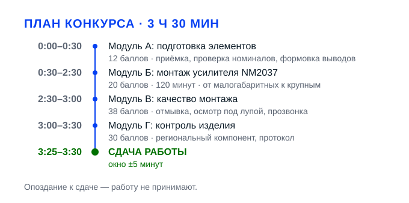
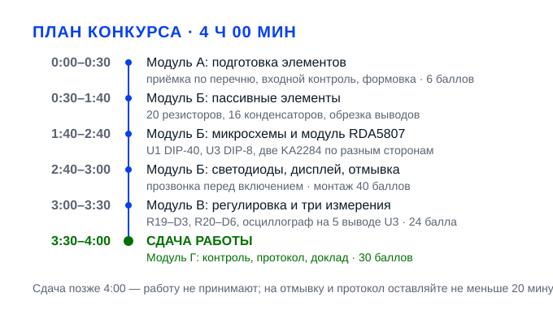
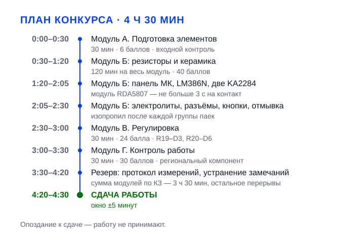

Монтажник радиоэлектронной аппаратуры (Р)
Задания ниже — официальные файлы «Абилимпикс» (источник: abilympics-russia.ru), разложенные по категориям. Решения написаны по тексту задания, регламенту и критериям оценки; в них указано, что именно проверяет эксперт.
Школьник
14–16 лет, базовый уровень заданияВыдержка из официального конкурсного задания: страницы, относящиеся к категории «Школьник» (стр. 6–10 источника).
Пошаговое решение
На конкурсном участке по компетенции «Монтажник радиоэлектронной аппаратуры» школьники собирают моноусилитель низкой частоты NM2037 на микросхеме TDA2030A — изделие не больше 30 деталей на плате A203 размером 53 на 33 миллиметра. На всё отведено 3 часа 30 минут и четыре модуля: подготовка элементов (30 минут, 12 баллов), монтаж (120 минут, 20 баллов), проверка качества монтажа (30 минут, 38 баллов) и контроль изделия, отданный региональному компоненту (30 минут, 30 баллов). Максимум — 100 баллов, и распределены они неравномерно: самый короткий модуль даёт почти сорок процентов оценки. Вывод простой: паять надо быстро, но баллы приносит контроль — ровная галтель, верно поставленный электролит, отмытая спиртом плата и записанные измерения. Ниже — разбор всех четырёх модулей в том порядке, в котором они идут на площадке.

Задача 1. Подготовить элементы к монтажуМодуль А · 12 баллов · 30 минут
Первый модуль кажется самым простым: сверить набор, проверить номиналы, отформовать выводы. На самом деле здесь закладывается всё остальное — если на плату встанет резистор на 120 кОм вместо 100 кОм или перевёрнутый электролит, дальше никакая аккуратная пайка не спасёт: усилитель на TDA2030A либо не запустится, либо уйдёт в возбуждение. За 30 минут надо успеть принять комплект, проверить каждый элемент прибором, а не на глаз, и подготовить выводы так, чтобы при установке их не пришлось гнуть уже на плате.
Действие 1.1. Организовать рабочее место и защиту от статики
Шаг 1.1.1
Надеваем антистатический халат и застёгиваем его полностью, рукава оставляем такими, чтобы манжета не свисала над платой. Браслет заземления надеваем на голое запястье, под манжету, и затягиваем так, чтобы металлическая пластина плотно легла на кожу, а пружинный провод с кнопкой ушёл к зажиму заземления на верстаке. Защитные очки с прозрачными стёклами надеваем до того, как возьмём бокорезы: откушенный вывод летит с ускорением и чаще всего попадает именно в глаз.
Браслет с сопротивлением около 1 МОм и халат с поверхностным сопротивлением порядка десяти в пятой — десятой в седьмой степени ома — это условие допуска к работе, а не украшение: эксперт проверяет спецодежду до старта, и её отсутствие фиксируется в протоколе модуля А. Статический заряд, который копится на синтетике, пробивает тонкие окисные слои и переходы микросхемы, причём отказ часто проявляется не сразу, а через полчаса работы — уже на модуле В, когда исправлять нечего и некогда.
Проверьте три точки: пластина браслета касается кожи, а не рукава; провод браслета действительно подключён к зажиму заземления, а не просто лежит рядом; очки сидят плотно и не сползают при наклоне головы над платой. Халат застёгнут на все кнопки, манжеты не касаются поверхности стола.
Самая частая ошибка — надеть браслет поверх рукава: цепь формально есть, а сопротивление вырастает на порядки, и защита превращается в имитацию. Вторая — прийти в синтетической футболке без халата: к концу второго модуля на плате накапливается заряд, и первый пуск даёт отказ, который спишут на плохую пайку, хотя причина была в спецодежде.
Эксперт обходит рабочие места в первые минуты модуля А и смотрит ровно на эти три предмета — браслет, халат, очки. Это стартовый чек-лист, и его результат входит в 12 баллов модуля.
Шаг 1.1.2
Раскладываем инструмент по местам и проверяем его до первого касания платы. Паяльник или станцию ставим справа, если вы правша, и слева, если левша, — так, чтобы провод не тянулся через зону монтажа. Жало осматриваем: оно должно быть чистым, без нагара и раковин, с ровной рабочей поверхностью шириной 1,5–2 мм. Температуру выставляем 300–320 °C для выводного монтажа и припоя ПОС-61 диаметром 0,8 мм: этого хватает, чтобы пайка занимала две-три секунды, а не десять.
Температура и состояние жала — это прямая связь с качеством соединения, за которое на модуле В дают 38 баллов из ста. Перегретое жало выжигает флюс за полсекунды, припой не растекается, и получается холодная пайка с шариком вместо галтели. Недогретое заставляет держать паяльник на выводе по пять секунд, и тогда перегревается сам элемент: у электролитов выдавливается уплотнение, у диодов уходит тепловой пробой, у TDA2030A отслаиваются выводы.
Проверьте реакцию жала на припой: коснитесь им кончика проволочного припоя — он должен расплавиться за секунду и растечься по жалу тонкой блестящей плёнкой, а не собраться шариком. Если припой липнет и тянется, жало окислено: зачистите его латунной стружкой и облудите заново.
Работать «на глаз», не выставив температуру: у станций с регулировкой это занимает пять секунд, а на неуправляемом паяльнике на 40 Вт жало раскаляется до 400 °C и убивает и флюс, и элементы. Вторая ошибка — держать жало в нагаре: тепло не передаётся, и участник компенсирует это давлением на вывод, отрывая контактную площадку.
Эксперт смотрит на подготовку инструмента в начале модуля: чистоту жала, наличие подставки, отсутствие паяльника на столе без держателя.
Шаг 1.1.3
Организуем три зоны, и это важнее, чем кажется на первый взгляд. Слева от платы — лоток с элементами, разложенными по группам: отдельно резисторы, отдельно конденсаторы, отдельно диоды и микросхема, отдельно клеммники. Справа — паяльник, припой, флюс и кисть. По центру, на держателе или на подставке из поролона, — плата A203 размером 53 на 33 мм, закреплённая так, чтобы её нельзя было сдвинуть локтем. Флакон изопропилового спирта и салфетки убираем из зоны пайки, чтобы не опрокинуть их на горячее жало.
Такое разделение экономит время, которого в модуле А всего 30 минут, и снимает половину ошибок: элемент, взятый из кучки наугад, почти всегда оказывается не тем номиналом. Кроме того, порядок на столе оценивается как часть организации рабочего места, а в модуле В именно чистота зоны определяет, сможете ли вы быстро найти дефект на плате.
Проверьте себя простым тестом: закройте глаза и протяните руку — припой должен оказаться под пальцами, а не на другом конце стола. Плата не качается при нажатии, лотки не стоят на краю, провода паяльника и браслета не пересекают рабочую зону.
Разложить всё в одну кучу «чтобы потом разобрать»: на формовке выводов и на пайке вы будете тратить по десять секунд на поиск каждого резистора, а за 30 минут это уже несколько минут потерь. Ошибка вторая — поставить плату прямо на металлический стол без подложки: выводы царапают покрытие и замыкаются о столешницу.
Организация рабочего места — часть субъективной оценки: эксперт видит, работает участник системно или хаотично, и это отражается в баллах модуля А.
Действие 1.2. Принять комплект по перечню элементов
Шаг 1.2.1
Раскладываем выданный набор на белом листе и сверяем построчно с таблицей перечня из задания. Отмечаем карандашом каждую закрытую позицию: шесть резисторов (четыре по 100 или 120 кОм, один 4,7 кОм, один 1 Ом), семь конденсаторов (C1 0,22 или 0,47 мкФ, C2 2,2 мкФ на 50 В, C3 22 мкФ на 50–63 В, C4 1000 мкФ на 50 В, C5 и C7 по 0,1 мкФ, C6 2200 мкФ на 50 В), два диода 1N4007, микросхема TDA2030A, три клеммника ED500V-2*5 и печатная плата A203.
Приёмка — единственный момент, когда недостающий элемент можно получить без потери времени: дальше замена идёт только через главного эксперта, и то если причина будет признана уважительной. В модуле А на это отведено 30 минут, и они уже пошли, поэтому сверка идёт по перечню, а не по памяти: общее изделие содержит не больше 30 деталей, и каждая позиция в таблице появилась не случайно — в схеме на TDA2030A нет ни одного лишнего резистора.
Все строки перечня закрыты, расхождения записаны точно: чего нет, сколько нет и в каком виде пришло. Отдельно проверьте, что электролиты пришли с нужным напряжением — 50 В, а не 16 В: по ёмкости они совпадут, по напряжению нет, и это увидит только тот, кто смотрит на корпус.
Начать монтаж, не сверив набор: нехватка обнаруживается в середине пайки, когда половина платы уже собрана и обходить недостачу нечем. Вторая ошибка — пересчитывать «на глаз» по кучкам: два одинаковых по размеру конденсатора на 1000 и 2200 мкФ внешне почти не отличаются, а перепутать их означает потерять фильтр питания.
Эксперт проверяет, сверялся ли участник с перечнем: на столе должен быть лист с отметками, а не хаотичная куча. Это видимый признак системной работы.
Шаг 1.2.2
Осматриваем печатную плату до того, как на неё что-то встанет. Кладём её на белый лист и смотрим на просвет и под лупой 4×: нет ли замыканий между дорожками, не осталось ли медных заусенцев после фрезеровки, все ли отверстия свободны, совпадает ли шелкография с монтажной схемой. Отдельно проверяем кромки — на плате 53 на 33 мм после раскроя часто остаётся облой, который потом мешает элементу сесть до нужного зазора.
Плата — единственная деталь набора, которую нельзя заменить быстро, и дефект на ней обнуляет всю работу: замкнутая дорожка даст короткое замыкание по питанию, и при первом включении сгорит не только микросхема, но и блок питания на площадке. Замена платы после начала монтажа невозможна — распаянное изделие уже не пересадить, а время модуля Б уйдёт на разбор.
Проверьте три вещи: под лупой нет медных перемычек между соседними дорожками, все отверстия проколоты и в них проходит вывод резистора, контур платы совпадает с рисунком в задании по расположению площадок. Сомнительное место сфотографируйте или запомните и покажите эксперту до начала монтажа.
Пропустить осмотр, потому что «плата заводская»: брак в мелкосерийных наборах встречается регулярно, и замыкание, найденное после сборки, стоит всех 20 баллов модуля Б. Вторая ошибка — зачищать плату наждачной бумагой «для блеска»: стирается защитное покрытие и оголяются дорожки под соседние элементы.
Эксперт может спросить, осматривалась ли плата. Правильный ответ — с конкретикой: где смотрели, что нашли; это читается как понимание входного контроля.
Шаг 1.2.3
Если позиция не совпала — не хватает элемента, пришёл другой номинал, конденсатор с меньшим напряжением или повреждённый корпус — сразу идём к главному эксперту или его заместителю. Говорим коротко и предметно: не «у меня не всё в порядке», а «нет одного резистора 4,7 кОм и пришёл электролит на 16 В вместо 50 В». Показываем перечень с отметками, чтобы разговор занял полминуты, а не пять.
Претензию, заявленную после начала монтажа, не примут: считается, что участник согласился с набором при приёмке. Кроме того, спокойное и точное обращение — часть оценки коммуникации: эксперт видит, умеет ли участник формулировать проблему, а не паниковать, и это качество в профессии монтажника нужно каждый день при сдаче смены.
Факт обращения зафиксирован, ответ получен: элемент заменён, добавлен или объяснено, почему в наборе именно такой номинал. До момента, пока ответ не получен, спорную деталь в монтаж не пускаем — отложите её в сторону от лотка.
Молча «обойтись» без элемента или поставить 16-вольтовый конденсатор в цепь питания на 12 В «пока поработает»: на первом же включении он вспухнет, а работа будет снята с оценки как несоответствующая заданию. Вторая ошибка — начать спорить и доказывать, вместо того чтобы предъявить перечень и назвать расхождение.
Наблюдает за тем, как участник ведёт приёмку: обращается вовремя, формулирует точно, фиксирует ли результат. Это входит в субъективную часть модуля А.
Действие 1.3. Проверить номиналы прибором
Шаг 1.3.1
Берём мультиметр, включаем режим измерения сопротивления и сначала замыкаем щупы между собой: прибор должен показать 0,2–0,5 Ом собственного сопротивления — эту величину потом вычитаем при измерении резистора на 1 Ом. Каждый резистор измеряем отдельно: 100 кОм и 120 кОм различаются на 20 процентов, и это видно сразу, а 4,7 кОм и 1 Ом не спутать вообще. Показания сверяем с цветовыми кольцами: у 100 кОм это коричневый, чёрный, жёлтый; у 120 кОм — коричневый, красный, жёлтый; у 4,7 кОм — жёлтый, фиолетовый, красный; у 1 Ом — коричневый, чёрный, золотой.
Измерение закрывает сразу две задачи: оно ловит ошибку маркировки, которая в наборах бывает, и оно приучает не доверять цвету на корпусе, потому что краска выцветает и кольца читаются неверно. Для схемы на TDA2030A номинал в цепи обратной связи задаёт коэффициент усиления, и резистор на 4,7 кОм вместо 47 кОм меняет его в десять раз — усилитель либо не раскачает сигнал, либо сорвётся в возбуждение.
Все шесть резисторов уложены по порядку обозначений на листе, показания записаны рядом с каждым. Разброс в пределах плюс-минус пяти процентов — норма для оксиднометаллических резисторов, всё, что выходит за эти пределы, откладываем в сторону и показываем эксперту.
Проверять только цветовые кольца, не глядя на прибор: красный и коричневый в кольце на небольшом корпусе различить сложно, а разница между 120 кОм и 100 кОм в делителе смещения смещает рабочую точку усилителя. Вторая ошибка — измерять резистор, не выпаяв его из ленты: параллельно подключённые куски ленты дают неверное показание.
Эксперт смотрит на наличие мультиметра в работе и на то, записывает ли участник результаты: запись — единственное доказательство входного контроля.
Шаг 1.3.2
Конденсаторы проверяем по двум признакам сразу — маркировка и измерение. У неполярных керамических C1, C5 и C7 код на корпусе означает ёмкость в пикофарадах: 224 — это 22 на десять в четвёртой, то есть 0,22 мкФ, 474 — 0,47 мкФ, 104 — 0,1 мкФ. Электролиты C2, C3, C4 и C6 ставим на мультиметр в режим измерения ёмкости: 2,2 мкФ, 22 мкФ, 1000 мкФ и 2200 мкФ должны попадать в допуск, обычно минус двадцать — плюс пятьдесят процентов. Заодно смотрим на корпус: вздутая крышка, подтёк у основания и следы электролита означают, что деталь в монтаж не идёт.
Электролит в этой схеме работает в цепи обратной связи и в фильтре питания, и его ёмкость определяет, с какой частоты усилитель начинает нормально передавать сигнал: с 22 мкФ вместо 2,2 мкФ срез уходит вниз, а с перевёрнутым по полярности конденсатором он через несколько минут нагреется и потеряет ёмкость. Именно поэтому проверка идёт прибором, а не на глаз: внешне исправный, но потерявший ёмкость конденсатор — самая неочевидная причина гула в динамике.
Каждый конденсатор подписан и отложен к своей позиции, измеренная ёмкость записана. Отдельно проверьте, что у C3 на корпусе стоит 50 или 63 В, а не 16 В: при питании 12 В запас по напряжению в этой цепи обязателен.
Ставить электролит, не глядя на полосу минуса: у импортных деталей минус обозначен светлой полосой с чертой, и перевёрнутый конденсатор в фильтре питания вспухает при первом включении, заливая плату. Вторая ошибка — считать, что «104» и «474» — это одна и та же деталь: по ёмкости они различаются в пять раз.
Эксперт может попросить объяснить код на корпусе. Умение читать 224 и 104 — базовый навык компетенции, и он проверяется вопросом на месте.
Шаг 1.3.3
Диоды 1N4007 прозваниваем в режиме проверки перехода: в прямом направлении прибор показывает 0,5–0,7 В, в обратном — обрыв. Одновременно определяем, где катод: у 1N4007 это светлое или серебристое кольцо на корпусе, и именно оно должно смотреть в сторону, указанную на монтажной схеме. Микросхему TDA2030A осматриваем внешне: пять выводов целые, не погнуты, корпус без трещин, маркировка читается. Прозванивать выводы микросхемы мультиметром в режиме сопротивления можно, но только на пределе, где прибор даёт маленький ток, иначе можно повредить входной каскад.
Диоды в этой схеме стоят в цепи питания и защищают усилитель от переполюсовки: если один из них встанет обратно или окажется пробитым, питание приложится к микросхеме в неправильной полярности, и TDA2030A выйдет из строя мгновенно. Проверка занимает минуту, замена микросхемы на площадке — нет: второй такой в наборе не будет.
Показания записаны: у каждого диода прямое падение в пределах 0,5–0,7 В, обратное — «1» или обрыв. Микросхема лежит выводами вверх, корпус не нагрет, на выводах нет следов припоя — признак, что деталь не паяли до вас и не перегревали при демонтаже.
Ставить диод, ориентируясь на длину выводов, а не на кольцо: у 1N4007 выводы облужены одинаково, и «длинный — это плюс» здесь не работает. Вторая ошибка — проверять диод прозвонкой со звуком: прибор в этом режиме даёт малое напряжение, и исправный переход покажется оборванным.
Эксперт следит, как участник обращается с микросхемой: берёт за корпус, не за выводы, не кладёт на металл. Это профессиональная привычка, и она видна сразу.
Действие 1.4. Отформовать выводы и подготовить элементы к установке
Шаг 1.4.1
Резисторы формуем круглогубцами с диаметром губок около двух миллиметров: захватываем вывод у самого корпуса, придерживаем его и отгибаем под углом 90 градусов так, чтобы изгиб начинался не ближе полутора миллиметров от корпуса. Затем разводим выводы до шага отверстий на плате, который виден на монтажной схеме, — обычно это 7,5–10 мм для резисторов этого типоразмера. Диоды формуем так же, но следя, чтобы изгиб не приходился на кольцо катода и на место выхода вывода из стеклянного или пластикового корпуса.
Изгиб у самого корпуса — это надлом вывода, который не виден глазом, но даёт трещину в металлизации: элемент внешне стоит ровно, а через неделю работы в цепи появляется плавающий контакт. На модуле В любая нестабильность читается как дефект монтажа, а на модуле Г — как отказ изделия, и баллы снимаются дважды за одну и ту же ошибку.
Проверьте каждый отформованный элемент: изгиб плавный, без заломов и следов перекуса круглогубцами, выводы параллельны друг другу, расстояние между ними точно совпадает с отверстиями. Приложите элемент к плате без нажима — выводы должны входить в отверстия свободно, без разведения и подклинивания.
Гнуть вывод плоскогубцами с широкими губками прямо у корпуса: половина резисторов в наборах приходит с микротрещинами именно после такой формовки, и на финальной проверке плата «плавает» по сопротивлению. Вторая ошибка — разводить выводы на глаз, шире отверстий: потом элемент вставляют с натягом, и площадка отрывается от платы.
Эксперт осматривает отформованные элементы до пайки и отмечает ровность ряда: у правильно смонтированной платы корпуса резисторов стоят на одной высоте и параллельно друг другу.
Шаг 1.4.2
Керамические конденсаторы C1, C5 и C7 формуем коротко: их выводы разводятся на шаг отверстий 2,5–5 мм, а сам корпус после установки должен стоять почти вплотную к плате, с зазором не больше половины миллиметра. Электролиты C2, C3, C4 и C6, наоборот, ставятся с зазором 1–2 мм между корпусом и платой: под них попадает флюс при пайке, и если прижать корпус наглухо, отмыть эту зону изопропиловым спиртом уже не получится.
Зазор у электролитов — это не эстетика, а требование к отмывке и к тепловому режиму: остатки флюса под корпусом со временем темнеют и становятся проводящими, а сам конденсатор при работе греется от близко стоящих элементов. Кроме того, припой, затекший под корпус, невозможно увидеть при визуальном контроле, и дефект останется незамеченным до отказа.
Проверьте высоту посадки: положите плату с вставленными элементами на стол и посмотрите сбоку — зазор у электролитов одинаковый по всей длине корпуса, керамика сидит низко, выводы не упираются в соседние дорожки. У C4 и C6 корпуса самые высокие, и они не должны мешать установке клеммников.
Вдавить электролит до упора в плату «чтобы держался крепче»: он держится не корпусом, а пайкой, а прижатый корпус закрывает зону промывки и создаёт механическое напряжение при нагреве. Вторая ошибка — отформовать полярный конденсатор, не отметив минус: после формовки выводы выглядят одинаково, и половина перевёрнутых электролитов появляется именно так.
Эксперт смотрит на высоту установки всех элементов сразу после пайки: ряд должен читаться как линия, а не как случайный набор.
Шаг 1.4.3
Выводы микросхемы TDA2030A формуем только в оснастке или, в крайнем случае, аккуратно подгибаем все пять выводов одновременно, придерживая корпус: по одному выводу гнуть нельзя, они отламываются у основания. Микросхема ставится на радиатор или на теплоотводящую площадку, как показано в задании: через тонкий слой теплопроводящей пасты, без перекоса, винт затянут так, чтобы корпус не повело. Если радиатор металлический и соединён с общим проводом, между ним и корпусом ставится изолирующая прокладка.
TDA2030A при работе рассеивает несколько ватт тепла, и без отвода тепла она уходит в тепловую защиту уже через минуту после включения: звук пропадает, и участник ищет ошибку в монтаже, хотя она в креплении. Перекос корпуса на радиаторе — вторая причина отказов: одна сторона прижата, вторая висит, тепловой контакт есть только по линии, и кристалл перегревается локально.
Проверьте посадку: микросхема стоит ровно, выводы не касаются друг друга и не замкнуты на радиатор, крепёжный винт затянут от руки без люфта, слой пасты тонкий и равномерный, без подтёков на выводы. Покачайте корпус пальцем — он не должен шевелиться относительно радиатора.
Затягивать винт «до упора»: пластиковый корпус TO-220 трескается, и микросхема выходит из строя ещё до включения. Вторая ошибка — паять выводы, когда корпус уже притянут к массивному радиатору: радиатор забирает тепло, пайка получается холодной, а прогрев до нужной температуры требует держать жало по десять секунд и убивает кристалл.
Эксперт проверяет крепление микросхемы до пайки: ровность посадки и отсутствие замыкания выводов на радиатор видны сразу, и это одна из причин, по которым модуль А выделен отдельно.
Шаг 1.4.4
Отрезки провода для клеммников готовим заранее: зачищаем изоляцию на 5–6 мм, не перекусывая жилки, скручиваем их в жгут по направлению скрутки и облуживаем кончик за одну-две секунды, чтобы припой вошёл между жилками, а не лежал шапкой. Выводы элементов, пришедшие нелужёными, зачищаем лезвием или ластиком до блеска и лудим тонким слоем. Припой берём ПОС-61 диаметром 0,8 мм, флюс — ЛТИ-120 или канифоль, и после лужения обязательно снимаем остатки флюса салфеткой со спиртом.
Лужение решает сразу две задачи: оно убирает окисную плёнку, из-за которой припой не смачивает вывод, и оно создаёт тот запас припоя, благодаря которому сама пайка занимает две секунды вместо пяти. Время здесь критично: за 120 минут модуля Б нужно поставить почти два десятка элементов, и каждая лишняя секунда на соединении — это минус время на контроль.
Проверьте облуженный конец: он блестящий, припой лежит тонким слоем по всей окружности, жилки не разлохмачены, изоляция не оплавлена и не укоротилась. Проведите ногтем по зачищенной части — не должно быть шероховатости от окисла.
Лудить, не сняв окисел: припой собирается в капли и не растекается, а соединение получается с «холодной» границей. Вторая ошибка — зачищать провод бокорезами вместо снятия изоляции съёмником: половина жилок надрезается, и провод ломается при первом же изгибе, что на модуле Г выглядит как обрыв питания.
Эксперт смотрит на качество заделки проводов: ровный поясок зачистки, отсутствие надрезанных жилок и оплавленной изоляции — признаки квалификации, которые не подделать на финале.
Задача 2. Смонтировать усилитель NM2037 на платеМодуль Б · 20 баллов · 120 минут
Два часа — самый длинный модуль конкурса, и он же самый коварный: времени много, а ошибки здесь стоят дороже всего, потому что исправлять их придётся уже на собранной плате. Правило задания звучит просто: сначала малогабаритные элементы, затем все остальные. За этой формулировкой стоит физика процесса — крупный электролит, поставленный первым, закрывает доступ жалом к соседним площадкам, и пайка превращается в борьбу с собственным изделием.
Действие 2.1. Установить элементы в порядке от малогабаритных к крупным
Шаг 2.1.1
Начинаем с резисторов: R1, R2, R4, R5 по 100 или 120 кОм, R3 на 4,7 кОм и R6 на 1 Ом. Вставляем их по монтажной схеме, сверяя каждое обозначение с рисунком, а не по памяти. Элемент входит в отверстия без нажима, садится на высоту 1–2 мм от платы, выводы с обратной стороны разводим на 30–45 градусов в разные стороны — так элемент не выпадает при переворачивании платы и держится до пайки. Резисторы ставим группой: сначала все четыре одинаковых, затем R3 и R6 отдельно.
Групповая установка экономит время и снижает вероятность ошибки: пока в руках четыре одинаковые детали, порядок контролируется глазом, а когда между ними уже стоят конденсаторы, перепутать позицию проще. Разведённые с обратной стороны выводы — это механический фиксатор, без которого плата при пайке переворачивается и элементы высыпаются на стол, а каждый выпавший элемент — это заново потерянное время и риск загнуть вывод.
Проверьте: все шесть позиций заняты, ни одна не пропущена, корпуса стоят на одной высоте и параллельно друг другу, а номиналы соответствуют схеме — 100 или 120 кОм в четырёх позициях, 4,7 кОм в R3, 1 Ом в R6. Посмотрите на плату с торца: ряд резисторов должен читаться как линия.
Ставить резисторы в произвольном порядке, ориентируясь на свободное место: в этой схеме R6 на 1 Ом стоит в силовой цепи, и перепутать его с R3 означает получить усилитель, который работает, но греется и хрипит. Вторая ошибка — вставлять элемент с нажимом, разводя выводы уже в отверстиях: площадка отрывается от платы, и восстанавливать её придётся перемычкой, за которую снимут баллы.
Эксперт проходит по ряду и смотрит на высоту посадки и читаемость обозначений: если шелкография платы закрыта корпусами, значит элементы посажены слишком низко.
Шаг 2.1.2
Следом ставим диоды VD1 и VD2 типа 1N4007 и керамические конденсаторы C1 на 0,22 или 0,47 мкФ, C5 и C7 на 0,1 мкФ. У диодов главное — кольцо катода: оно должно смотреть в ту сторону, которая показана на монтажной схеме, и перед установкой полезно положить оба диода рядом и убедиться, что кольца ориентированы одинаково. Керамику C1, C5, C7 сажаем низко, почти к плате, выводы разводим коротко, потому что длина вывода в высокочастотной цепи работает как антенна.
Диоды в цепи питания защищают усилитель от переполюсовки, и ошибка в ориентации одного из них означает, что при неправильном подключении питания защита не сработает и микросхема выйдет из строя. Керамические конденсаторы на 0,1 мкФ стоят по питанию и в цепи Цобеля: они гасят высокочастотные наводки, и короткий вывод здесь важнее, чем аккуратность внешнего вида, — лишний сантиметр провода превращает фильтр в колебательный контур.
Проверьте ориентацию обоих диодов по кольцу и по схеме, а у керамики — код на корпусе: 224 или 474 у C1, 104 у C5 и C7. Элементы сидят плотно, выводы не пересекаются с дорожками соседних цепей, зазор между корпусом и платой не больше половины миллиметра.
Поставить диод, не проверив кольцо, потому что «он всё равно работает в обе стороны»: в обратном включении диод откроется и закоротит питание, а на модуле Г это выглядит как отказ изделия без видимой причины. Вторая ошибка — взять C1 на 0,1 мкФ вместо 0,22 мкФ из общей кучки керамики: срез по низкой частоте сместится, и звук станет тонким.
Эксперт проверяет полярность диодов до пайки — это самая частая ошибка в этой компетенции, и её ищут целенаправленно.
Шаг 2.1.3
Последними ставим электролиты: C2 на 2,2 мкФ, C3 на 22 мкФ, C4 на 1000 мкФ и C6 на 2200 мкФ. У каждого перед установкой находим минус — светлую полосу с чертой на корпусе — и сверяем с маркировкой на плате: закрашенный сектор или знак минуса на шелкографии показывает, куда должен смотреть минусовой вывод. Корпуса ставим с зазором 1–2 мм от платы, самые высокие C4 и C6 — ближе к краю, чтобы они не мешали устанавливать клеммники и не закрывали доступ к соседним площадкам.
Полярность электролита — не формальность: при обратном включении оксидный слой внутри разрушается, ток растёт, конденсатор греется и через несколько минут вспухает, а в худшем случае разрывается. Ошибка обходится дорого ещё и потому, что замена требует демонтажа: выпаять конденсатор из двусторонней платы без повреждения переходных отверстий с первого раза удаётся не всем, а времени на это в модуле Б остаётся всё меньше.
Проверьте каждый электролит по двум признакам: полоса минуса смотрит в сторону, обозначенную на плате, и корпус сидит ровно, без перекоса. Заодно убедитесь, что ёмкости не перепутаны: C2 и C3 маленькие, C4 и C6 крупные, и их нельзя поменять местами по габариту — они действительно различаются в сотни раз.
Ставить электролит «как встанет», а потом проверять по схеме: проверка после пайки бесполезна, если деталь уже припаяна, — перевернуть её без демонтажа нельзя. Вторая ошибка — определить минус по длине вывода: у многих импортных конденсаторов выводы подрезаны одинаково, и ориентироваться нужно только на полосу на корпусе.
Эксперт осматривает все четыре электролита именно на полярность, и это одна из точек, где баллы модуля Б снимаются быстрее всего.
Действие 2.2. Пропаять соединения
Шаг 2.2.1
Техника пайки одна и та же для всех выводных элементов, и её надо выдержать до автоматизма. Жало ставим одновременно на контактную площадку и на вывод, держим полсекунды-секунду, чтобы прогрелись оба, и только потом подаём припой в точку их соприкосновения — не на жало. Припой расплавляется, обволакивает вывод и растекается по площадке, образуя вогнутую галтель. Через одну-две секунды убираем сначала припой, потом жало, и три секунды не двигаем элемент: пока припой не застыл, любое смещение даёт матовую, зернистую поверхность и плохой контакт.
Именно так получается соединение, которое на модуле В оценивают в 38 баллов: вогнутая блестящая галтель с углом смачивания меньше 30 градусов означает, что припой сплавился с обеими поверхностями. Если подавать припой на жало, как делают новички, флюс сгорает раньше, чем прогреется площадка, и получается шарик, лежащий на окисле, — внешне похоже на пайку, а электрически это разрыв.
Проверяйте каждое соединение сразу, не откладывая на потом: галтель вогнутая и блестящая, припой закрывает площадку и вывод, контур вывода виден сквозь припой, рядом нет шариков и капель. Потяните вывод пинцетом с небольшим усилием — соединение не должно хрустнуть или шевельнуться.
Перегревать соединение: держать жало по пять секунд и добавлять припой «чтобы крепче было». Флюс выгорает, припой окисляется, галтель становится матовой и рыхлой, а площадка отклеивается от текстолита. Вторая ошибка — сдвинуть вывод сразу после снятия жала: получается «морозная» пайка с характерным зернистым изломом, которая работает до первого нагрева.
Эксперт на модуле В смотрит на галтель через лупу и оценивает именно форму и блеск, а не количество припоя: лишний припой в виде горки — такой же дефект, как его нехватка.
Шаг 2.2.2
Паяем группу резисторов и диодов, начиная с элементов, стоящих ближе к краю платы, чтобы постепенно двигаться к центру и не задевать локтем уже пропаянные. Каждое соединение — две секунды работы жалом, затем пауза, за которую площадка остывает. После каждого элемента сразу смотрим на пайку с лупой 4×, а не откладываем контроль на конец модуля: на уже собранной плате разглядеть непропай под корпусом почти невозможно.
Последовательность от края к центру — это приём, который экономит нервы: элемент, припаянный последним в центре, не мешает работать с соседними, а плата не переворачивается лишний раз. Немедленный контроль после каждой пары соединений даёт возможность исправить дефект за пять секунд, пока припой и флюс под рукой, вместо того чтобы искать его на модуле В, когда исправление уже стоит времени.
Проверьте ряд: все площадки закрыты припоем, галтели одинаковые по форме, нет перемычек между соседними выводами, а сами выводы с обратной стороны торчат ровно и не загибаются на соседние дорожки. Сомнительное соединение лучше сразу подпаять заново: добавьте флюс, прогрейте и дайте припою растечься.
Пропаивать «на глаз», без лупы: непропай выглядит как нормальная пайка, если смотреть сверху, и обнаруживается только после включения, когда изделие молчит. Вторая ошибка — торопиться и паять подряд двадцать соединений без пауз: площадки перегреваются, а текстолит вокруг них темнеет, что эксперт видит сразу.
Эксперт проверяет не только само соединение, но и следы перегрева вокруг площадки: потемневший текстолит и отслоённая маска — отдельный минус.
Шаг 2.2.3
Электролиты паяем с тепловой осторожностью. Корпус держим пальцем или пинцетом у основания, жало ставим на вывод со стороны площадки, работаем не дольше двух секунд на соединение и даём детали остыть между выводами. Если корпус конденсатора ощутимо нагрелся, паузу увеличиваем до десяти секунд: у электролитов при перегреве выдавливается резиновое уплотнение и растёт ток утечки. Минусовой вывод паяем первым, чтобы не путаться, — он обычно обозначен полосой и хорошо виден.
Тепловой режим здесь важнее, чем скорость: перегретый конденсатор внешне остаётся целым, но теряет часть ёмкости и приобретает утечку, и изделие начинает гудеть или тихо хрипеть. Найти такую причину на модуле В без замены детали невозможно, а замена распаянного электролита — это самая частая операция, на которой участники теряют площадки и баллы за качество монтажа.
Проверьте: корпуса не нагреты после пайки, уплотнение у основания не выдавлено, на корпусе нет потёков, галтели блестящие, площадки не перегреты. Все четыре электролита стоят на своей высоте, минусовые полосы видны и совпадают с маркировкой платы.
Держать жало на выводе электролита по пять секунд «чтобы наверняка»: именно так в наборах появляются конденсаторы с потерянной ёмкостью, а участник потом ищет причину гула в схеме. Вторая ошибка — придерживать корпус пальцами без напёрстка: ожог, и работа останавливается на середине модуля.
Эксперт обращает внимание на состояние корпусов: выдавленное уплотнение и потемнение у основания читаются как перегрев при монтаже.
Шаг 2.2.4
Микросхему TDA2030A паяем последней и по правилам для теплонагруженных корпусов. Выводы паяем по одному, с паузой 5–10 секунд между ними, придерживая корпус так, чтобы он не сдвинулся. Если радиатор уже притянут, его масса забирает тепло, и прогрев идёт медленнее: тогда помогает пинцет-теплоотвод, зажатый на выводе между корпусом и местом пайки. Припой подаём минимально: пять выводов с шагом 2,54 мм стоят близко, и капля легко перекрывает соседний вывод.
Микросхема — самая дорогая и самая уязвимая деталь набора: перегрев при пайке уводит параметры входа, и усилитель начинает возбуждаться на высокой частоте, что слышно как свист или шуршание поверх музыки. Кроме того, перемычка припоя между выводами микросхемы почти всегда означает выход из строя при первом включении, а запасной микросхемы в наборе нет.
Проверьте под лупой каждый из пяти выводов: припой лежит отдельными галтелями, между ними виден зазор, ни одна капля не перетекает на соседний вывод. Корпус не нагрет, маркировка читается, выводы не сместились относительно площадок.
Паять все пять выводов подряд, не давая остыть: к третьему выводу корпус горячий, а к пятому припой уже не смачивается, и соединение получается рыхлым. Вторая ошибка — проверять перемычки, не глядя в лупу: зазор между выводами 2,54 мм, и капля припоя в нём видна только при увеличении.
Эксперт осматривает микросхему отдельно и через лупу: это единственная деталь, ошибки монтажа которой приводят к полному отказу изделия на модуле Г.
Шаг 2.2.5
После пайки обрезаем выводы бокорезами, оставляя над площадкой 1–1,5 мм: длинные выводы торчат, цепляют за инструмент и могут замкнуть соседнюю дорожку, а срезанные заподлицо оставляют в пайке точку напряжения. Плату держим на весу или на подставке, а не прижимаем ладонью: при откусывании усилие передаётся на площадку, и она может оторваться. Отрезанный кончик придерживаем пальцем или прикрываем — он отлетает с приличной скоростью и попадает в глаза, поэтому очки на этом этапе обязательны.
Обрезка влияет сразу на две оценки: контур платы и отсутствие торчащих элементов входят в критерии внешнего вида, а случайно замкнутая длинным выводом дорожка даёт дефект, который потом ищут полчаса. Кроме того, ровно подрезанные выводы — это признак того, что монтаж делался по технологии, а не наспех.
Проверьте: все выводы подрезаны на одну высоту, площадки не повреждены, на плате не осталось обрезков припоя и медной стружки. Пройдите плату лупой по диагонали — блестящие точки на маске это шарики припоя, которые нужно снять пинцетом.
Откусывать вывод, не придерживая его: кончик улетает, а вместе с ним уходит и часть припоя из галтели, оставляя раковину. Вторая ошибка — резать вывод под корпус, с перекосом: корпус трескается у основания, и элемент отламывается при первой же проверке на механическую прочность.
Эксперт смотрит на высоту обрезки и чистоту платы: обрезки припоя на маске — прямой минус в критерии «качество монтажа».
Действие 2.3. Установить клеммники и заделать провода
Шаг 2.3.1
Три клеммника ED500V-2*5 ставим на места, обозначенные на монтажной схеме: один под питание, один под входной сигнал, один под нагрузку. У каждого клеммника два контакта и шаг 5 мм, поэтому он садится в отверстия только в одном положении — винтами в сторону края платы, чтобы к ним был доступ отвёрткой. Вставляем клеммник до упора, проверяем, что корпус не перекошен, и пропаиваем оба вывода с той же выдержкой, что и остальные элементы.
Клеммники — это точки, к которым на модуле Г будут подключать питание и нагрузку, и от качества их пайки зависит, не начнёт ли изделие пропадать при малейшем движении провода. Если клеммник посажен с перекосом, при затягивании винта корпус тянет вывод и площадка трескается — механическая нагрузка здесь гораздо выше, чем у любого другого элемента на плате.
Проверьте: клеммник сидит ровно, оба вывода пропаяны с двух сторон площадки, винты крутятся свободно и не выпадают, корпус не шатается при нажатии пальцем. Отверстия для провода смотрят вверх или в сторону, но не в плату.
Пропаять только один вывод из двух: второй держится на трении, и при затяжке винта клеммник проворачивается, отрывая площадку. Вторая ошибка — притянуть винты до упора сразу, пока клеммник не пропаян: усилие уходит в плату, и трещина появляется ещё до начала работы.
Эксперт проверяет клеммники на механическую прочность — это единственные элементы, к которым прикладывают усилие при подключении.
Шаг 2.3.2
Заделываем провода: снимаем изоляцию на 5–6 мм, скручиваем жилки и облуживаем кончик, затем вставляем в клеммник до упора, чтобы зачищенная часть не торчала наружу, и затягиваем винт. Питание подключаем с соблюдением полярности: плюс и минус указаны на плате, и путать их нельзя даже на пробном пуске. Входной провод идёт от источника сигнала, выходной — на нагрузку 4–8 Ом; экранированный провод входа укладываем так, чтобы экран был соединён с общим проводом только со стороны источника.
Торчащие за пределами клеммника жилки — это готовая перемычка: достаточно, чтобы оголённый кончик коснулся соседнего контакта или корпуса, и питание замкнётся. Облуживание кончика нужно для того, чтобы при затягивании винта жилки не разъехались и контакт не ослаб со временем, а соблюдение полярности — потому что обратное питание выводит микросхему из строя за доли секунды.
Проверьте каждый провод: зачищенная часть полностью внутри клеммника, жилки не разлохмачены, винт затянут так, что провод не выдёргивается рукой, изоляция не надрезана у края зачистки. Потяните каждый провод на себя — он должен держаться в зажиме, а не выскальзывать.
Оставить длинные голые концы, «чтобы наверняка был контакт»: именно они замыкают соседние контакты при первом же подключении. Вторая ошибка — затягивать винт на изоляции: контакта нет вовсе, а изделие выглядит собранным.
Эксперт на модуле Г подключает изделие сам или наблюдает за подключением, и состояние заделки проводов видно в этот момент лучше всего.
Шаг 2.3.3
Маркируем провода и клеммники так, чтобы через час не гадать: питание, вход, выход. Достаточно коротких бумажных бирок или полосок малярного скотча с подписью, наклеенных на провод у самого клеммника. Одновременно проверяем, что клеммники стоят по схеме: питание — на своих контактах, вход—выход не перепутаны, ничего не подключено к свободным площадкам.
Маркировка — приём из реального производства: на сборочном участке никто не держит в голове, какой из трёх одинаковых проводов идёт к нагрузке. На конкурсе это экономит время на модуле Г, где подключение идёт уже в присутствии эксперта, и снижает риск перепутать вход с выходом — ошибка, которая не даёт услышать сигнал и уводит диагностику не в ту сторону.
Проверьте: каждый провод подписан, бирки держатся, надписи читаются с рабочего положения. Сверьте расположение клеммников с монтажной схемой ещё раз, до подачи питания, — это последняя возможность исправить ошибку без последствий.
Подписывать «потом, когда всё заработает»: если не заработает, разбираться придётся именно с подключением, а бирок не будет. Вторая ошибка — перепутать вход с выходом: усилитель в этом случае молчит, и участник начинает проверять питание и пайку, теряя время модуля Г.
Эксперт отмечает, есть ли на изделии маркировка: это признак культуры монтажа, и он входит в субъективную часть оценки.
Действие 2.4. Проверить собранное изделие перед модулем контроля
Шаг 2.4.1
Перед тем как отложить паяльник, делаем полный визуальный осмотр: плата на белом листе, лупа 4×, обход по часовой стрелке от угла к углу. Смотрим на галтели, на ориентацию диодов и электролитов, на зазоры, на отсутствие шариков припоя и медной стружки. Отдельно проверяем зону под микросхемой и вокруг клеммников — там чаще всего остаются сопли припоя, которые не видны при беглом взгляде.
Полный обход, а не выборочный взгляд, нужен потому, что глаз привыкает к своей же работе и перестаёт замечать дефекты: то, что вы паяли двадцать минут назад, кажется нормальным. Свежий системный проход по периметру ловит именно те ошибки, которые пропущены при пайке, и на модуле В за них дают до 38 баллов.
Проверьте: все элементы на своих местах и в правильной ориентации, галтели блестящие и вогнутые, перемычек нет, плата чистая и сухая. Если нашли дефект — исправляйте сразу, пока паяльник горячий и флюс под рукой.
Осматривать плату бегло, «по верхам», и успокаивать себя тем, что паял аккуратно: большинство непропаев обнаруживается именно на этом этапе, а не на включении. Вторая ошибка — смотреть только со стороны пайки, не проверяя посадку элементов с другой стороны.
Эксперт может подойти в конце модуля Б и посмотреть плату до начала модуля В: первое впечатление от внешнего вида складывается именно здесь.
Шаг 2.4.2
Проверяем электрику без питания: переводим мультиметр в режим сопротивления и измеряем между контактами питания. Исправная плата покажет не ноль, а несколько сотен ом и выше, причём показание будет расти по мере заряда электролитов — это нормально. Прямой ноль означает короткое замыкание, и включать изделие нельзя. Затем прозваниваем цепи по схеме: от клеммника питания до выводов микросхемы, от входа до соответствующего вывода, от выхода до выходного клеммника.
Проверка сопротивления перед первым включением — правило, которое спасает изделие: при замкнутом питании включение гарантированно выведет из строя и микросхему, и источник тока на площадке. Прозвонка цепей подтверждает, что припой дошёл до всех нужных точек: непропай на одном выводе выглядит как исправная пайка, но цепь не замкнута, и изделие молчит.
Сопротивление между плюсом и минусом питания не равно нулю и составляет хотя бы сотни ом, все проверенные цепи звонятся, на корпус и между соседними дорожками замыканий нет. Показания запишите — на модуле Г они пригодятся для сравнения.
Включать питание, «чтобы быстрее проверить»: при замыкании вы услышите треск и увидите дым, а восстанавливать будет нечего. Вторая ошибка — звонить цепи, не убедившись, что щупы стоят в правильном гнезде прибора: показания в режиме измерения напряжения ничего не значат.
Эксперт видит, проверяет ли участник изделие перед включением: наличие мультиметра в работе на этом этапе — признак профессионального подхода.
Шаг 2.4.3
Проверяем механику: каждый элемент покачиваем пинцетом с небольшим усилием, клеммники пробуем повернуть пальцем, микросхему — сдвинуть на радиаторе. Ничего не должно хрустеть, шататься или поворачиваться. Смотрим на обратную сторону платы: подрезанные выводы не загибаются на соседние дорожки, галтели не треснули, вокруг площадок нет тёмных ореолов от перегрева.
Механическая прочность — это то, что отличает монтаж от макета: на изделии, которое поедет на площадку и будет там подключено и отключено несколько раз, слабое соединение обязательно проявится. Тёмный ореол вокруг площадки означает перегрев, при котором адгезия фольги к текстолиту уже упала, и такая площадка оторвётся при первом же механическом воздействии.
Проверьте: ни один элемент не шевелится, клеммники не проворачиваются, обратная сторона платы чистая и без загибов выводов, все площадки одного цвета с маской. Оставшееся время модуля Б потратьте на исправление найденного.
Оставить «потом поджать»: следующий модуль идёт по времени, и вернуться к пайке будет уже нельзя. Вторая ошибка — проверять прочность, дёргая элемент за корпус вверх: так отрывают исправные соединения.
Эксперт оценивает монтаж как готовое изделие: шатающиеся элементы и оторванные площадки видны без приборов.
Шаг 2.4.4
Сверяем результат с монтажной схемой ещё раз, но теперь на собранной плате: расположение элементов, их ориентация, отсутствие лишних деталей и незанятых позиций. Полезно посчитать: шесть резисторов, семь конденсаторов, два диода, микросхема, три клеммника — всё на местах, ничего не осталось в лотке. Затем убираем рабочее место: обрезки выводов в мусор, флюс закрыт, паяльник выключен, плата на подставке.
Сверка с монтажной схемой на готовом изделии ловит редкую, но дорогую ошибку — элемент, поставленный не в ту позицию и внешне выглядящий абсолютно нормально. Подсчёт деталей закрывает вторую: оставшийся в лотке резистор означает пропущенную позицию, и найти её потом, глядя на собранную плату, гораздо труднее, чем сейчас.
Проверьте: количество элементов совпадает с перечнем, схема и плата читаются одинаково, лоток пуст, рабочее место убрано. Плата лежит на подставке, ничем не накрыта и не касается металлических предметов.
Оставить плату лежать на столе среди инструмента: шарики припоя и обрезки прилипают к маске, и на модуле В их придётся снимать, теряя время. Вторая ошибка — выключить паяльник раньше, чем исправлены найденные дефекты, — включить его снова займёт время.
Эксперт фиксирует состояние рабочего места к концу модуля Б: убранный стол и аккуратно лежащая плата производят нужное впечатление до начала контроля.
Задача 3. Проверить качество монтажа и отмыть платуМодуль В · 38 баллов · 30 минут
Самый дорогой модуль конкурса — 38 баллов из ста, и он же самый короткий: 30 минут. Здесь оценивают не то, что вы умеете, а то, что реально лежит на столе: форму каждой галтели, ориентацию каждой детали, чистоту платы и отсутствие дефектов, которых вы сами, возможно, не видите. Половина этих баллов теряется не на пайке, а на том, что участник не показал работу с лучшей стороны: плата в разводах флюса, обрезки выводов под клеммниками, не вытертый стол.
Действие 3.1. Отмыть плату от остатков флюса
Шаг 3.1.1
Готовим всё до того, как откроем флакон: изопропиловый спирт с содержанием основного вещества не ниже 99 процентов, жёсткая кисть с коротким ворсом, плоская ванночка или лоток с бортиком, безворсовые салфетки и груша для продувки. Клеммники на время промывки накрываем или промываем аккуратно, не заливая спирт внутрь зажимов: спирт вымывает смазку и оставляет внутри разводы. Очки держим на лице, спирт наливаем в ванночку, а не льём на плату из флакона.
Промывка в задании указана дважды — после монтажа и на этапе контроля качества, и это не повтор ради повтора: остатки флюса ЛТИ-120 со временем темнеют, становятся токопроводящими и в высокоомных цепях усилителя начинают работать как утечка. На модуле В чистота платы — отдельный видимый критерий: разводы и липкие пятна видны без приборов и снимают баллы сразу.
Проверьте подготовку: спирт прозрачный, без осадка; кисть сухая и чистая, ворс не липнет; ванночка пустая и сухая; салфетки под рукой; плата закреплена так, что её можно поворачивать, не хватая за элементы. Флакон закрыт, пока не начали, — спирт испаряется быстро.
Мыть плату над столом без ванночки: спирт стекает на столешницу, разводы остаются и на плате, и на столе, а на модуле В оценивают и то, и другое. Вторая ошибка — использовать вместо изопропила водку или растворитель 646: вода оставляет кристаллы, а растворитель снимает маску и растворяет маркировку на корпусах.
Эксперт смотрит, чем и как промывают: правильный спирт и кисть в работе видны сразу, и это одна из отсечек между подготовленным участником и случайным.
Шаг 3.1.2
Моем в два прохода. Первый — со стороны пайки: смачиваем кисть в спирте и протираем поверхность короткими движениями вдоль дорожек, а не поперёк, чтобы не цеплять выводы и не сдвигать элементы. Второй — со стороны установки: там флюс скапливается вокруг корпусов, особенно под электролитами, и его надо вымывать, наклоняя плату так, чтобы спирт стекал с загрязнённой зоны, а не через всю плату. Между проходами меняем салфетку и даём спирту уйти.
Движение вдоль дорожек — приём, который снижает риск механического повреждения: поперёк кисть цепляет подрезанные выводы и тянет их, а вместе с ними и галтель. Наклон платы нужен потому, что растворённый флюс должен уходить с поверхности, а не размазываться по ней: если мыть «по кругу», получается ровный липкий слой по всей плате, который выглядит хуже, чем исходные пятна.
Проверьте визуально после каждого прохода: плата блестит, разводов и белых кристаллов нет, кисть больше не темнеет при касании. Под электролитами и у клеммников спирт не оставил лужиц. Если сомневаетесь — повторите проход, спирт дешевле баллов.
Тереть одно место долго и сильно: спирт размягчает маску, и она стирается до меди, а на модуле В потёртая маска читается как перегрев. Вторая ошибка — лить спирт на плату: он затекает под корпуса и в клеммники, и вымыть его оттуда уже нечем.
Эксперт смотрит на плату под наклоном к свету: разводы видны именно под углом, а не сверху.
Шаг 3.1.3
Сушим плату: продуваем грушей щели под корпусами и отверстия, промокаем салфеткой остатки и оставляем на две-три минуты при комнатной температуре. Феном не сушим — поток горячего воздуха сдвигает мелкие элементы и перегревает электролиты, а фен с ионизацией ещё и нагоняет заряд. Сухая плата не должна пахнуть спиртом и не должна быть холодной на ощупь в местах, где испарение ещё идёт.
Остатки спирта в отверстиях и под корпусами — это скрытая причина отказов: при включении спирт испаряется, но вместе с ним уходит и часть флюса, который вы считали смытым, а в высокоомных цепях остаётся проводящая плёнка. Кроме того, влажная плата при подключении питания даёт утечку, которую на модуле Г примут за дефект монтажа.
Проверьте: плата сухая на ощупь, в отверстиях не блестит, под корпусами нет капель, запах спирта не чувствуется. Посмотрите на просвет через отверстия — влага видна как тёмное пятно.
Сушить плату на радиаторе или на батарее: электролиты нагреваются, давление внутри растёт, и уплотнение выдавливается. Вторая ошибка — начать проверку сразу после промывки, не дав высохнуть: прибор покажет утечку, и вы будете искать несуществующий дефект.
Эксперт проверяет сухость перед подключением питания: влажная плата — прямой риск короткого замыкания, и это фиксируется.
Действие 3.2. Найти дефекты паяных соединений
Шаг 3.2.1
Берём лупу 4× и обходим плату системно: от клеммника питания по цепям, элемент за элементом, в одном и том же порядке. Для каждой галтели смотрим три признака: форма вогнутая, а не выпуклая; поверхность блестящая или мелкозернистая, но не матовая и не рыхлая; края припоя плавно переходят на площадку и на вывод, угол смачивания острый. Припой должен закрывать площадку и облегать вывод со всех сторон, но не образовывать горку.
Именно эти три признака эксперт и оценивает в 38 баллах модуля: форма говорит о том, прогрелись ли обе поверхности, блеск — о том, не выгорел ли флюс, а угол смачивания — о том, сплавился ли припой с металлом или просто лежит на нём. Холодная пайка с матовой зернистой поверхностью держится механически, но электрический контакт у неё нестабильный, и на модуле Г она проявится как пропадающий звук.
Проверьте: все галтели в ряду одинаковые по размеру и форме, припой не перекрывает маску вокруг площадки, на выводах нет наплывов. Если галтель выпуклая и блестящая, как капля, — припоя слишком много, а прогрева не хватило.
Ориентироваться на количество припоя: «чем больше, тем крепче» — самое частое заблуждение. Горка припоя закрывает непрогрев, и дефект остаётся под ней; кроме того, излишек припоя может перетечь на соседнюю площадку при следующей пайке.
Эксперт смотрит через лупу и наклоняет плату к свету — блик на галтеле показывает форму поверхности лучше, чем прямой взгляд.
Шаг 3.2.2
Ищем конкретные дефекты по списку, а не «в целом». Непропай — когда припой не зашёл на вывод и виден его контур, а галтель рвётся при покачивании пинцетом. Холодная пайка — матовая, зернистая, с трещиной по окружности. Перемычка — припой перетёк между соседними площадками, что особенно опасно у микросхемы с шагом 2,54 мм. Шарик припоя — отдельная капля, лежащая на маске: она не припаяна и при встряхивании перекатывается. Раковина — воронка в галтели от выкипевшего флюса.
Каждый из этих дефектов имеет своё последствие, и все они видны без приборов, поэтому эксперт ищет именно их. Перемычка у микросхемы означает короткое замыкание при первом включении; шарик припоя может замкнуть дорожки в самый неожиданный момент, когда плату перевернут; раковина снижает механическую прочность и со временем даёт трещину. Обнаружить их на модуле В — последняя возможность исправить бесплатно.
Проверьте по списку: контур каждого вывода виден сквозь припой, между площадками есть зазор, на маске нет блестящих капель, галтели без воронок и трещин. Покачайте каждый вывод пинцетом: не должно быть хруста и подвижности.
Смотреть только на «подозрительные» места: дефект чаще всего прячется там, где пайка показалась нормальной с первого взгляда, и обход по порядку ловит его надёжнее, чем выборочный взгляд. Вторая ошибка — увидеть дефект и не исправить, потому что «не успею»: на исправление одной галтели уходит двадцать секунд.
Эксперт осматривает плату по зонам и отмечает дефекты в оценочном листе; найденный вами и исправленный дефект в лист не попадает.
Шаг 3.2.3
Проверяем ориентацию и номиналы на собранной плате: диоды — кольцом катода по схеме, электролиты — полосой минуса к соответствующему выводу, керамика — кодом на корпус согласно перечню, микросхема — ключом в сторону, указанную на шелкографии. Читаем обозначения на плате и сверяем с перечнем: R3 на 4,7 кОм, R6 на 1 Ом, C4 на 1000 мкФ, C6 на 2200 мкФ, C1 на 0,22 или 0,47 мкФ.
Ориентация и номинал — это те ошибки, которые не видны по качеству пайки: галтель может быть идеальной, а изделие не работает. На модуле В они проверяются отдельно и оцениваются отдельно, потому что исправить их на модуле Г уже нельзя — там оценивают работу устройства, а не монтаж. Сверка по обозначениям на плате занимает минуту и закрывает целую группу причин отказа.
Проверьте: у всех четырёх электролитов полоса минуса смотрит в одну сторону, обозначенную на плате; кольца диодов ориентированы одинаково и по схеме; цифры на корпусах совпадают с перечнем. Микросхема стоит ключом к ключу.
Проверять только полярные элементы, считая, что номиналы «и так понятны»: перепутанные C4 и C6 по ёмкости дают другую постоянную времени фильтра, и изделие работает, но с фоном переменного тока. Вторая ошибка — доверять памяти вместо перечня: за два часа монтажа номера позиций путаются у всех.
Эксперт сверяет плату с перечнем элементов — это делается на модуле В по документу, а не по памяти, и расхождение фиксируется.
Шаг 3.2.4
Проверяем геометрию монтажа: элементы стоят ровно, на одной высоте в ряду, без перекосов; корпуса не касаются друг друга и не лежат на соседних деталях; зазор у электролитов 1–2 мм; подрезанные выводы не загибаются на соседние дорожки; клеммники не перекошены. Смотрим плату с торца и под наклоном — так перекос виден лучше, чем сверху.
Геометрия — то, что формирует первое впечатление от изделия, и в критериях качества монтажа она стоит отдельной строкой. Кроме того, касание корпусов — это не только некрасиво: металлический корпус электролита, лежащий на выводе соседнего элемента, даёт утечку или замыкание, а перекошенный клеммник отрывает площадку при затяжке винта.
Проверьте: линия резисторов читается как линия, все электролиты на одной высоте относительно платы, между корпусами есть видимый зазор, выводы не заходят на чужие дорожки. Плата лежит на столе без качания — значит, ничего не торчит снизу.
Оставить один элемент выше остальных: на плате 53 на 33 мм это сразу бросается в глаза и читается как небрежность. Вторая ошибка — не проверять, не упирается ли высокий конденсатор в клеммник: при затяжке винта корпус треснет.
Эксперт смотрит на плату с разных сторон, а не только сверху: перекос и касания видны именно под углом.
Действие 3.3. Прозвонить цепи прибором
Шаг 3.3.1
Мультиметр в режим сопротивления, предел 200 Ом и 20 кОм. Первым делом — питание: между плюсом и минусом клеммника питания прибор покажет несколько сотен ом, и показание будет расти, пока заряжается C6 на 2200 мкФ. Ноль или единицы ом означают замыкание, и тогда питание подавать нельзя ни в каком случае. Затем проверяем, что плюс питания доходит до соответствующего вывода микросхемы, а минус — до общего провода платы.
Эта проверка — последний барьер перед включением и одновременно способ найти перемычку, которую не увидели глазами. Рост показания при измерении — не дефект, а признак исправного электролита: прибор подаёт небольшое напряжение, конденсатор заряжается и сопротивление в цепи растёт. Именно поэтому нельзя делать вывод по одному мгновенному значению.
Проверьте: сопротивление питания хотя бы сотни ом и растёт; цепь от клеммника до вывода микросхемы звонится с сопротивлением, близким к нулю; между плюсом и общим проводом нет короткого замыкания. Результаты запишите на лист.
Измерять, держа щупы пальцами за металлические концы: сопротивление тела подмешивается к показанию, и вы увидите не то, что есть. Вторая ошибка — считать растущее показание дефектом и начинать выпаивать исправный конденсатор.
Эксперт видит, делает ли участник эту проверку: она занимает минуту, но её наличие говорит о понимании, а не о заучивании.
Шаг 3.3.2
Прозваниваем сигнальные цепи по схеме: от входного клеммника через C1 до входа микросхемы, от выхода микросхемы через C4 до выходного клеммника, от выводов питания до соответствующих площадок. Каждую цепь проверяем на целостность и отдельно на отсутствие лишних соединений с соседними дорожками. Схема перед глазами, а не в памяти: на этом этапе важно не «примерно помнить», а сверять.
Прозвонка по схеме подтверждает, что припой дошёл до всех нужных точек и нигде не перетёк лишнего. Непропай в сигнальной цепи — самая обидная причина молчания усилителя: всё выглядит собранным правильно, а сигнал не проходит. Замыкание соседней дорожки, наоборот, даёт искажение или самовозбуждение, которое на слух воспринимается как «свистит».
Проверьте: каждая цепь звонится от начала до конца, между соседними дорожками сопротивление бесконечно велико, на корпус ничего не замыкается. Отметьте на схеме карандашом проверенные участки — так видно, что осталось.
Звонить «по памяти», не глядя в схему: за два часа монтажа в голове остаётся приблизительная картина, и половина времени уходит на проверку не тех цепей. Вторая ошибка — проверять только те цепи, которые кажутся подозрительными.
Эксперт может попросить показать, как проверяется конкретная цепь: умение читать схему и работать щупами — базовый навык компетенции.
Шаг 3.3.3
Проверяем отсутствие паразитных связей: между соседними дорожками, между выводами микросхемы, между корпусом элемента и рядом стоящей деталью. Прибор ставим на предел 20 МОм и измеряем там, где есть сомнение. Отдельно смотрим зоны, где припой мог перетечь: у клеммников, под микросхемой, вокруг электролитов. Если показатель не «бесконечность», а сотни килоом — это утечка, чаще всего остатки флюса, и её надо смыть и перемерить.
Паразитная проводимость по флюсу — коварный дефект: на постоянном токе он почти не заметен, а в цепи обратной связи усилителя меняет режим и приводит к гулу или самовозбуждению. В высокоомных цепях на 100 кОм даже сотни килоом утечки уже влияют на работу. Кроме того, утечка, найденная на модуле В, объясняет то, что потом выглядело бы как «плавающий» отказ на модуле Г.
Проверьте: между независимыми цепями сопротивление не измеряется (прибор показывает единицу в старшем разряде), после повторной промывки показание не меняется, на корпус платы ничего не звонится.
Считать любые показания ниже бесконечности дефектом и начинать выпаивать элементы: часто это остатки флюса, и достаточно промыть. Вторая ошибка — мерить, не сняв питание и нагрузку, если они уже подключены.
Эксперт проверяет цепи выборочно, и совпадение ваших показаний с его измерениями — лучший аргумент в пользу качества работы.
Действие 3.4. Предъявить работу
Шаг 3.4.1
Приводим плату в вид, который не стыдно показать: снимаем оставшиеся шарики припоя пинцетом, стираем отпечатки пальцев салфеткой со спиртом, убираем обрезки выводов из-под клеммников, ставим плату на чистую подставку. Если по заданию требуется подписать изделие — подписываем на свободном поле маски тонким маркером, не задевая дорожки. Рядом кладём перечень элементов и монтажную схему, если они выдавались.
Внешний вид — это то, что эксперт видит в первую секунду, и он влияет на восприятие всей работы, даже когда оцениваются измеримые параметры. Отпечатки пальцев на маске и обрезки под клеммниками не снижают работоспособность, но читаются как небрежность, а в субъективной части оценки это стоит баллов.
Проверьте: плата чистая и сухая, шариков припоя нет, подпись читается и не закрывает маркировку, подставка чистая, инструмент убран. Пройдите взглядом по краю платы — именно там остаются следы от пальцев.
Протереть плату спиртом в самом конце, не дав высохнуть: разводы останутся, и вид будет хуже, чем до протирки. Вторая ошибка — подписывать плату поверх дорожек: маркер на маске не помеха, а на площадке он снижает качество пайки при будущем ремонте.
Эксперт оценивает внешний вид до измерений: чистая плата создаёт правильную стартовую точку для остальной оценки.
Шаг 3.4.2
Готовим короткий отчёт: что собрано, какие элементы проверены, какие дефекты найдены и как исправлены, какие сопротивления получены при прозвонке. Говорим по делу, тремя-четырьмя фразами, с цифрами: «плата отмыта, питание звонится 480 ом с ростом, перемычку у вывода микросхемы убрал, все полярности сверены». Такой отчёт занимает двадцать секунд и снимает половину вопросов.
Умение объяснить, что сделано и почему, входит в оценку и отличает осознанную работу от механической. Кроме того, отчёт помогает эксперту: он быстрее находит, что проверять, и меньше времени тратит на выяснение. В профессии монтажника сдача изделия с устным пояснением — обычная практика, и на конкурсе её тоже смотрят.
Проверьте: в отчёте есть цифры, а не только слова «всё хорошо»; названы конкретные позиции; вы можете показать на плате то, о чём говорите. Если не помните значение сопротивления — посмотрите в своей записи, а не придумывайте.
Говорить общими фразами: «собрал, всё проверил» — эксперт не может это проверить и не получает информации, а участник теряет возможность показать понимание. Вторая ошибка — оправдываться за дефекты вместо того, чтобы сказать, как исправлены.
Эксперт задаёт один-два вопроса по схеме: например, зачем стоит C6 на 2200 мкФ. Ответ по существу — это дополнительный плюс в субъективной части.
Шаг 3.4.3
Сдаём работу в отведённое время: модуль В длится 30 минут, и к его концу плата должна лежать на подставке в зоне сдачи, а руки свободны. Если до конца модуля остались минуты, а дефект найден — исправляйте только то, что успеваете закончить: недоделанная перепайка хуже аккуратно описанного дефекта. Время модуля Г не переносится и не продлевается.
Дисциплина времени — часть профессиональной оценки: на производстве изделие сдают к сроку, и «почти готово» не считается. Кроме того, спешка в последние минуты — основная причина свежих дефектов: недогретая пайка, сдвинутый элемент, смазанная маска. Спокойная сдача лучше, чем последний героический шов.
Проверьте: плата на месте, инструмент выключен, рабочее место убрано, записи с результатами под рукой, вы знаете, что будете делать в модуле Г. Время на часах — до конца модуля.
Работать до последней секунды и сдать на ходу: эксперт фиксирует время сдачи, а изделие, предъявленное в спешке, часто имеет свежие дефекты. Вторая ошибка — начать новую операцию за две минуты до конца модуля.
Эксперт отмечает время предъявления и состояние изделия в этот момент: спешка видна по незастывшему припою и сдвинутым элементам.
Задача 4. Провести контроль изделия и зафиксировать результатМодуль Г · 30 баллов · 30 минут
Четвёртый модуль отдан региональному компоненту: его содержание объявляют на площадке перед стартом, и по условиям задания он может менять до 30 процентов конкурсного задания, включая субъективные критерии. Универсальная часть одна и та же в любом варианте — изделие надо включить без риска, измерить его режимы, показать, что оно работает, и записать результат в протокол. Тридцать баллов здесь набираются не удачей, а порядком действий: сначала проверка, потом питание, потом измерения, потом запись.
Действие 4.1. Подготовить изделие к первому включению
Шаг 4.1.1
Первым делом уточняем у эксперта, что именно входит в региональный компонент этого года: перечень измерений, форму протокола, нужно ли настраивать что-то дополнительно. Дальше готовим источник питания: лабораторный блок с регулировкой или адаптер на 12 В постоянного тока, обязательно с ограничением тока. Выставляем ограничение 0,3–0,5 А и напряжение 12 В — до подключения к плате, а не после. Проверяем полярность на клеммах прибора вольтметром: плюс на плюсе.
Ограничение тока — главная страховка при первом пуске: если в плате замыкание, блок уйдёт в ограничение и не отдаст мощность, а вы увидите это по падению напряжения, а не по дыму. Усилитель на TDA2030A при исправном монтаже потребляет в покое десятки миллиампер, и ограничение в 0,5 А заведомо выше нормы — значит, любое срабатывание защиты указывает на дефект.
Проверьте: на выходе блока 12 В плюс-минус половина вольта, ограничение выставлено, полярность совпадает с маркировкой клеммника на плате, провода не имеют оголённых участков. Блок выключен, пока идёт подключение.
Подать питание «сразу и посмотреть, что будет»: при замыкании это стоит микросхемы и времени, а иногда и работы целиком. Вторая ошибка — подключить блок, не выставив ограничение: заводская уставка часто 3–5 А, и защита не успевает сработать.
Эксперт смотрит на порядок подготовки: выставленное ограничение и проверенная полярность видны сразу и оцениваются как понимание безопасности.
Шаг 4.1.2
Подключаем нагрузку: динамик 4 или 8 Ом либо эквивалент, если он выдан. Провода нагрузки держим короткими, чтобы не наводить помех, и не пускаем их параллельно проводам питания. На вход ставим либо заглушку, либо генератор сигнала с уровнем около 0,1 В и частотой 1 кГц; если генератора нет, вход оставляем подключённым к экранированному проводу, но не «в воздухе» — открытый вход ловит наводки и гудит.
Порядок подключения влияет на результат: длинные провода нагрузки и рядом лежащие провода питания дают фон переменного тока, который легко принять за дефект усилителя. Открытый вход без источника — вторая причина гула, и участник начинает искать неисправность там, где её нет. Аккуратная разводка экономит те самые минуты, которых в модуле всего тридцать.
Проверьте: провода нагрузки подключены к выходному клеммнику и не касаются других цепей, вход соединён с источником или закрыт, полярность нагрузки не важна для динамика, но важна для эквивалента с общим проводом. Все соединения затянуты и не выдёргиваются рукой.
Подключить динамик к клеммнику питания по ошибке: на выходе постоянное напряжение около шести вольт, и динамик получает бросок тока, которого не рассчитан. Вторая ошибка — проверять усилитель без нагрузки: некоторые варианты схемы без нагрузки ведут себя неустойчиво.
Эксперт проверяет правильность подключения перед подачей питания — это точка, где ошибки обходятся дороже всего.
Шаг 4.1.3
Перед подачей питания ещё раз, уже на подключённом изделии, измеряем сопротивление между контактами питания: прибор не должен показывать ноль. Смотрим, что на плате нет посторонних предметов, обрезков и инструмента, а провода не лежат на горячих частях. После этого включаем блок и смотрим на его показания: напряжение должно остаться на уровне 12 В, а ток — быть в пределах десятков миллиампер. Если блок ушёл в ограничение или напряжение просело, питание снимаем немедленно.
Повторная проверка на замыкание занимает пятнадцать секунд, а её отсутствие — самая частая причина сгоревшей микросхемы на первом пуске. Наблюдение за током при включении даёт мгновенную диагностику: нормальный ток покоя означает, что силовая часть цела, а завышенный указывает на переполюсовку, замыкание или пробитую микросхему.
Проверьте: ток покоя в пределах 40–80 мА, напряжение питания стабильно 12 В, на плате ничего не греется и не пахнет. Если ток скачет или растёт на глазах — выключайте и ищите причину, а не ждите, пока «прогреется».
Держать питание включённым, когда ток явно завышен, в надежде, что «само пройдёт»: микросхема выходит из строя за десятки секунд, а вместе с ней уходит и модуль. Вторая ошибка — не смотреть на показания блока вообще, ограничившись тем, что «включилось».
Эксперт фиксирует, контролировал ли участник ток при первом включении: это профессиональная привычка, которую видно по глазам, направленным на прибор, а не на плату.
Действие 4.2. Измерить режимы и проверить работу усилителя
Шаг 4.2.1
Мультиметр в режим постоянного напряжения, общий щуп на минус питания, вторым измеряем напряжение на выходе микросхемы до разделительного конденсатора — там должна быть примерно половина напряжения питания, то есть около 6 В при 12 В питания. Затем переносим щуп на выходной клеммник, за конденсатор C4: там постоянная составляющая должна быть близка к нулю, в пределах десятков милливольт.
Половина питания на выходе — признак того, что делитель смещения на входе собран правильно и усилитель вышел в рабочий режим: именно на эту точку его выводит смещение, заданное резисторами по 100 или 120 кОм. Постоянка на нагрузке — признак исправного разделительного конденсатора на 1000 мкФ: если он пробит, постоянное напряжение придёт на динамик, и тот выйдет из строя.
Проверьте: на выходе микросхемы 5,5–6,5 В, на выходном клеммнике не больше 50–100 мВ, показания стабильны и не «плывут». Разница между этими двумя точками и есть падение на C4, и она должна быть почти равна первому измерению.
Измерять относительно корпуса или «где удобно»: общий провод — это минус питания, и любая другая точка отсчёта даёт бессмысленные цифры. Вторая ошибка — удивиться шести вольтам на выходе и начать искать неисправность: это штатный режим однополярного включения.
Эксперт может попросить назвать ожидаемое значение до измерения: правильный ответ показывает, что участник понимает схему, а не просто щёлкает прибором.
Шаг 4.2.2
Подаём сигнал: генератор 1 кГц, уровень 0,1 В, синусоида. Подключаем осциллограф к выходному клеммнику и смотрим форму. На исправном усилителе это синусоида без ступеньки в нуле, без обрезанных верхушек и без высокочастотных «иголок» по всему периоду. Амплитуда на выходе при входном 0,1 В должна быть примерно в двадцать раз больше — это и есть коэффициент усиления, заданный цепью обратной связи.
Форма сигнала — самый информативный тест: ступенька говорит о несимметрии плеч или о неправильном смещении, срезанные верхушки — о перегрузке или о том, что питание проседает, «иголки» — о самовозбуждении из-за неправильно поставленного конденсатора в цепи Цобеля или длинных проводов. Всё это видно за десять секунд, и по виду осциллограммы можно сразу назвать вероятную причину.
Проверьте: синусоида симметрична относительно нуля, амплитуда соответствует ожидаемому усилению, при увеличении входного сигнала форма остаётся синусоидальной до определённого уровня, а затем ограничивается сверху и снизу симметрично. При снятии сигнала выход возвращается в ноль.
Проверять усилитель на слух, не глядя на осциллограф: на слух слышен только явный дефект, а небольшое возбуждение или ступенька воспринимаются как «так и должно быть». Вторая ошибка — подать на вход сигнал амплитудой в вольт и получить ограничение, которое потом искать как неисправность.
Эксперт смотрит на осциллограмму вместе с участником и задаёт вопрос о причине искажения: умение читать форму сигнала — ключевой навык модуля.
Шаг 4.2.3
Проверяем тепловой режим и звук. Микросхема при работе с небольшой нагрузкой нагревается до 40–60 градусов — это нормально и на ощупь ощущается как «горячо, но рука терпит». Затем слушаем: сигнал должен быть чистым, без фона 50 Гц, без шороха и треска, без провалов при повороте регулятора громкости. Если есть возможность, прогоняем сигнал по частотам от 100 Гц до 10 кГц и слушаем, не пропадают ли низкие и не срывается ли звук на высоких.
Нагрев выше 70 градусов и запах горячего пластика означают проблему с теплоотводом или возбуждение, которое греет кристалл без всякого сигнала. Фон 50 Гц указывает на недостаточную фильтрацию питания — то есть на C6, а пропадание низких частот — на недостаточную ёмкость разделительного конденсатора. Каждый симптом отсылает к конкретной позиции в перечне, и это самая быстрая диагностика.
Проверьте: корпус микросхемы горячий, но не обжигает, радиатор тёплый по всей площади, звук чистый на нескольких частотах, при повороте регулятора нет треска и провалов, после десяти минут работы параметры не изменились.
Слушать на максимальной громкости: усилитель уходит в ограничение, и вы услышите искажения, которых нет. Вторая ошибка — не проверять нагрев вообще: перегретая микросхема через несколько минут уйдёт в тепловую защиту, и это примут за неисправность монтажа.
Эксперт трогает радиатор и слушает вместе с участником: реакция на нагрев и умение отличить штатный режим от дефекта оцениваются в субъективной части.
Шаг 4.2.4
Проверяем регулировки, если они есть в задании: плавность изменения громкости, отсутствие щелчков и «провалов» на всём ходе, крайние положения. Если по региональному компоненту требуется настроить параметр — например, выставить усиление или проконтролировать уровень на выходе при заданном входе, — делаем это по инструкции, объявленной на площадке, и записываем, что и на сколько изменили. Результат настройки фиксируем сразу, а не по памяти в конце.
Регуляторы и подстроечные элементы — это точки, где проявляются дефекты, невидимые при одном фиксированном положении: треск при повороте означает износ или загрязнение, провал — потерю контакта. Настройка по заданию оценивается отдельно, и её результат должен быть подтверждён записью, иначе он не существует для эксперта.
Проверьте: регулировка идёт плавно по всему ходу, без щелчков и провалов, в крайних положениях нет шороха, измеренный параметр попал в допуск, указанный в задании, и записан с единицами измерения.
Крутить регулятор туда-сюда без цели и без записи: параметр уходит, а что было до этого — неизвестно. Вторая ошибка — подстраивать «на слух», когда в задании задан численный допуск, и потом не суметь его подтвердить прибором.
Эксперт проверяет результат настройки своим прибором: расхождение с вашей записью сразу видно, поэтому цифры надо брать из показаний, а не оценивать.
Действие 4.3. Записать результат и сдать изделие
Шаг 4.3.1
Заполняем протокол по форме, объявленной на площадке: что измеряли, чем, при каких условиях, какое значение получили. Каждая цифра — с единицей измерения и с указанием точки, в которой сделано измерение, например «напряжение на выходе DA1 относительно минуса питания — 6,02 В». Если какого-то измерения не было, оставляем прочерк, а не вписываем предполагаемое значение.
Протокол — это документ, по которому начисляются баллы модуля: эксперт не может оценить измерение, о котором нет записи, даже если оно было сделано. Кроме того, запись с точкой измерения и условиями позволяет повторить результат и служит доказательством, что участник понимает, что именно он мерил, а не переписал случайное число с экрана.
Проверьте: все строки протокола заполнены или имеют прочерк, единицы измерения указаны, подпись и время стоят, цифры совпадают с тем, что вы видели на приборах. Перечитайте запись глазами другого человека — так находятся опечатки в разрядах.
Вписывать «красивые» значения вместо измеренных: расхождение с проверкой эксперта читается как подлог и обнуляет доверие ко всему протоколу. Вторая ошибка — записывать без единиц: «6,02» без вольт не значит ничего.
Эксперт сверяет протокол со своими измерениями выборочно: совпадение в пределах допуска подтверждает качество работы.
Шаг 4.3.2
Если изделие не работает или параметр не в норме, действуем по порядку, а не наугад: сначала питание (есть ли 12 В на клеммнике и на выводах микросхемы), затем режим (половина питания на выходе), затем сигнал (есть ли он на входе и на выходе), и только потом пайка. На каждый шаг — не больше двух-трёх минут, потому что модуль длится 30 минут. Найденную причину записываем в протокол даже если исправить не успели.
Такой порядок поиска отсекает 90 процентов причин за первые пять минут: отсутствие питания и неверный режим дают молчание, а исправный режим при отсутствии звука указывает на цепь сигнала или на нагрузку. Поиск без порядка — это перепайка всего подряд, которая почти всегда добавляет новых дефектов и гарантированно съедает время.
Проверьте: вы можете назвать, на каком шаге нашли причину, и показать её на плате. Если причина не найдена, в протоколе есть описание симптома и результаты промежуточных измерений — это тоже оценивается.
Начинать с перепайки микросхемы: она почти никогда не виновата, а демонтаж дорогого корпуса без нормального отсоса припоя заканчивается оторванными площадками. Вторая ошибка — молчать о дефекте в протоколе, надеясь, что не заметят: незаписанный отказ всё равно обнаружится при проверке.
Эксперт наблюдает за ходом поиска: методичность ценится выше, чем случайное попадание, и это прямо отражено в критериях модуля.
Шаг 4.3.3
Завершаем работу: снимаем питание, отключаем нагрузку и генератор, убираем инструмент и приборы на места, плату ставим на подставку в зону сдачи вместе с протоколом. Проверяем, что рабочее место выглядит так, как его должно принять: стол пустой, провода смотаны, мусор убран, паяльник выключен. Сдаём изделие в пределах модуля и коротко отвечаем на вопросы эксперта.
Аккуратная сдача — это последние баллы конкурса, и они самые дешёвые: уборка не требует квалификации, но её отсутствие читается как незавершённая работа. Кроме того, порядок на столе после работы — требование охраны труда, которое на площадке проверяют отдельно, и нарушение фиксируется в протоколе.
Проверьте: плата на подставке, протокол рядом, приборы выключены, стол чистый, провода не мешают проходу. Скажите эксперту, что работа сдана, и назовите время — это фиксируется.
Уйти, оставив включённый блок питания и разбросанные провода: это нарушение охраны труда, за которое снимают баллы независимо от качества изделия. Вторая ошибка — затянуть сдачу до последней секунды, когда эксперт уже принимает соседнее рабочее место.
Эксперт принимает изделие и оценивает состояние места: чистота стола и порядок с инструментом входят в итоговую оценку.
Студент
учащиеся колледжей и техникумовВыдержка из официального конкурсного задания: страницы, относящиеся к категории «Студент» (стр. 6–7, 10–13 источника).
Пошаговое решение
Конкурсное задание категории «Студенты» — собрать и настроить цифровой FM-приёмник на модуле RDA5807. На столе лежит печатная плата 82 на 64 мм, набор из полусотни элементов, динамик 4 Ом на 5 Вт и антенна 25 см, а рядом — сборочная документация и схема принципиальная. Работа разбита на четыре модуля и длится ровно четыре часа: тридцать минут на подготовку элементов, сто пятьдесят на монтаж, по тридцать на регулировку и на региональный модуль. Сто баллов распределены неравномерно — сорок даёт монтаж, двадцать четыре регулировка, тридцать региональный модуль и только шесть подготовка, поэтому результат решается жалом паяльника и мультиметром, а не аккуратностью раскладки. Ловушки заложены в самой схеме: две микросхемы KA2284 в корпусах ZIP-9 должны стоять по разным сторонам платы, питание пятивольтовое, а все измерения в третьем модуле делаются относительно общего провода.

Задача 1. Подготовить элементы к монтажуМодуль А · 30 минут · 6 баллов
Первый модуль длится полчаса и стоит всего шесть баллов из ста, но именно он определяет, сколько времени останется на пайку. За эти тридцать минут нужно принять набор по перечню, проверить каждый номинал прибором, отформовать выводы под шаг отверстий на плате и залудить то, что будет паяться первым. Результат модуля по заданию — подготовленные элементы для монтажа, и проверяются они не на словах: эксперт смотрит на лотки, на форму выводов и на то, совпадает ли разложенное с перечнем. Ошибка на этом этапе не снимает много баллов сразу, но она гарантированно всплывёт в модуле Б, где каждая перепайка стоит времени, а время в монтаже расписано по минутам.
Действие 1.1. Принять набор и сверить его с перечнем
Шаг 1.1.1
Освобождаем стол: справа лоток под рассортированное, слева пакеты с набором, и считаем по перечню сверху вниз. Сначала резисторы: один на 10 Ом, два по 100 Ом, два по 6,8 кОм, четыре по 1 кОм и одиннадцать по 10 кОм, всего двадцать штук. Потом конденсаторы: две керамики по 22 пФ, три монолитных по 0,1 мкФ, девять электролитов по 4,7 мкФ и два по 100 мкФ. Дальше микросхемы U1 STC89C52RC в DIP-40, U2 — модуль RDA5807, U3 LM386N в DIP-8 и две KA2284 в ZIP-9, затем десять RGB-светодиодов, кварц на 11,0592 МГц, гнездо DC005, шесть кнопок, LCD1602, два шестнадцатипиновых разъёма, динамик и антенна.
Приёмка — единственный момент, когда недостачу ещё можно закрыть: после старта замена идёт только через главного эксперта, а модуль А стоит шесть баллов и целиком построен на умении читать перечень. Кроме того, честный пересчёт сразу показывает, каких номиналов больше, а каких ровно столько, сколько нужно, и это спасает от путаницы при сортировке.
Количество сошлось по каждой строке перечня, и вы можете назвать число по каждому номиналу без подглядывания. Если чего-то не хватает или пришло лишнее, вы это уже знаете до того, как взяли паяльник. Сверка идёт строка за строкой, и в каждой строке сходится и наименование, и количество.
Самая частая ошибка — считать «на глаз», перекладывая кучку из пакета в лоток: недостача обнаруживается в середине монтажа, когда плата уже наполовину запаяна. Вторая — молча начать работать с неполным набором и надеяться, что обойдётся. В обоих случаях недостача обнаруживается тогда, когда исправлять её дороже всего.
Эксперт подходит в первые минуты и смотрит, есть ли на столе разложенный по группам набор и чем участник сверяется — перечнем или памятью. Проверка идёт в первые три-четыре минуты модуля.
Шаг 1.1.2
Отдельно разбираемся с R15: в перечне он указан дважды — и в группе 6,8 кОм, и в группе 10 кОм, а на плате это одна позиция. Открываем монтажную схему, находим обозначение R15 и смотрим, в какой группе он стоит по схеме, после чего кладём резистор именно туда. Если схема не даёт однозначного ответа, подходим к эксперту с конкретным вопросом: «R15 по перечню идёт в двух номиналах, подскажите, какой ставить», а не решаем сами.
Дублирующаяся строка в перечне — не опечатка ради красоты: номинал, поставленный наугад, меняет режим работы узла, и дальше все измерения модуля В разъезжаются с ожидаемыми. Уточнение занимает минуту и не считается потерей времени, а вот перепайка резистора в собранной плате отнимает её втрое больше.
Вы точно знаете, какой номинал ставится на позицию R15, и можете показать пальцем строку перечня и точку на монтажной схеме, из которых это следует. Спорных позиций в лотке не осталось. Проверьте себя вслух: назовите номинал, который поставите на R15, и обоснуйте его строкой перечня.
Поставить «наугад» 6,8 кОм вместо 10 кОм: узел работает, но с другим током, и это вылезает на регулировке. Вторая ошибка — отложить вопрос «на потом» и вспомнить о нём, когда плата уже отмыта. Любой из этих двух вариантов возвращает вас к одной и той же потере времени — на перепайку в уже собранной плате.
Эксперт проверяет именно спорные позиции перечня: участник, который спросил и записал ответ, выглядит сильнее того, кто промолчал. Ответ он сверяет с рисунком платы, а не только со словами.
Шаг 1.1.3
Раскладываем элементы по лоткам или по полоскам малярного скотча, подписанным от руки: отдельно резисторы по номиналам, отдельно керамика, отдельно электролиты, отдельно полупроводники и механика. Кварц, гнездо питания и кнопки уходят в отдельную зону, потому что паяются в конце и ищутся дольше всего. Крышки и пакеты не выбрасываем: в них удобно складывать обрезки выводов, а не разбрасывать их по столу.
Сортировка по номиналам напрямую экономит минуты модуля Б: резистор 10 кОм и 1 кОм отличаются одной цветной полосой, и на плате их одиннадцать против четырёх, так что перепутать их легче лёгкого. Порядок в лотках — это ещё и часть оценки подготовки элементов, где смотрят не только наличие, но и готовность набора к работе.
Проверьте себя просто: попросите соседа назвать любой номинал из перечня, и вы должны взять его из лотка за пару секунд, не перебирая кучу. Полоски на скотче подписаны разборчиво, пакеты пустые лежат отдельно. Пакеты из-под элементов сложены отдельно и пусты, обрезков в них нет.
Свалить всё в одну коробку «разберу по ходу пайки» — и потом на каждой позиции тратить по десять секунд на поиск. Вторая ошибка — выбросить пакеты и получить обрезки выводов, рассыпанные по плате. Обе ошибки стоят минут, которые в модуле Б расписаны по операциям.
Подготовка элементов оценивается в шесть баллов, и раскладка по номиналам — первое, что видно при подходе к рабочему месту. Пустые лотки с подписями видны с другого конца стола.
Действие 1.2. Проверить элементы прибором и отбраковать брак
Шаг 1.2.1
Берём мультиметр, включаем предел 20 кОм и промеряем каждый резистор, сверяя показание с номиналом: 10 Ом, 100 Ом, 6,8 кОм, 1 кОм, 10 кОм. Показание сравниваем с допуском плюс-минус пять процентов, а не на точное равенство. Отсортированные и проверенные резисторы сразу ставим в лоток выводом вверх, чтобы было видно, что они прошли контроль. Отдельно откладываем всё, что не звонится или показывает обрыв.
Входной контроль электрорадиоизделий — прямое требование к квалификации в конкурсном задании, и на плате около сотни соединений: один резистор не того номинала превращает поиск неисправности в модуле В в долгую и почти безнадёжную работу. Проверка двадцати резисторов занимает минуты, а поиск одного перепутанного в собранной плате — все тридцать минут регулировки.
Каждое показание попадает в поле допуска, и вы можете назвать номинал любого резистора, не глядя на цветные полосы. Брак лежит отдельно и не смешивается с рабочим набором. Брак лежит отдельно и не попадает в лоток к проверенным элементам.
Проверять резисторы, держа их за выводы пальцами: тело прибора добавляет к показанию десятки килоом, и годный резистор выглядит бракованным. Вторая ошибка — поверить цветным полосам вместо прибора. Оба промаха всплывают позже и выглядят как неисправность схемы, а не как ошибка входного контроля.
Эксперт смотрит, пользуется ли участник мультиметром на входном контроле, а не только на регулировке — это отдельный признак квалификации. Отложенный брак лежит отдельной кучкой, а не в лотке.
Шаг 1.2.2
Конденсаторы проверяем иначе: электролиты смотрим на маркировку и на целостность корпуса — вздутая крышка или подтёк у торца означает брак, такой элемент на плату не идёт. Керамику на 22 пФ и монолиты на 0,1 мкФ мультиметром на пределе сопротивления не проверить, поэтому их проверяем прозвонкой на короткое замыкание: исправный конденсатор не звонится на ноль. Светодиоды тестируем в режиме проверки диодов: красный кристалл показывает падение около 1,8–2,2 В, зелёный и синий — от 2,9 до 3,3 В.
Полярный электролит, впаянный наоборот, вздувается и в лучшем случае выводит из строя узел питания, а в худшем — тянет за собой микросхему. Светодиод, проверенный заранее, потом не приходится выпаивать из десяти RGB-точек, и это экономит не минуты, а десятки минут модуля Б.
Каждый электролит показывает на корпусе номинал и рабочее напряжение не ниже того, что в перечне, крышки ровные, выводы не окислены. Светодиоды светятся при прозвонке, причём цвет свечения совпадает с ожидаемым. Отдельно откладываем всё, что вызывает сомнение, и не возвращаем в общий лоток.
Проверять керамику на пределе сопротивления и удивляться, что прибор показывает обрыв: для исправного конденсатора это норма, а не брак. Вторая ошибка — ставить в плату вздутый электролит «пока не поздно». И то и другое обнаруживается уже после отмывки, когда переделка обходится дороже всего.
Проверка полярности электролитов и исправности светодиодов — то, что эксперт смотрит в первую очередь при оценке подготовки. Полоса минуса на корпусе видна ему с первого взгляда.
Шаг 1.2.3
Берём плату и осматриваем её на просвет: облой по краям, заусенцы в отверстиях, царапины на дорожках, наплывы припоя между соседними площадками. Прозваниваем на короткое замыкание цепи питания — плюс пяти вольт и общий провод: исправная плата звониться на ноль не должна. Проверяем совпадение шелкографии с перечнем: есть ли на ней обозначения R15, позиции под две KA2284 и подпись полярности электролитов.
Плата 82 на 64 мм с плотным монтажом: замыкание между площадками, не замеченное до пайки, после сборки выглядит как неисправность микросхемы, и вы потратите регулировку на поиск того, что лежало на поверхности. Заусенец в отверстии мешает выводу войти до упора, и элемент встаёт с перекосом.
Плата чистая, без наплывов, цепь питания не звонится на ноль, все обозначения из перечня на шелкографии читаются. Отверстия прозрачные, металлизация не отслоена. Отверстия под микросхемы прозрачные, металлизация не отслоена, облой по краю снят.
Начать пайку, не прозвонив питание: короткое замыкание обнаружится при первом включении, и виноватым окажется не тот элемент. Вторая ошибка — не заметить перепутанную шелкографию и паять по ней. Оба дефекта обнаруживаются при первом включении и выглядят как отказ микросхемы.
Осмотр платы до монтажа — часть входного контроля; эксперт отмечает, осматривал ли участник плату вообще. Он просит показать место, где смотрели заусенцы в отверстиях.
Действие 1.3. Отформовать выводы и подготовить пайку
Шаг 1.3.1
Формуем выводы резисторов под шаг отверстий на плате: берём круглогубцы с губками диаметром около миллиметра и отгибаем вывод на расстоянии двух миллиметров от корпуса, а не у самого торца. Расстояние между выводами получается равным шагу отверстий, обычно десяти миллиметрам. Второй вывод отгибаем в ту же сторону, чтобы элемент садился на плату без наклона, и подрезаем до длины восьми-десяти миллиметров под пайку.
Изгиб у самого корпуса создаёт механическое напряжение: при нагреве и остывании трескается заливка, и резистор уходит в обрыв уже после сдачи. Ровная формовка нужна ещё и потому, что модуль Б оценивается по критериям приёмки электронных сборок, где высота установки и параллельность корпуса плате — отдельные пункты сорока баллов.
Положите элемент на плату: корпус параллелен плоскости, выводы входят в отверстия без нажима, высота установки одинаковая у всех резисторов. Проверьте первый отформованный на просвет — по нему видно, ровный ли шаг. Проверьте ряд из четырёх резисторов: между корпусами одинаковый зазор, высота одна и та же.
Гнуть вывод прямо у корпуса и потом удивляться трещине в заливке. Вторая ошибка — формовать каждый резистор «на глаз», из-за чего ряд стоит волной и это видно на фото оценки. Оба промаха видны на приёмке сборки без приборов, по одному взгляду сбоку.
Эксперт смотрит на ряд установленных резисторов сбоку: волна и наклон читаются сразу, без линейки. Ему достаточно взгляда вдоль ряда, чтобы увидеть разницу высот.
Шаг 1.3.2
Электролиты готовим отдельно: у них длинный вывод — плюс, короткий — минус, и на корпусе со стороны минуса нанесена светлая полоса. Формуем короткий вывод под высоту установки два-три миллиметра от платы, чтобы корпус не касался шелкографии и не грелся от соседних элементов. У светодиодов перед установкой проверяем и запоминаем сторону срезанного края корпуса — это катод, он же минус.
Полярность электролита и светодиода — самая частая причина «не работает» в этом задании: у девяти электролитов по 4,7 мкФ и десяти RGB-светодиодов перепутать сторону проще, чем кажется, а плата после отмывки не даёт исправить ошибку быстро. Плюс светодиоды стоят в цепи цветомузыки на KA2284, и один впаянный наоборот гасит целую группу.
Каждый электролит лежит корпусом к метке плюса на шелкографии, полоса минуса совпадает с минусом на плате. У светодиодов срез корпуса смотрит в ту же сторону, что и метка катода на плате. Отдельно проверьте два электролита у микросхем: они самые низкие и путаются с керамикой по корпусу.
Отформовать все электролиты одной высоты, а потом обнаружить, что два из них упираются в соседний корпус. Вторая ошибка — откусить короткий вывод «чтобы не мешал» и потерять ориентацию. Каждая из этих ошибок стоит замены элемента в уже собранной плате.
Полярность — отдельный пункт приёмки сборки; эксперт проверяет её на уже собранной плате выборочно, по трём-четырём точкам. Сторону корпуса он сверяет с меткой на шелкографии у трёх точек.
Шаг 1.3.3
Ставим паяльную станцию: жало конусное или микроволна диаметром около миллиметра, температура 320–350 градусов для припоя ПОС-61, подставка с влажной губкой рядом. Лудим выводы элементов, которые будут паяться в плотном месте — микросхемы, разъёмы, светодиоды: короткое касание жалом с флюсом, две-три секунды, до растекания припоя тонким слоем. Многослойные площадки платы прогреваем чуть дольше, чем одиночные.
Температура ниже 300 градусов даёт холодную пайку с шариком вместо галтели, а выше 380 обжигает флюс и отслаивает площадку — плата 82 на 64 мм тонкая, и перегрев на ней виден сразу. Предварительное лужение сокращает время касания при монтаже, а именно время контакта жала с площадкой определяет, останется ли она на месте.
Припой на залуженном выводе лежит тонким блестящим слоем без комков, жало при касании губки шипит и очищается. Температура на индикаторе станции устойчиво держится в заданном коридоре. Жало не окислено, припой на нём держится каплей, а не скатывается.
Работать «холодным» жалом и компенсировать это долгим касанием: площадка отклеивается, и ремонт становится сложнее самой пайки. Вторая ошибка — забыть про флюс и получить окисленную поверхность. И то и другое заканчивается отслоенной площадкой, которую восстановить труднее, чем спаять заново.
Эксперт проверяет настройку станции до старта монтажа: температура и чистота жала видны по первой же пайке. Чистое жало и ровный нагрев видны уже на первой пайке.
Задача 2. Смонтировать плату приёмникаМодуль Б · 150 минут · 40 баллов
Полтора часа, самая дорогая часть задания: сорок баллов из ста, вдвое больше, чем регулировка и подготовка вместе взятые. Паять нужно по правилу задания — сначала малогабаритные элементы, затем все остальные, потому что крупный корпус, поставленный раньше, закрывает доступ к соседним площадкам и мешает прижимать плату к столу. На плате 82 на 64 мм стоят двадцать резисторов, шестнадцать конденсаторов, четыре микросхемы плюс модуль RDA5807, десять RGB-светодиодов, кварц, шесть кнопок, гнездо питания и два разъёма под LCD1602. Оценивают не факт пайки, а приёмку электронной сборки: галтель, отсутствие перемычек и наплывов, высота установки, полярность и чистота платы после отмывки.
Действие 2.1. Запаять резисторы
Шаг 2.1.1
Начинаем с самой многочисленной группы — одиннадцать резисторов по 10 кОм: R1–R5, R7, R8, R11, R14 и R18. Вставляем по одному, прижимаем корпус к плате пальцем через салфетку, чтобы он сел без зазора, и подгибаем выводы с обратной стороны под углом сорок пять градусов. Переворачиваем плату и паяем каждое соединение два-три секунды жалом, предварительно смочив площадку флюсом: припой должен растечься галтелью по кольцу, а не встать шариком. Паяем по одному элементу, а не все сразу, иначе корпуса выпадают при перевороте.
Резисторы задают режимы по постоянному току всем узлам: R19 и R20 по 100 Ом ограничивают ток светодиодов D3 и D6, именно на их стыках с диодами вы будете делать два измерения в модуле В. Номинал, перепутанный здесь, проявится не сразу, а на регулировке, когда придётся выпаивать элемент из уже отмытой платы и терять время из тридцати минут модуля.
Все одиннадцать позиций заняты, корпуса лежат на плате без зазора, пайки блестящие и в форме галтели. Прозвоните два-три соединения на выбор: сопротивление от вывода до соседней площадки должно быть близко к нулю.
Паять все выводы сразу после установки целой группы: пока плата перевёрнута, часть корпусов вываливается, и вы путаете, какая позиция уже занята. Вторая ошибка — гнуть выводы веером, из-за чего дорожки под корпусом перекрываются.
Приёмка сборки идёт по фото и по осмотру: эксперт смотрит ряд резисторов на просвет, оценивая зазоры и одинаковость высоты. Проверяет он и зазоры под корпусами, и отсутствие наклона.
Шаг 2.1.2
Дальше остальные номиналы, и здесь важен порядок: сначала четыре по 1 кОм (R9, R13, R16, R17), потом два по 6,8 кОм (R12 и R15), затем два по 100 Ом (R19, R20) и последним один на 10 Ом — R6. Перед установкой каждой пары сверяемся со схемой электрической принципиальной: у R19 и R20 на плате рядом стоят светодиоды, у R6 номинал настолько мал, что его видно по третьей полосе — золотой или серебряной.
Именно на этой группе решается судьба модуля В: измерения по заданию делаются в точках соединения R19 с D3 и R20 с D6, и если там окажется не 100 Ом, а, например, 1 кОм, напряжение на диоде упадёт почти до нуля, и вы будете искать несуществующую неисправность. Малые номиналы вообще ставятся в цепях с большим током, и ошибка в них заметна не по внешнему виду, а только прибором.
Каждый номинал подтверждён либо маркировкой, либо мультиметром до пайки, и на плате не осталось пустых позиций из группы резисторов. Сверьте по перечню: двадцать штук на плате, двадцать крестиков в списке.
Ставить 6,8 кОм вместо 10 кОм на позицию R12 или наоборот: узел работает, но с другим током, и расхождение вылезет на регулировке. Вторая ошибка — перепутать R19 и R20 с соседними 1 кОм из-за похожей цветной маркировки.
Эксперт выборочно проверяет номиналы в цепях светодиодов и в обвязке микросхем — это те места, где ошибка меняет все показания. Смотрит он на цветные полосы у двух резисторов подряд.
Шаг 2.1.3
Обкусываем выводы со стороны пайки бокорезами почти заподлицо, держа инструмент так, чтобы режущая кромка шла параллельно плате, а не под углом к ней. Срезаем по одному выводу, придерживая отрезанную часть пальцем в перчатке или пинцетом: разлетающиеся обрезки забиваются в отверстия и под корпуса. После каждого десятка сдуваем или аккуратно стряхиваем стружку с платы на подложку, а не на пол.
Обрезка заподлицо — требование приёмки: торчащий вывод на два-три миллиметра считается дефектом монтажа и снимает баллы, даже если пайка идеальна. Кроме того, длинные выводы цепляются за провода и за соседние элементы, когда плату переворачивают, и отрывают площадку вместе с припоем. Аккуратно срезанный вывод ещё и не колет пальцы при сборке корпуса.
На плате не осталось выводов длиннее полутора миллиметров, стружки нет, площадки не поцарапаны бокорезами. Проведите подушечкой пальца по ряду паек: острых шипов быть не должно. Пройдитесь по ряду и найдите хотя бы один ровно срезанный вывод.
Резать выводы, упираясь бокорезами в площадку: лезвие срезает фольгу вместе с припоем, и дорожка отслаивается. Вторая ошибка — обкусывать все выводы после пайки всей платы, когда стружка уже разлетелась по монтажу.
Наличие заусенцев и длина выводов — отдельный пункт приёмки; эксперт смотрит на плату сбоку, почти на уровне стола. Длину выводов он измеряет на глаз, положив плату на стол.
Действие 2.2. Запаять конденсаторы
Шаг 2.2.1
Ставим две керамики по 22 пФ — C1 и C2. Они стоят в цепи кварцевого генератора, поэтому выводы у них должны быть максимально короткими: вставляем элемент до упора, прижимаем корпус к плате и паяем с двух сторон, не оставляя петель. Паяем быстро, два-три касания жалом, потому что керамика боится термоудара и при перегреве дает трещину в керамическом слое.
Эти два конденсатора — нагрузочные для кварца на 11,0592 МГц, и от их номинала зависит, на какой частоте реально работает тактирование микроконтроллера STC89C52RC. Увеличенные или перепутанные ёмкости сдвигают частоту, а вместе с ней уезжает вся работа цифровой части приёмника, включая обмен с модулем RDA5807 и вывод на LCD1602.
Обе позиции заняты, корпуса прижаты, длина выводов до площадки не больше двух миллиметров. Проверьте, что не поставили 22 пФ вместо 0,1 мкФ: у монолитов маркировка 104, у этих — 22 или 220 в зависимости от производителя.
Поставить керамику с длинными выводами «чтобы удобнее паять»: получится паразитная индуктивность, и генератор может не запуститься вовсе. Вторая ошибка — держать жало на выводе пять-шесть секунд и треснуть керамику.
Эксперт смотрит именно на эту пару конденсаторов, когда проверяет качество монтажа цифровой части. Смотрит он на зазор между корпусом конденсатора и платой.
Шаг 2.2.2
Переходим к трём монолитным конденсаторам по 0,1 мкФ — C10, C12 и C13. Это блокировочные ёмкости по питанию микросхем, и ставить их нужно как можно ближе к выводам питания соответствующей микросхемы, коротким путём на общий провод. Корпус прижимаем к плате, выводы не удлиняем, паяем с двух сторон по два-три касания. Держим паузу между пайками, чтобы корпус не успевал нагреться.
Блокировочный конденсатор работает только тогда, когда он физически рядом с нагрузкой: каждый лишний сантиметр проводника добавляет индуктивность, и помеха от цифровой части проходит в аналоговый тракт. На слух это проявляется фоном и треском в динамике, а на осциллограмме — рваной формой сигнала на пятом выводе LM386.
Все три позиции заняты, корпуса стоят вертикально и не касаются соседних элементов. Прозвоните питание каждой микросхемы на общий провод: короткого замыкания быть не должно. Проверьте, что корпуса не касаются выводов соседних резисторов.
Ставить блокировочные конденсаторы в стороне от микросхемы, потому что там удобнее: помехи остаются, и звук шипит даже при точной настройке. Вторая ошибка — перепутать 0,1 мкФ с 22 пФ по внешнему виду корпуса.
Плотность установки блокировочных ёмкостей — часть оценки качества монтажа, её видно на фото платы сверху. Ему важно, чтобы ёмкости стояли вплотную к своим микросхемам.
Шаг 2.2.3
Теперь электролиты: девять штук по 4,7 мкФ (C3, C5–C8, C11, C14–C16) и два по 100 мкФ (C4 и C9). У каждого находим светлую полосу на корпусе — это минус, и совмещаем её с меткой минуса на шелкографии, обычно это заштрихованный полукруг. Формуем корпус на высоте двух-трёх миллиметров от платы, чтобы он не грелся и не мешал отмывке, и паяем оба вывода по два-три касания.
Электролиты по 100 мкФ работают в цепи питания и сглаживают пульсации, а девять по 4,7 мкФ — разделительные в звуковом тракте. Переполюсованный электролит при первом включении греется, вздувается и в худшем случае замыкает питание, из-за чего сгорает стабилизатор или сама микросхема. Одиннадцать элементов в одном действии — самая массовая точка, где ошибка полярности обходится дороже всего.
Все одиннадцать корпусов стоят полосой к метке минуса, высота одинаковая, верхняя крышка ровная. После включения ни один корпус не должен греться: тёплый электролит — признак переполюсовки. Одиннадцать корпусов на плате — пересчитайте их, не полагаясь на память.
Ориентироваться на длину выводов, а не на полосу: у некоторых серий длинный вывод отмечен не плюсом, а просто обрезан иначе. Вторая ошибка — прижать корпус к плате наглухо, после чего отмывка под ним невозможна.
Полярность электролитов эксперт проверяет выборочно, по трём-четырём точкам, и сразу видит полосу, повёрнутую не в ту сторону. Он смотрит на полосу минуса у четырёх корпусов подряд.
Действие 2.3. Установить микросхемы и модуль приёмника
Шаг 2.3.1
Ставим U1 — STC89C52RC в корпусе DIP-40. Сначала находим ключ: выемку на торце корпуса или точку у первого вывода, и совмещаем её с меткой на шелкографии. Вставляем все сорок выводов, проверяем, что ни один не загнулся под корпус, и припаиваем сначала два противоположных угловых вывода, затем проверяем посадку, и только потом паяем остальные, по два-три касания на вывод.
Сорок выводов в один ряд с шагом 2,54 мм — это место, где чаще всего появляются перемычки между соседними площадками, а они дают замыкание цепей и полное молчание устройства. Порядок «два угла, проверка, остальное» не дает микросхеме встать с перекосом, из-за которого потом не входит в панель ни один программатор и не снимается корпус.
Корпус сидит на плате без зазора по всей длине, ключ совпадает с меткой, между выводами нет наплывов припоя. Прозвоните соседние выводы на короткое: звонкость между ними означает перемычку. Прозвоните четыре пары соседних выводов, начиная с угловых.
Впаять микросхему, не заметив загнутый под корпус вывод: он не паяется, и потом искать обрыв придется тестером по всей цепи. Вторая ошибка — развернуть корпус на сто восемьдесят градусов и сжечь его при включении.
Эксперт осматривает ряд выводов DIP-40 с лупой: перемычки и непропаи видны на просвет между выводами. Перемычки он ищет на просвет, держа плату против лампы.
Шаг 2.3.2
Ставим U3 — LM386N в корпусе DIP-8, это усилитель низкой частоты. Ключ у восьминогого корпуса — точка рядом с первым выводом или скос на торце, совмещаем с точкой на шелкографии. Восемь выводов паяем по два-три касания, не задерживая жало: внутри корпуса тонкие проводники, и перегрев выводит усилитель из строя раньше, чем вы это заметите. Пауза между выводами — не меньше двух секунд, чтобы корпус остывал.
LM386 усиливает сигнал с выхода демодулятора до уровня, который тянет динамик 4 Ом на 5 Вт, и на его пятом выводе в модуле В делается измерение осциллографом. Перегретая или перевёрнутая микросхема дает либо тишину, либо постоянное напряжение на выходе, и измерение по заданию превращается в поиск неисправности вместо записи результата.
Корпус стоит ключом к метке, выводы пропаяны галтелью, соседние не соединены припоем. Проверьте мультиметром: между пятым выводом и общим проводом сопротивление не должно быть нулевым. Отдельно проверьте четвёртый вывод: он идёт на общий провод.
Паять LM386 с наклоном жала и мостиком между четвертым и пятым выводами: земля и выход оказываются соединены, и при включении усилитель молчит. Вторая ошибка — держать жало на выводе дольше пяти секунд.
Состояние выводов выходного усилителя эксперт проверяет перед измерениями модуля В, потому что от них зависит достоверность осциллограммы. Он смотрит на пятый вывод и на землю рядом с ним.
Шаг 2.3.3
Ставим две микросхемы KA2284 в корпусах ZIP-9 — светодиодные драйверы индикатора уровня. По заданию они должны располагаться по разным сторонам платы, поэтому перед пайкой сверяемся с рисунком печатной платы и находим для каждой свою группу отверстий, а не ставим обе подряд на ближний край. Ключ у ZIP-9 — скос на одном торце корпуса, совмещаем его с меткой на шелкографии и паяем девять выводов по два-три касания.
Распиновка на плате для этих двух корпусов разведена зеркально, и это прямо оговорено в задании: микросхемы, поставленные с одной стороны, дают индикацию только на половину светодиодов, а вторая половина молчит или горит постоянно. Девять выводов в ряд с малым шагом — вторая по частоте точка после DIP-40, где появляются перемычки.
Обе микросхемы стоят по разные стороны платы, ключи совпадают с метками, между выводами нет припоя. После включения обе группы светодиодов реагируют на сигнал, а не одна. Сверьте сторону каждой микросхемы с рисунком печатной платы.
Поставить обе KA2284 с одной стороны «чтобы удобнее»: половина цветомузыки не работает, и вы теряете баллы и в монтаже, и в регулировке. Вторая ошибка — перевернуть корпус ключом в другую сторону. В обоих случаях индикация работает наполовину.
Именно эту пару эксперт проверяет отдельно: в конкурсном задании прямо сказано обращать внимание на распиновку и на разные стороны платы. Ему достаточно взгляда на плату сверху, чтобы увидеть стороны.
Шаг 2.3.4
Последним из электронных узлов ставим U2 — модуль FM-приёмника RDA5807, выполненный в виде готовой платы. Он садится на контактные площадки, поэтому прижимаем его строго по разметке, без перекоса, и паяем выводы по одному, короткими касаниями, не перегревая: модуль многослойный, и от перегрева отслаиваются площадки вместе с дорожками. Между пайками соседних площадок даём модулю остыть две-три секунды.
RDA5807 — это и есть приёмник: цифровая настройка, диапазон 87–108 МГц, управление по шине от STC89C52RC. Модуль задаёт весь остальной монтаж: если он встанет с перекосом, антенный вход и шина управления окажутся не пропаяны, и приёмник не поймает ни одной станции, хотя внешне всё цело.
Модуль стоит ровно по разметке, все площадки пропаяны галтелью, антенный вход свободен. Прозвоните шину управления до выводов контроллера: сопротивление должно быть близко к нулю. Проверьте, что модуль не выступает за габарит платы.
Припаять модуль, не прижав его к плате: часть выводов висит в воздухе, и приёмник работает через раз. Вторая ошибка — греть площадку модуля пять секунд и отслоить дорожку, которую потом не восстановить.
Качество пайки модуля приёмника эксперт смотрит при первом включении: если станции не ловятся, вопрос начинается именно отсюда. Он смотрит посадку модуля сбоку, почти на уровне стола.
Действие 2.4. Поставить механику и коммутацию
Шаг 2.4.1
Ставим шесть кнопок: две крупные S4 и S6 размером 5,8 на 5,8 мм и четыре высокие S1–S3 и S5 размером 6 на 6 на 20 мм. У каждой перед установкой проверяем четыре вывода на прямой угол: подгибаем их так, чтобы кнопка села на плату без зазора и не качалась. Вставляем, прижимаем корпус к плате и паяем два противоположных вывода, затем остальные два, по два-три касания на каждый.
Кнопки — единственный орган управления приёмником, и через них идут настройка частоты и громкость. Кнопка, впаянная с перекосом, при нажатии передаёт усилие на площадки, и через десяток нажатий они отрываются вместе с дорожками. Четыре вывода вместо двух нужны как раз для того, чтобы механическая нагрузка распределялась, поэтому паять нужно все четыре, а не два удобных.
Все шесть кнопок сидят плотно, не качаются при нажатии, ход штока свободный. Прозвоните каждую: при нажатии сопротивление между парными выводами падает до нуля, при отпускании возвращается в обрыв. Проверьте все четыре вывода каждой кнопки, а не два удобных.
Припаять по два вывода на кнопку, оставив два свободными: кнопка работает, но держится на честном слове и отламывается при первом же усилии. Вторая ошибка — поставить высокие кнопки не в свои отверстия, перепутав ряды.
Механическая прочность органов управления — отдельный пункт приёмки; эксперт нажимает кнопки на собранной плате. Он нажимает каждую кнопку и слушает, нет ли хруста.
Шаг 2.4.2
Ставим гнездо питания J1 типа DC005 размером 5,5 на 2,5 мм. У него три вывода: два идут на питание, третий — на размыкание цепи при вставленной вилке. Вставляем гнездо в отверстия, прижимаем корпус к плате и паяем с прогревом, потому что площадки крупные и без хорошего прогрева получается холодная пайка. Центральный контакт по схеме — плюс питания пять вольт.
Гнездо принимает всю механическую нагрузку от кабеля питания, и это самое нагруженное место на плате. Плохо пропаянный контакт даёт плавающее питание: приёмник работает, потом пропадает звук, и вы ищете неисправность в схеме, хотя дело в разъёме. Переполюсовка питания при неверной ориентации гнезда убивает и контроллер, и модуль приёмника сразу.
Гнездо сидит без люфта, при покачивании за корпус площадки не шевелятся. Проверьте тестером: центральный контакт звонится на цепь плюс пять вольт, боковой — на общий провод. Покачайте гнездо за корпус: люфта быть не должно.
Паять гнездо короткими касаниями без прогрева: припой ложится шариком, и контакт пропадает при первом подключении кабеля. Вторая ошибка — перепутать центральный контакт и корпус при подключении питания.
Прозвонку цепей питания эксперт делает до первого включения, и гнездо проверяется первым. Гнездо он проверяет на покачивание, прежде чем подать питание.
Шаг 2.4.3
Ставим кварцевый резонатор Y1 на 11,0592 МГц: корпус металлический, выводы жёсткие, поэтому сначала примеряем по отверстиям, затем вставляем до упора и паяем два вывода по два-три касания, не нагревая корпус дольше пяти секунд. Рядом монтируем разъёмы под дисплей: шестнадцатипиновый разъём Dupont и штыревой разъём типа «папа» на те же шестнадцать контактов, следя за тем, чтобы первый контакт разъёма совпал с первым контактом на шелкографии.
Кварц задаёт тактовую частоту 11,0592 МГц — именно она удобна для контроллера STC89C52RC, потому что делится на стандартные скорости обмена без остатка. Разъёмы под LCD1602 несут шестнадцать цепей, и сдвиг на один контакт приводит к тому, что дисплей не инициализируется или показывает случайные символы вместо частоты.
Кварц стоит плотно, корпус не касается соседних элементов, разъёмы вставлены до упора и не перекошены. Первый контакт разъёма совпадает с меткой на плате, и это видно по квадратной площадке. Проверьте первый контакт разъёма по квадратной площадке на плате.
Сдвинуть разъём на один контакт: дисплей молчит, а искать причину вы будете в прошивке контроллера. Вторая ошибка — прогреть кварц долго и сдвинуть его частоту, из-за чего обмен с приёмником идёт с ошибками.
Ориентацию разъёмов и посадку кварца эксперт проверяет на просвет, до включения питания. Он сверяет ключ разъёма с меткой на шелкографии и считает контакты от него.
Действие 2.5. Смонтировать светодиоды, динамик и дисплей
Шаг 2.5.1
Ставим десять RGB-светодиодов диаметром 5 мм — LED1–LED10, по пять на каждую микросхему KA2284. У каждого корпуса срез на фланце показывает катод, и этот срез должен совпасть с меткой на шелкографии. Светодиод вставляем на высоту трёх-четырёх миллиметров от платы, чтобы корпус не мешал отмывке, и паяем три вывода по два-три касания, не задерживая жало: кристалл внутри не любит перегрева.
Десять светодиодов — это индикатор уровня сигнала, из которой по заданию сделан эффект цветомузыки. Один корпус, впаянный наоборот, гасит всю последовательность, потому что драйвер KA2284 работает по цепочке, и в отчёте это выглядит как «не работает половина индикации». Перегрев выводит кристалл из строя без внешних признаков: корпус целый, а свечения нет.
Все десять корпусов стоят срезом к метке катода, высота одинаковая, наклон в одну сторону. При включении каждая группа загорается от слабого сигнала к сильному, без пропусков в середине линейки. Светодиоды должны светиться ровно, без разницы в яркости.
Ставить светодиоды вплотную к плате: под корпусом остаётся флюс, отмыть его невозможно, и через час работы вокруг кристалла появляется зеленоватый налёт. Вторая ошибка — паять все три вывода подряд без паузы, перегревая корпус.
Качество установки светодиодов и одинаковость высоты эксперт оценивает визуально, при включённом питании — по равномерности свечения. Он смотрит на высоту корпусов, присев к столу.
Шаг 2.5.2
Подключаем динамик: два провода длиной около двадцати сантиметров, с концов снимаем изоляцию на пять миллиметров, скручиваем и лудим. Один провод идёт на выход усилителя, второй — на общий провод, полярность для динамика не критична, но лучше держать её одинаковой с обозначением на плате. Провода укладываем вдоль края платы и закрепляем, чтобы они не болтались над монтажом. Антенну 25 сантиметров припаиваем к контактной площадке ANT и уводим в сторону от динамика.
Динамик 4 Ом на 5 Вт нагружает выход LM386, и плохой контакт в проводе слышен как хрип и треск, который легко принять за неисправность приёмника. Антенна определяет чувствительность: укороченный штырь 25 сантиметров для диапазона 87–108 МГц — компромисс по габаритам, поэтому приём уверенный только вблизи передатчика, и уложенная рядом с динамиком антенна ловит наводки от усилителя.
Провода припаяны с механической опорой, не висят на одной пайке, изоляция не оплавилась. При включении динамик звучит без хрипа, а при касании антенны пальцем фон меняется — значит, она подключена. Прикоснитесь к площадке антенны: фон в динамике должен измениться.
Припаять провод динамика «на весу», без закрепления: он отламывается при переносе платы, и вы остаётесь без звука в самый неподходящий момент. Вторая ошибка — уложить антенну вдоль провода питания. Провод, висящий на одной пайке, отламывается при первом переносе.
Подключение динамика и антенны эксперт проверяет при регулировке: по звуку и по реакции на касание антенны. Он проверяет провод динамика на натяжение рукой.
Шаг 2.5.3
Собираем LCD1602: сначала впаиваем шестнадцатипиновый штыревой разъём в отверстия дисплея, припаивая по два крайних контакта, затем проверяем посадку, и только потом остальные. Готовый дисплей вставляем в разъём Dupont на плате, соблюдая ключ, и не паяем его выводы напрямую к плате. Контраст выставляем подстроечным резистором, если он есть в наборе, иначе контраст задан схемой.
LCD1602 показывает частоту настройки и уровень громкости — без него вы не сможете выполнить настройку диапазона в модуле В и не увидите, на какой станции стоите. Прямая пайка выводов дисплея к плате — типовая ошибка: при первом же неудачном повороте корпуса отрывается площадка, а заменить дисплей без демонтажа уже нельзя.
Дисплей вставлен до упора, ключ совпал, при включении первая строка заполнена символами, а не пустая и не «в клетку». Если видно только верхнюю строку чёрных квадратов — контраст выставлен неверно. Если строка пустая, крутите контраст, а не перебирайте прошивку.
Впаять дисплей напрямую и потерять возможность его снять: любая неисправность индикации станет необратимой. Вторая ошибка — вставить разъём на один контакт в сторону. Второй вариант — потерять дисплей из-за сдвига на один контакт.
Посадку дисплея и работоспособность индикации эксперт смотрит в первую очередь после включения. Он смотрит на экран сразу при включении, до любых измерений.
Действие 2.6. Отмыть плату и проверить монтаж
Шаг 2.6.1
Отмываем плату от остатков флюса изопропиловым спиртом, как требует задание. Кладём плату наклонно на салфетку, обильно смачиваем щётку спиртом и проходим по стороне пайки круговыми движениями, не пропуская места под корпусами микросхем и разъёмов. Затем переворачиваем и проходим по стороне элементов, после чего промокаем насухо безворсовой салфеткой и даём постоять пять минут.
Остатки флюса — это не косметика: они проводят ток, особенно активные флюсы, и дают утечки между соседними площадками, из-за чего приёмник шипит и теряет станции. Отмывка прямо прописана в задании и в критериях приёмки электронных сборок, а на фото оценки плата с разводами выглядит как незаконченная работа, сколько бы баллов ни набрал монтаж.
Плата не липнет к пальцам, разводов и белых пятен нет, между выводами микросхем чисто. Посмотрите на просвет под углом: засохший флюс даёт матовые серые полосы, свежая отмытая пайка блестит. Проведите салфеткой по краю платы: на ней не должно быть разводов.
Тереть плату сухой щёткой: флюс размазывается по всей поверхности и забивается под корпуса. Вторая ошибка — мыть спиртом при включённом питании или сразу подавать напряжение на влажную плату. Остатки флюса под корпусами дают утечку, которую не видно глазом.
Чистота платы — отдельный пункт приёмки, и его проверяют на просвет при хорошем освещении. Он смотрит на плату под углом к свету лампы, а не прямо сверху.
Шаг 2.6.2
Берём лупу с подсветкой и осматриваем все пайки: галтель должна быть гладкой, блестящей, с вогнутым мениском от вывода к площадке. Ищем шарики припоя, перемычки между соседними площадками, непропаи, отслоенные площадки и следы перегрева в виде потемневшей маски. Особенно внимательно проходим DIP-40, две KA2284 и модуль RDA5807 — там самая малая ширина зазоров.
Приёмка электронных сборок оценивает именно геометрию соединения: шарик вместо галтели означает, что припой не смочил площадку, и контакт держится механически, пока плата холодная. Перемычка между выводами микросхемы — это замыкание двух цепей, которое ищется приборами часами, а находится лупой за минуту.
Перемычек и шариков нет, все пайки блестящие, маска не потемнела, площадки на месте. Пройдите по краю платы и вокруг разъёмов — там чаще всего остаются капли припоя. Отдельно пройдите лупой вокруг разъёмов и по краю платы.
Смотреть на пайку без увеличения: непропай у DIP-40 виден только в лупу, и обнаруживается он потом, при поиске неработающего вывода. Вторая ошибка — счесть тёмную маску нормальной и не заметить перегрев.
Осмотр под лупой эксперт делает вместе с участником и просит показать сомнительные пайки — это проверка навыка контроля. Он просит показать самую сомнительную пайку из всех.
Шаг 2.6.3
Прозваниваем монтаж по схеме, пока питание не подано: сначала цепь плюс пять вольт на общий провод — короткого быть не должно, потом цепи питания каждой микросхемы до её вывода, затем цепи кнопок и разъёма дисплея. Мультиметр ставим в режим прозвонки со звуком и идём от разъёма питания к потребителям, отмечая на схеме пройденные участки карандашом.
Прозвонка перед первым включением — единственный способ поймать перемычку или непропай, пока они не сожгли микросхему. Питание пять вольт подаётся на контроллер и модуль приёмника, и замыкание в этой цепи выводит из строя самые дорогие элементы набора, а замены на площадке, скорее всего, не будет.
Цепь питания не звонится на ноль, каждая микросхема получает плюс и общий провод там, где это указано в схеме. Все цепи, отмеченные карандашом на схеме, проверены, непроверенных не осталось. Отметьте проверенные участки карандашом прямо на схеме.
Подать питание сразу после пайки, «чтобы проверить быстрее»: перемычка между питанием и землёй сжигает контроллер, и дальше работа идёт без результата. Вторая ошибка — прозванивать при вставленном дисплее и получить ложные показания через его внутренние цепи.
Порядок «сначала прозвонка, потом питание» эксперт отслеживает и считает признаком профессиональной работы. Его интересует, чем именно участник прозванивал цепи.
Задача 3. Отрегулировать приёмник и снять параметрыМодуль В · 30 минут · 24 балла
Тридцать минут на регулировку и двадцать четыре балла — почти четверть всей оценки. По заданию нужно проверить работоспособность всех блоков, выполнить настройку и снять три измеряемые величины: напряжение в точке соединения R19 и D3, напряжение в точке соединения R20 и D6 и сигнал на пятом выводе микросхемы U3 при помощи осциллографа. Мультиметр включается на измерение постоянного напряжения, и все измерения делаются относительно общего провода — минуса питания. Приёмник работает от пяти вольт постоянного тока, поддерживает питание по USB и цифровую настройку в диапазоне 87–108 МГц, а индикация выводится на LCD1602. Время здесь тратится не на пайку, а на порядок: сначала проверка питания, потом первое включение с ограничением тока, и только затем измерения.
Действие 3.1. Подготовить стенд и приборы
Шаг 3.1.1
Собираем рабочее место под измерения: источник питания на пять вольт с ограничением тока на уровне трёхсот миллиампер, мультиметр, осциллограф с щупом-делителем один к десяти и зажимом земли. Плату кладём на непроводящую подложку, чтобы случайно не замкнуть дорожки о металл стола. Проверяем, что провод питания достаёт до платы свободно и не тянет её за собой при повороте.
Ограничение тока — страховка от перемычки, которую вы могли не заметить при прозвонке: при коротком замыкании источник уйдёт в ограничение, а не сожжёт контроллер и модуль приёмника. Осциллограф с делителем один к десяти нужен потому, что вход осциллографа имеет ёмкость, и прямой щуп на пятом выводе LM386 начинает влиять на сигнал.
Источник выставлен на пять вольт, ограничение тока триста миллиампер, щуп осциллографа с зажимом земли на месте. Плата лежит устойчиво и не сдвигается при подключении проводов. Проверьте ограничение тока, замкнув выход источника накоротко.
Подать питание без ограничения тока «чтобы не мешало»: при перемычке сгорит первое же, что встретится на пути, обычно модуль приёмника. Вторая ошибка — работать с платой на голом металлическом столе. Плата на металле замыкается дорожками о стол при первом же сдвиге.
Эксперт смотрит, каким источником и с какими пределами работает участник, и отдельно — на ограничение тока. Он смотрит на выставленное ограничение до подачи питания.
Шаг 3.1.2
Перед подачей питания ещё раз проверяем полярность: центральный контакт гнезда DC005 идёт на плюс, боковой — на общий провод, и это подтверждается прозвонкой от гнезда до выводов питания микросхем. Осматриваем плату на предмет капель припоя и случайных перемычек, которых не было при проверке в модуле Б. Проверяем, что дисплей вставлен в разъём до упора и ни один его контакт не выглядывает.
Ошибка полярности на этом этапе стоит дороже всего остального: диодной защиты в наборе нет, и переполюсованное питание выводит контроллер STC89C52RC и модуль RDA5807 одновременно. Повторная проверка занимает минуту, а замены этих элементов на площадке может не оказаться, и тогда весь остаток конкурса уходит впустую.
Прозвонка подтверждает: плюс на центральном контакте, минус на корпусе, между цепью питания и общим проводом нет нуля. Дисплей сидит ровно, капли припоя отсутствуют. Проверьте оба контакта гнезда, а не только центральный.
Проверить полярность «по памяти», не прозвонив гнездо: разводка DC005 у разных партий отличается, и центральный контакт не всегда плюс. Вторая ошибка — не заметить каплю припоя, которая упала на плату после отмывки.
Прозвонка цепей питания перед включением — обязательный шаг в глазах эксперта, он проверяет его выборочно вместе с участником. Он просит показать, куда идёт плюс от гнезда.
Шаг 3.1.3
Настраиваем приборы до включения платы. Мультиметр ставим на предел постоянного напряжения двадцать вольт, щуп с чёрным проводом закрепляем на общем проводе платы, а не держим в руке. Осциллограф включаем, прогреваем, выставляем луч по центру, делитель один к десяти, развёртку около одной миллисекунды на деление и чувствительность от одного вольта на деление, развязку входа — закрытую.
Все измерения по заданию делаются относительно общего провода, то есть минуса питания: если земляной зажим держать в руке или переставлять с места на место, показания будут разными при каждом касании. Предел двадцать вольт покрывает и пять вольт питания, и падения на светодиодах, а закрытый вход осциллографа убирает постоянную составляющую, мешающую смотреть форму сигнала.
Ноль на мультиметре при замкнутых щупах, луч осциллографа на нулевой линии, земляной зажим закреплён на общем проводе. Показания при повторном касании той же точки не меняются. Замкните щупы: ноль на экране должен быть устойчивым.
Измерять, держа общий провод в руке, и потом удивляться расхождению показаний в два раза. Вторая ошибка — оставить открытый вход осциллографа и рассматривать сигнал вместе с постоянной составляющей. Открытый вход даёт на экране прямую линию вместо сигнала.
Аккуратность подключения измерительных приборов эксперт оценивает по тому, как закреплён общий провод и как выставлены пределы. Его интересуют пределы приборов и способ крепления земли.
Действие 3.2. Выполнить первое включение
Шаг 3.2.1
Подключаем питание и смотрим на показания источника: ток потребления у исправной платы лежит в десятках миллиампер, а с включённой подсветкой дисплея и горящими светодиодами поднимается до ста пятидесяти. Пальцем тыльной стороны ладони проверяем температуру микросхем — ни одна не должна быть горячей. Если ток сразу ушёл в ограничение, отключаем питание и возвращаемся к прозвонке.
Первый ток — самый информативный параметр: он показывает, есть ли короткое замыкание, и работает ли цифровая часть. Приёмник питается от пяти вольт, и ток в пределах нормы означает, что стабилизация и общий провод в порядке. Нагрев микросхемы при нормальном токе — признак переполюсованного электролита или перегретого при пайке кристалла.
Ток в пределах ожидаемого, микросхемы холодные или едва тёплые, на дисплее появились символы. Если ток нулевой — проверьте предохранитель по цепи питания и контакт гнезда. Запишите значение тока в протокол сразу, не по памяти.
Включить и сразу уйти к измерениям, не посмотрев на ток: короткое замыкание работает минуту-две, а потом сгорает то, что ещё можно было спасти. Вторая ошибка — щупать микросхемы пальцем и обжечься. Ток в ограничении — это всегда короткое замыкание, а не норма.
Момент первого включения эксперт старается не пропустить: смотрит, есть ли ограничение тока и проверяется ли нагрев. Он смотрит на индикатор ограничения в момент включения.
Шаг 3.2.2
Мультиметром проверяем питание на выводах микросхем: на сороковом выводе U1 и на шестом выводе U3 должно быть около пяти вольт, на двадцатом выводе U1 и четвёртом выводе U3 — ноль, то есть общий провод. Затем измеряем постоянное напряжение на пятом выводе U3: у исправного усилителя там примерно половина питания, то есть два с половиной вольта плюс-минус полвольта.
Проверка питания по выводам, а не по дорожкам, отсекает половину возможных причин сразу: если пять вольт дошли до контроллера и до усилителя, то дальше искать нужно в сигнальных цепях. Постоянная составляющая два с половиной вольта на выходе LM386 — признак того, что усилитель жив и его внутренний режим выставлен правильно; ноль или пять вольт там означают, что микросхема перегрета или перевёрнута.
На выводах питания пять вольт с отклонением не больше половины вольта, на выходе усилителя около двух с половиной вольт. Показания устойчивы, не прыгают при касании щупом. Проверьте питание на всех четырёх контрольных выводах.
Мерить питание на дорожке, а не на выводе микросхемы: дорожка может показывать пять вольт, а вывод не пропаян, и вы сделаете неверный вывод. Вторая ошибка — измерять относительно корпуса гнезда, не убедившись, что он соединён с общим проводом.
Последовательность проверки питания по контрольным точкам эксперт считает базовым навыком и оценивает по факту выполнения. Он просит назвать контрольные точки по схеме, без подсказки.
Шаг 3.2.3
Смотрим на дисплей: при исправном монтаже на LCD1602 появляется строка с частотой настройки, обычно около 87 или 100 МГц в зависимости от прошивки. Нажимаем кнопки настройки по одной и следим за изменением частоты на экране, затем кнопки громкости. После этого включаем автопоиск и ждём, пока приёмник пройдёт диапазон. Между нажатиями делаем паузу, чтобы дисплей успевал обновиться.
Индикация на LCD1602 — это единственный канал обратной связи: без неё вы не знаете, на какой частоте стоите, и настройка диапазона превращается в угадывание. Реакция на кнопки подтверждает, что цифровая часть, разъём дисплея и кнопки смонтированы правильно, а автопоиск проверяет всю цепь от антенны до демодулятора одним нажатием.
Дисплей показывает читаемые символы, частота меняется при нажатии кнопок, автопоиск останавливается на станциях. Если экран пустой или в чёрных квадратах — вернитесь к контрасту и посадке разъёма. Проверьте верхнюю и нижнюю границу настройки отдельно.
Крутить кнопки, не глядя на дисплей, и решать, что настройка не работает, хотя дисплей просто не инициализировался. Вторая ошибка — запускать автопоиск без подключённой антенны и делать вывод о неисправности приёмного тракта.
Работоспособность индикации и органов управления эксперт проверяет сразу после включения, до измерений по заданию. Он смотрит на экран в момент нажатия кнопок.
Действие 3.3. Снять три измерения по заданию
Шаг 3.3.1
Ставим мультиметр на предел постоянного напряжения двадцать вольт, чёрный щуп закрепляем на общем проводе, красным касаемся точки соединения резистора R19 и светодиода D3. Держим щуп устойчиво, чтобы показание не прыгало, и записываем значение с точностью до сотых. Измерение делаем при включённом приёмнике и поданном сигнале, а не в полной тишине. Записываем значение сразу на бумагу, а не в память.
Точка R19–D3 — это цепь одного из индикаторных светодиодов, и напряжение там равно падению на светодиоде: примерно от двух до трёх вольт в зависимости от цвета кристалла и уровня сигнала. Именно это измерение прямо названо в конкурсном задании, и его результат записывается в протокол: по нему видно, работает ли драйвер KA2284 и поступает ли на него сигнал.
Показание устойчивое, лежит в диапазоне от полутора до трёх с половиной вольт и меняется, когда сигнал становится громче. Ноль вольт означает, что светодиод не проводит, а пять вольт — что он не пропаял или впаян наоборот.
Касаться щупом сразу двух площадок и получить среднее между ними. Вторая ошибка — измерять в тишине, когда драйвер закрыт, и записывать ноль как результат, а потом объяснять его эксперту. Записанный ноль потом невозможно объяснить эксперту.
Эксперт смотрит, выбрана ли именно точка соединения R19 с D3, а не соседняя площадка, и записано ли значение в протокол. Он проверяет, что щуп стоит именно на стыке R19 и D3.
Шаг 3.3.2
Тем же способом, не меняя предела и не переставляя чёрный щуп, касаемся точки соединения R20 и светодиода D6 — это вторая цепь индикации, разведённая на другую микросхему KA2284. Записываем значение рядом с первым, чтобы можно было сравнить. Разница между двумя показаниями не должна быть значительной: цепи построены одинаково. Между измерениями не меняем ни предел, ни положение чёрного щупа.
Два измерения по заданию сделаны не для симметрии: они относятся к двум разным драйверам, и расхождение между ними сразу показывает, что одна из микросхем стоит не той стороной или не пропаяна. Сравнение двух чисел — самый быстрый способ поймать ошибку распиновки, о которой предупреждает конкурсное задание.
Второе показание отличается от первого не более чем на три-четыре десятых вольта. Светодиод D6 светится так же ярко, как D3, при одинаковом уровне сигнала. Если разница больше вольта, ищите ошибку в ориентации драйвера.
Записать оба значения, не сравнив их: расхождение в два раза остаётся незамеченным, и неисправность ищется на следующем этапе вслепую. Вторая ошибка — переставить чёрный щуп на другую точку и потерять общую базу измерений.
Именно сравнение двух напряжений эксперт считает признаком того, что участник понимает схему, а не просто снимает числа. Он ждёт от участника сравнения двух чисел, а не двух записей.
Шаг 3.3.3
Подключаем осциллограф: зажим земли на общий провод платы, щуп-делитель один к десяти на пятый вывод микросхемы U3. Выставляем развёртку около одной миллисекунды на деление и чувствительность от половины вольта на деление, при необходимости подстраиваем синхронизацию по фронту. Записываем форму сигнала, размах от пика до пика и наличие постоянной составляющей.
Пятый вывод LM386 — это выход усилителя, и осциллограмма показывает одновременно три вещи: работает ли усиление, не искажена ли форма и не уходит ли усилитель в ограничение. Синусоида с ровными вершинами означает нормальный режим, срезанные вершины — перегрузку по громкости, а прямая линия при поданном сигнале — неисправность в тракте.
На экране видна переменная составляющая звукового сигнала с постоянным смещением около двух с половиной вольт, размах меняется при регулировке громкости. Форма симметричная, без ступенек и обрывов. Сохраните осциллограмму, если прибор это позволяет.
Смотреть сигнал на пятом выводе при замкнутом на землю щупе или с неверным делителем: на экране шум, и вы делаете вывод об отсутствии усиления. Вторая ошибка — оставить открытый вход и потерять форму из-за постоянной составляющей.
Умение снять осциллограмму и объяснить её — ключевой пункт модуля В, эксперт подходит в этот момент и смотрит на экран. Он смотрит на экран и просит объяснить форму сигнала.
Действие 3.4. Настроить приёмник и зафиксировать результат
Шаг 3.4.1
Настраиваем диапазон: кнопками настройки проходим от нижней границы 87 МГц до верхней 108 МГц и обратно, фиксируя, на каких частотах приёмник останавливается с уверенным звуком. Записываем две-три станции с частотами и отмечаем, насколько стабилен приём при касании антенны рукой. Затем выставляем приёмник на станцию с самым сильным сигналом — на ней удобнее делать измерения.
Диапазон 87–108 МГц задан в описании устройства, и проверка обеих границ показывает, что цифровая настройка работает по всей шкале, а не только в середине. Станция с сильным сигналом нужна как стабильный источник для измерений: на слабой станции показания будут плавать, и протокол получится недостоверным.
Обе границы диапазона достигаются, на нескольких частотах есть уверенный приём без треска, при касании антенны уровень меняется предсказуемо. Записанные частоты совпадают с тем, что показывает дисплей.
Настраиваться на шум между станциями и потом измерять сигнал, которого нет: показания получаются нулевыми, и вы ищете неисправность там, где её нет. Вторая ошибка — не проверить верхнюю границу диапазона.
Проверку границ диапазона эксперт делает вместе с участником, сравнивая показания дисплея и реальный приём. Он проверяет обе границы диапазона вместе с участником.
Шаг 3.4.2
Проверяем тракт громкости и цветомузыку: плавно поднимаем громкость от минимума до максимума и слушаем, нет ли хрипа и провалов. Затем смотрим на десять светодиодов — они должны загораться по мере роста сигнала, по пять на каждую микросхему KA2284, обе группы работают симметрично. Если одна группа молчит, проверяем сторону установки этой микросхемы.
Цветомузыка на двух KA2284 — отраслевая особенность этого изделия, и конкурсное задание отдельно предупреждает про распиновку и про расположение микросхем по разным сторонам платы. Симметричность свечения двух групп — самый наглядный признак того, что оба драйвера работают от одного и того же сигнала.
Все десять светодиодов загораются, группы поднимаются синхронно, при максимальной громкости хрипа нет. Регулятор громкости меняет уровень плавно, без скачков. Считайте светодиоды по одному: их должно быть десять.
Оставить без внимания молчащую половину индикации: это прямой минус по критерию регулировки и потеря баллов за настройку. Вторая ошибка — выкрутить громкость на максимум и слушать искажения как «так и должно быть».
Симметричность индикации эксперт проверяет визуально, попросив прибавить громкость до упора. Он просит добавить громкость до упора и смотрит на линейку.
Шаг 3.4.3
Даём приёмнику прогреться пять минут и повторяем оба измерения напряжения в точках R19–D3 и R20–D6, чтобы убедиться, что показания не ушли. Записываем в протокол: точку измерения, предел прибора, полученное значение, форму сигнала с пятого вывода U3 и частоту станции, на которой проводились измерения. Подписываем и оставляем протокол рядом с платой.
Повторное измерение после прогрева — это проверка стабильности: у плохо пропаянного соединения показания уплывают при нагреве, и расхождение в полвольта сразу выдаёт дефект. Протокол с указанием точек, пределов и условий нужен и эксперту, и вам: по нему видно, что измерения сделаны осознанно, а не записаны наугад.
Значения после прогрева отличаются от первых не более чем на одну-две десятых вольта, форма сигнала сохранилась. Протокол заполнен полностью, все три измерения по заданию в нём есть. Сравните первое и второе показание прямо в протоколе.
Записать показания «по памяти» в конце модуля: детали забываются, и в протоколе появляются числа, которых не было на приборе. Вторая ошибка — не указать предел прибора, из-за чего запись невозможно перепроверить.
Протокол измерений — документ, по которому начисляются баллы модуля В, и эксперт проверяет его заполненность в первую очередь. Он смотрит, указана ли частота станции при измерениях.
Задача 4. Проконтролировать изделие и сдать работуМодуль Г · 30 минут · 30 баллов
Региональный модуль на тридцать минут и тридцать баллов — треть всей оценки, и содержание его объявляется непосредственно перед началом чемпионата: он отражает отраслевую специфику республики и может включать до тридцати процентов изменений конкурсного задания, в том числе субъективные критерии. Заранее известен только смысл модуля — контроль готового радиоэлектронного изделия, поэтому готовить нужно не конкретную операцию, а универсальный порядок: осмотреть, измерить, записать, сравнить с ожидаемым, устранить дефект и сдать изделие с протоколом. Тридцать баллов здесь набираются не скоростью пайки, а дисциплиной контроля и умением объяснить, что и почему вы измеряли.
Действие 4.1. Оформить протокол контроля
Шаг 4.1.1
Чертим на листе таблицу из пяти столбцов: что контролируем, чем измеряем, ожидаемое значение, фактическое значение, вывод. Заполняем по порядку — питание, потребляемый ток, напряжение в точке R19–D3, напряжение в точке R20–D6, сигнал на пятом выводе U3, диапазон настройки, работа индикации и цветомузыки. Напротив каждой строки ставим прибор и его предел, чтобы запись можно было перепроверить.
Протокол — единственный след работы в этом модуле: эксперт оценивает не только исправное изделие, но и то, умеет ли участник документировать контроль. Тридцать баллов модуля распределены между качеством контроля и его оформлением, и строка без указания прибора или предела считается незаполненной. Кроме того, таблица дисциплинирует: заполняя её, вы физически не можете пропустить обязательное измерение.
В таблице заполнены все строки, у каждой есть прибор и предел, фактические значения вписаны чернилами, а не карандашом. Протокол читается человеком со стороны, без ваших пояснений. Прочитайте таблицу вслух: каждая строка должна звучать цельно.
Записать «всё работает» одной строкой: такой протокол не даёт баллов, потому что по нему невозможно проверить ни одно измерение. Вторая ошибка — заполнять протокол в конце, по памяти, когда половина значений уже забыта.
Форму и полноту протокола эксперт проверяет до начала устных вопросов, и по ней сразу видно, вёлся ли контроль по ходу работы. Он смотрит на протокол раньше, чем на плату.
Шаг 4.1.2
Сравниваем фактические значения с ожидаемыми и делаем вывод по каждой строке: норма, отклонение в допустимых пределах или дефект. Для питания допуск плюс-минус половина вольта от пяти, для постоянной составляющей на выходе усилителя — около двух с половиной вольт, для напряжений на светодиодах — от полутора до трёх с половиной вольт в зависимости от цвета кристалла. Отклонения обводим и подписываем, чем они объясняются.
Вывод по строке — это то, что отличает контроль от простого переписывания показаний. Инженерный смысл в том, чтобы по числу принять решение: изделие годное или требует вмешательства. Именно этот переход от измерения к решению оценивается в региональном модуле, где часть критериев субъективная и опирается на объяснение участника.
У каждой строки стоит вывод, отклонения выделены, и вы можете объяснить любое из них, не подглядывая в схему. Если отклонение есть, оно не оставлено без комментария. Обведите отклонения и подпишите рядом их причину.
Оставить таблицу без выводов, только с числами: эксперт видит измерения, но не видит решения, и субъективная часть оценки снижается. Вторая ошибка — списать любое отклонение на «погрешность прибора». Списанное на погрешность отклонение возвращается вопросом.
Умение сделать вывод по измерению эксперт проверяет вопросом «почему здесь столько» и ждёт ответа по схеме. Он задаёт вопрос по одной из обведённых строк.
Шаг 4.1.3
Кладём протокол рядом с платой, подписываем его и отмечаем на плате контрольные точки, в которых делались измерения, маленькими бумажными флажками или точками маркера по краю, не задевая дорожки. Дисплей оставляем включённым на настроенной станции, динамик подключённым, антенну расправленной. Всё, что нужно для проверки, должно быть под рукой у эксперта.
Эксперт подходит к готовому рабочему месту и за ограниченное время должен увидеть результат: включённое изделие, протокол, доступ к контрольным точкам. Если для проверки нужно что-то искать или подключать, время уходит, а впечатление остаётся как о незавершённой работе. Отмеченные точки ещё и показывают, что измерения делались осознанно и в конкретных местах схемы.
Протокол лежит на видном месте, плата включена и работает, точки измерений видны, ничего не мешает эксперту взять щупы. Проверьте, что провод питания не натянут и не опрокинет плату. Уберите со стола всё, что может помешать проверке.
Убрать плату в коробку «чтобы не мешала» и выложить её только по просьбе: эксперт теряет время и снижает оценку за сдачу. Вторая ошибка — оставить дисплей выключенным, чтобы не горел зря. В обоих случаях теряется время, которого в модуле всего полчаса.
Готовность рабочего места к проверке эксперт отмечает сразу, как подходит, и это входит в субъективную часть оценки. Он оценивает готовность места до первого вопроса.
Действие 4.2. Найти и устранить дефекты
Шаг 4.2.1
Если звука нет, идём по тракту от выхода к входу: сначала проверяем динамик прозвонкой на сопротивление около четырёх ом, затем постоянное напряжение на пятом выводе U3, затем наличие сигнала на входе усилителя, и только после этого — выход демодулятора. На каждом шаге фиксируем, где сигнал есть, а где пропал, и записываем в протокол. Каждый участок помечаем на схеме карандашом по мере проверки.
Поиск от выхода ко входу экономит время: если усилитель выдаёт постоянные два с половиной вольта и реагирует на касание входа пальцем фоном в динамике, значит, тракт до него исправен и искать нужно в приёмном модуле. В модуле Г на всё тридцать минут, и последовательный поиск вместо перебора гипотез — единственный способ уложиться.
Вы нашли конкретный узел, после которого сигнал пропадает, и можете назвать его. Касание входа усилителя даёт фон — значит, динамик и LM386 живы. Фон от пальца на входе — самый быстрый признак живого усилителя.
Начать с замены микросхемы усилителя, не проверив динамик и питание: время уходит, а причина остаётся. Вторая ошибка — искать «где-то в приёмнике», не разделив тракт на проверяемые участки. Второй промах оставляет вас без плана, когда время уже идёт.
Логику поиска от выхода ко входу эксперт слушает в объяснении и оценивает выше, чем случайно найденный дефект. Он просит повторить порядок поиска вслух.
Шаг 4.2.2
Если не работает индикация, проверяем по порядку: контраст на дисплее, посадку разъёма до упора и совпадение первого контакта, питание на выводах дисплея, а затем целостность шины управления. Если молчит цветомузыка, смотрим сторону установки двух KA2284 и распиновку их корпусов: по заданию они должны стоять по разным сторонам платы, и перевёрнутый корпус даёт ровно такой симптом.
Индикация — это две независимые подсистемы, и симптом «ничего не видно» у них разный: у дисплея чаще виноват контраст или сдвинутый разъём, у цветомузыки — распиновка драйверов. Конкурсное задание прямо предупреждает про расположение микросхем по разным сторонам, поэтому это первое, что нужно проверить, а не последнее.
Дисплей показывает читаемые символы, обе группы светодиодов реагируют на сигнал. Если помогла только перестановка корпуса KA2284 — значит, дефект был именно в ориентации, и это нужно записать. Проверьте оба симптома по отдельности, не смешивая их.
Крутить контраст до потери изображения и решать, что дисплей сгорел. Вторая ошибка — выпаивать KA2284, не проверив, на какой стороне платы она стоит и куда смотрит ключ. Выпаивать драйвер без проверки ориентации — потеря времени.
Ориентацию микросхем эксперт проверяет по фото платы и по вашим объяснениям, если индикация работала не сразу. Он смотрит, с чего участник начал поиск.
Шаг 4.2.3
Если дефект плавающий — появляется после прогрева или при касании платы, — не перепаиваем всё подряд, а ищем методом исключения: прогреваем плату феном на слабом потоке и смотрим, когда симптом появляется, затем касаемся изолированной палочкой подозрительных паек и разъёмов. Найденное соединение пропаиваем заново с флюсом, две-три секунды, и проверяем, что симптом ушёл.
Плавающий дефект почти всегда сидит в непропае или в треснувшей пайке на разъёме, и перепайка всей платы наугад гарантированно испортит то, что работало. Метод исключения оставляет след в виде конкретной найденной точки, и этот след можно защитить перед экспертом. Нагрев феном безопаснее жала: он не касается элементов.
Симптом не возвращается после двух-трёх прогревов и постукивания по плате изолированной палочкой. Место перепайки отмыто и не отличается от остальных паек. Повторите прогрев дважды: симптом не должен вернуться.
Греть плату паяльным феном на полной мощности: отслаиваются площадки и плывут пластиковые корпуса разъёмов. Вторая ошибка — перепаивать подряд все пайки, пока дефект не исчезнет случайно. Разогретый пятак виден по потемневшей маске вокруг.
Аккуратность перепайки видна на общем фоне платы: эксперт отличает точечный ремонт от разогретого пятака. Он осматривает место ремонта под лупой и сравнивает с соседними.
Действие 4.3. Сдать изделие и рабочее место
Шаг 4.3.1
Убираем рабочее место: обрезки выводов и стружку сметаем в контейнер, флюс и спирт закрываем, паяльник ставим в подставку и выключаем станцию, инструмент раскладываем по местам, мультиметр и осциллограф выключаем, щупы сматываем. Плату оставляем на подложке, а не на голом столе, протокол — рядом с ней. Салфетку и спирт убираем последними, после осмотра платы.
Порядок на столе входит в оценку сдачи: разбросанные обрезки и открытый флюс читаются как незавершённая работа, а выключенный паяльник — это ещё и требование охраны труда, которое на площадке проверяют отдельно. Убранное место нужно и вам: если эксперт попросит что-то показать, вы найдёте инструмент сразу.
Стол чистый, паяльник выключен и в подставке, инструмент на местах, обрезков и капель припоя нет. Плата и протокол лежат на видном месте и не мешают друг другу. Пройдите по столу глазами эксперта перед тем, как отойти.
Оставить включённую станцию и уйти сдавать: это нарушение техники безопасности, за которое снимают баллы независимо от качества изделия. Вторая ошибка — смести обрезки на пол «пусть уберут». Обе мелочи видны сразу при подходе к рабочему месту.
Состояние рабочего места и соблюдение требований охраны труда эксперт фиксирует в момент сдачи. Он фиксирует состояние стола в момент сдачи изделия и протокола.
Шаг 4.3.2
Сдаём изделие и протокол: называем эксперту, что собрано, на какой частоте настроен приёмник, какие три измерения сняты и с какими значениями, какие дефекты обнаружены и как устранены. Говорим коротко и по существу, показывая на конкретные строки протокола и на плату. Если что-то осталось неисправным — говорим об этом сами, до вопроса. Держим протокол в руках и показываем строку за строкой.
Региональный модуль включает субъективные критерии, и устный доклад — та часть оценки, которую нельзя набрать пайкой: эксперт оценивает, понимает ли участник собственное изделие. Честно названный неустранённый дефект стоит меньше, чем скрытый: обнаруженный при проверке, он обесценивает весь протокол. Тридцать баллов модуля делятся между контролем, документами и объяснением.
Вы можете за минуту назвать три значения из протокола, частоту настройки и устранённые дефекты, не заглядывая в записи. Изделие при этом включено и работает, эксперт может его проверить. Проверьте себя: три числа, частота и один устранённый дефект.
Отвечать «всё сделал, всё работает» без цифр: субъективная часть оценки падает, потому что проверить такой доклад нечем. Вторая ошибка — умолчать о дефекте и надеяться, что не заметят. Скрытый дефект обнаруживается при проверке и обнуляет протокол.
Доклад слушают полностью и задают один-два вопроса по схеме: ответ показывает глубину понимания изделия. Он слушает доклад, не перебивая, до самого конца.
Специалист
работающие профессионалыВыдержка из официального конкурсного задания: страницы, относящиеся к категории «Специалист» (стр. 6–8 источника).
Пошаговое решение
На площадке специалистам выдаётся не моноусилитель на 25 деталях, как школьникам, а цифровой радиоприёмник на модуле RDA5807: контроллер STC89C52RC в корпусе DIP-40, ЖК-дисплей LCD1602, усилитель LM386N, две микросхемы KA2284 и десять RGB-светодиодов цветомузыки — всё это садится на плату 82×64 мм. Задание делится на четыре модуля: подготовка элементов (30 минут, 6 баллов), монтаж изделия (120 минут, 40 баллов), регулировка (30 минут, 24 балла) и контроль работы (30 минут, 30 баллов), всего 4 часа 30 минут и 100 баллов. Главные риски понятны заранее: качество паяных соединений проверяется по каждому контакту, две KA2284 ставятся по разным сторонам платы и требуют внимания к распиновке, модуль RDA5807 боится перегрева, а в регулировке нужно не «услышать приём», а измерить напряжения в точках R19–D3 и R20–D6 и посмотреть сигнал на пятом выводе U3. Дальше — пошаговый разбор всех четырёх модулей в том порядке, в котором их проходят на площадке.

Задача 1. Подготовить элементы к монтажу (модуль А)Модуль А · 6 баллов · 30 минут
Первый модуль короткий и стоит всего 6 баллов, но именно он определяет, сколько вы возьмёте в модуле Б, где лежат 40 баллов из 100. Суть модуля — принять рабочее место, сверить выданный набор с перечнем элементов и таблицей, привести выводы деталей к посадочным местам платы 82×64 и убедиться, что плата цела. Пока набор не проверен, паять нельзя: перепутанный резистор на 10 кОм вместо 1 кОм или перевёрнутый электролит обнаружится только на регулировке, когда на переделку останется минут двадцать из тридцати, отведённых на модуль В. Работаем не спеша и с проговариванием каждого действия — тридцать минут на 25 с лишним позиций вполне хватает.
Действие 1.1. Организовать рабочее место и снять риски
Шаг 1.1.1
Первым движением надеваем антистатический халат, а на левое запястье — браслет заземления: широкая металлическая пластина должна лежать на коже, а не поверх рукава, потому что через ткань заряд не стекает. Провод браслета пристёгиваем к клемме заземления на верстаке, а если отдельной клеммы нет — к винту заземления паяльной станции. Халат застёгиваем полностью, рукава оставляем свободными: манжета, лежащая на плате, цепляет выводы и утаскивает только что поставленный резистор.
Плата собрана на КМОП-микроконтроллере STC89C52RC и модуле RDA5807, а входы КМОП пробиваются зарядом в сотни вольт, который накапливается на халате за несколько шагов по линолеуму. Пробой не виден глазом: плата собирается полностью, включается, но не работает, и вы теряете 40 баллов модуля Б, а заодно и 24 балла регулировки, потому что настройка начинается с живого контроллера. Антистатика входит в 6 баллов модуля А и видна эксперту сразу.
Приложите щупы мультиметра к металлической пластине браслета и к клемме заземления: сопротивление должно быть около 1 МОм, а не ноль и не бесконечность. Ноль означает, что браслет замкнут накоротко и человека не защищает, бесконечность — что провод переломлен.
Самая частая ошибка — надеть браслет поверх рукава или пристегнуть провод к краю стола, который никуда не заземлён. Внешне всё выглядит правильно, эксперт при обходе видит формально надетый браслет, но заряд не стекает, и риск получить мёртвую плату остаётся тем же, что и без браслета.
Эксперт проверяет наличие браслета и халата на входе, а дальше смотрит, остаётся ли браслет на руке в процессе пайки: снятый «чтобы не мешал» браслет фиксируется как нарушение требований охраны труда.
Шаг 1.1.2
Освобождаем стол: убираем всё, что не относится к сборке, оставляем только лоток с деталями, подставку под инструмент, флюс, припой и приборы. Включаем лампу-лупу и ставим её так, чтобы рабочая зона была освещена сбоку, а не сверху в глаз — боковой свет даёт тень на пайке, и по этой тени видно, есть ли галтель или припой только коснулся площадки. Проверяем, что стол сухой, а рядом с платой нет металлической стружки от предыдущей работы.
Модуль А оценивается в 6 баллов, и организация места входит в них прямо: чистая зона, разложенный инструмент и включённое освещение — это то, что видно эксперту без единого измерения. Кроме того, на 82×64 мм платы посадочные места стоят с шагом 2,54 мм, и при плохом свете легко поставить деталь на соседнюю пару отверстий, а заметить это получится только на прозвонке.
Проверьте себя просто: сядьте на рабочее место, положите перед собой плату и посмотрите, видите ли вы без наклона разницу между отверстиями с шагом 2,54 мм и подписями позиционных обозначений. Если приходится прищуриваться — подтяните лупу ближе и добавьте света, пока читаемость не станет уверенной.
Ошибка новичка — работать при общем свете зала, оставив лампу выключенной «пока не понадобится». К моменту, когда она понадобится, на плате уже десяток паек, и искать среди них одну сомнительную придётся вслепую, а время модуля Б идёт.
Эксперт обходит площадку в начале модуля и отмечает, подготовлено ли место: освещение, порядок на столе, отсутствие лишних предметов в рабочей зоне. Отдельно он смотрит, не отодвинут ли лоток с деталями на край стола, откуда они падают на пол.
Шаг 1.1.3
Выставляем паяльную станцию: для выводного монтажа и панели микросхем температура 320–340 °C, жало «топорик» шириной 2 мм — им удобно прогревать сразу вывод и площадку. Для контактов модуля RDA5807 ставим тонкое жало 0,8–1 мм и снижаем температуру до 300–310 °C, чтобы не отслоить площадки. Рядом раскладываем припой ПОС-61 диаметром 0,8 мм, флюс, пинцет, бокорезы, круглогубцы, надфиль, изопропиловый спирт и кисть.
Температура — не формальность: при 380–400 °C флюс выгорает за секунду, припой становится тусклым и рыхлым, а площадки на плате отклеиваются от стеклотекстолита. Именно качество паяных соединений приносит основную часть 40 баллов модуля Б, и холодная или перегретая пайка — самая частая причина потери баллов у сильных участников.
Капните припой на кончик жала и коснитесь им латунной стружки в подставке: припой должен плавиться мгновенно и стекать, а жало — блестеть, а не быть чёрным. Если припой липнет комком, жало обгорело, его надо почистить и облудить заново.
Типичная ошибка — поставить максимальные 400 °C «чтобы быстрее паялось». Быстрее не выходит: припой вскипает, флюс горит, пайка получается матовой и с наплывом, а тонкие дорожки отслаиваются. На модуле RDA5807 такой режим почти гарантированно убивает контактные площадки.
Эксперт смотрит на выставленную температуру и на состояние жала в первые минуты работы, а качество паек потом оценивает отдельно, по каждому соединению.
Действие 1.2. Сверить комплектность с перечнем элементов
Шаг 1.2.1
Выкладываем детали из пакета на белый лист и разбираем по группам: резисторы, керамические конденсаторы, электролитические конденсаторы, микросхемы и модули, светодиоды, механика. Пересчитываем каждую группу и сверяем с таблицей перечня: резисторов 10 кОм — 11 штук, по 1 кОм — четыре, по 100 Ом — два, 6,8 кОм — два, 10 Ом — один; керамики 22 пФ — две, 0,1 мкФ — три; электролитов 4,7 мкФ — девять, 100 мкФ — две.
Сверка занимает минут пять и экономит полчаса. Если чего-то не хватает или номинал не тот, вопрос решается до первой пайки: после старта замена идёт только через главного эксперта, и не факт, что нужная деталь вообще есть на площадке. Кроме того, пересчёт по группам сразу показывает, не перепутаны ли пакеты — наборы для соседних категорий внешне похожи.
Итог сверки — отмеченный список, где напротив каждой строки стоит галочка и фактическое количество. Расхождение записываем на бумаге цифрой: не «не хватает резисторов», а «10 кОм — десять штук вместо одиннадцати».
Ошибка — высыпать всё в одну кучу и считать «на глаз». Одинаковые по виду резисторы 1 кОм и 10 кОм различаются одной цветной полосой, и в куче их не разделить; на поиск нужного номинала в середине модуля Б уходит по нескольку минут, а одна перепутанная деталь стоит нескольких баллов.
Эксперт подходит в начале модуля А и по отметкам в перечне видит, проводилась ли сверка вообще или участник сразу взялся за паяльник. Ему также важно, чтобы расхождения были названы цифрами, а не словами «чего-то не хватает».
Шаг 1.2.2
Разбираем резисторы по номиналам и проверяем каждый мультиметром в режиме измерения сопротивления, а не только по цветным кольцам. 10 Ом — коричневый, чёрный, чёрный, золотой; 100 Ом — коричневый, чёрный, коричневый; 1 кОм — коричневый, чёрный, красный; 6,8 кОм — синий, серый, красный; 10 кОм — коричневый, чёрный, оранжевый. Отсортированные резисторы раскладываем по бумажным секторам с подписями номиналов.
Цветовая маркировка читается хуже, чем кажется: тёмно-коричневая полоса на дешёвых резисторах почти не отличается от чёрной, а разница между 1 кОм и 10 кОм — это работоспособность всей схемы. Мультиметр снимает вопрос на корню: 1 кОм и 10 кОм он показывает разницей в десять раз, и перепутать их после проверки невозможно.
Показания мультиметра укладываются в допуск: 10 кОм даёт 9,6–10,4 кОм, 1 кОм — 0,96–1,04 кОм, 100 Ом — 96–104 Ом, 10 Ом — от 9 до 11 Ом с поправкой на сопротивление щупов. Всё, что выпадает из допуска или показывает обрыв, откладываем в сторону.
Частая ошибка — верить только кольцам и не проверять прибором, а потом искать причину «не работает индикатор» в микросхеме, тогда как на месте R19 стоит резистор другого номинала. Вторая ошибка — не учитывать сопротивление щупов при проверке резистора на 10 Ом.
Эксперт видит, проверяются ли номиналы прибором, и отдельно отмечает, разложены ли детали по группам или лежат кучей. Проверку номиналов прибором он фиксирует отдельно: в критериях модуля А это самостоятельный пункт.
Шаг 1.2.3
Разбираем конденсаторы. Керамические дисковые на 22 пФ идут без надписи или с цифрами 22, монолитные 0,1 мкФ маркируются 104, и их три штуки. Электролитические делим по ёмкости и рабочему напряжению: девять штук по 4,7 мкФ и две по 100 мкФ, у каждой на корпусе светлая полоса с минусом и указано напряжение. Корпуса осматриваем на вздутие и потёки — это признак брака.
На 82×64 мм керамика 22 пФ стоит в цепи кварца 11,0592 МГц, и её номинал задаёт точность тактирования контроллера; ошибка здесь проявляется не сразу, а плавающими сбоями дисплея и кнопок. Электролиты 4,7 мкФ и 100 мкФ работают в цепях питания и связи, и перевёрнутый электролит в лучшем случае не работает, в худшем — вспухает и заливает плату электролитом, после чего отмывка уже не спасает.
Керамику проверяем по маркировке и по количеству, электролиты — по полосе минуса и по рабочему напряжению не ниже 10 В для 4,7 мкФ и не ниже 16 В для 100 мкФ. Вздутых корпусов и потёков быть не должно.
Ошибка — поставить керамику 0,1 мкФ вместо 22 пФ, потому что обе маленькие и жёлтые: контроллер просто не запустится по кварцу. Вторая — взять электролит на 6,3 В в цепь питания 5 В без запаса, он будет работать на пределе и быстро высохнет.
Эксперт при проверке модуля А смотрит, разложены ли конденсаторы по номиналам, а на регулировке уже оценивает, нет ли перепутанных ёмкостей. На вопрос, чем 4,7 мкФ отличается от 100 мкФ в этой схеме, участник отвечает по месту детали.
Шаг 1.2.4
Раскладываем микросхемы и модули отдельно, на листе бумаги, не касаясь выводов пальцами. Считаем выводы: у STC89C52RC в корпусе DIP-40 их 40, у LM386N в DIP-8 — восемь, у каждой KA2284 в корпусе ZIP-9 — девять, модуль RDA5807 идёт готовой SMD-платой с выведенными контактными площадками. Осматриваем каждый корпус: нет ли загнутых ножек, сколов, следов перегрева и окисления.
Микросхемы — самая дорогая часть набора и единственные детали, которые нечем заменить на площадке. Загнутая ножка, которую вы распрямите после пайки, почти всегда отламывается у основания корпуса, и тогда модуль Б теряет не балл, а всю схему. Ранний осмотр переносит эту проблему в тот момент, когда её ещё можно решить заменой через эксперта.
Все корпуса целые, ножки ровные и параллельные, на выводах нет тёмного налёта. Если ножка погнута — аккуратно выправляем пинцетом и проверяем, что она не треснула у корпуса. Если сомневаетесь в корпусе, сравните его с рисунком печатной платы: место под DIP-40 вдвое длиннее, чем под DIP-8.
Ошибка — брать микросхему за выводы и перекладывать её несколько раз: ножки деформируются, а статика с пальцев переходит на входы. Вторая — не считать выводы и потом обнаружить, что KA2284 стоит не той стороной, потому что у неё нет привычного ключа-выемки.
Эксперт проверяет, осмотрены ли микросхемы до пайки, и на контроле в модуле Г отдельно смотрит ориентацию всех четырёх корпусов. Отдельно он проверяет, не лежат ли микросхемы на столе без антистатической упаковки во время работы.
Шаг 1.2.5
Проверяем механику и индикацию: плату 82×64, ЖК-дисплей LCD1602 с разъёмом Dupont на 16 контактов и штыревым разъёмом «папа», десять RGB-светодиодов диаметром 5 мм, кварц 11,0592 МГц, гнездо питания DC005 5,5×2,5 мм, четыре кнопки 6×6×20 мм, две кнопки 5,8×5,8 мм, динамик 4 Ом 5 Вт с проводом 20 см и антенну 25 см. Плату осматриваем на просвет: дорожки не должны иметь разрывов, а отверстия — заусенцев.
Механика определяет, соберётся ли изделие в корпус и будет ли оно удобно в работе, а на контроле в модуле Г проверяется комплектность и целостность. Кроме того, десять светодиодов и две KA2284 — это цветомузыка, отдельная часть задания, и если светодиод повреждён, индикатор будет работать неполно, а балл за функцию снимется.
Все позиции на месте и совпадают по количеству с перечнем, стекло дисплея без трещин, штырьки разъёма ровные, светодиоды с целыми выводами. Плата не имеет трещин и глубоких царапин по дорожкам. Штырьки разъёма проверяются линейкой на просвет: все шестнадцать должны стоять в одну линию, без завалов.
Ошибка — принять плату с треснувшей дорожкой, не посмотрев на просвет: потом такой обрыв ищется часами, а схема ведёт себя «через раз». Вторая — не пересчитать светодиоды и обнаружить нехватку двух уже после того, как половина индикатора впаяна.
Эксперт сверяет механику по перечню в модуле А и возвращается к ней в модуле Г, когда проверяет индикацию и внешний вид изделия. Если светодиодов не хватает, он фиксирует это до начала пайки и уже не принимает претензию потом.
Действие 1.3. Подготовить плату и выводы к монтажу
Шаг 1.3.1
Прозваниваем плату до пайки: мультиметром в режиме прозвонки проверяем, что шина питания и общий провод не замыкаются между собой, и проходим по основным цепям — питание каждого корпуса, общий вывод, линии SDA и SCL к модулю RDA5807. Смотрим на металлизацию отверстий: она должна быть ровной и блестящей по всей глубине, без тёмных колец. Проверку ведём при выключенном питании, плата лежит на антистатическом коврике, а не на металлическом столе.
Замыкание в самой плате — редкий, но самый неприятный дефект: при первом включении он выжигает дорожку или микросхему, и вся работа обнуляется не по вашей вине, а доказать это после пайки уже невозможно. Проверка занимает три минуты и делается ровно один раз, до того как плата станет необратимо изменённой.
Мультиметр на пределе 20 кОм между плюсом питания и общим проводом показывает сопротивление в сотни ом и выше, а не ноль. Прозвонка линий SDA и SCL не должна давать коротыш на землю. Металлизацию проверяем иглой: она не должна проходить сквозь отверстие с усилием, как через рыхлый слой.
Ошибка — считать, что «новая плата не может быть бракованной», и не проверять её вовсе. Вторая — проверять уже после пайки, когда замыкание может быть создано вами же, и непонятно, что именно искать. Третья — держать плату за края голыми пальцами, оставляя на площадках жир, из-за которого припой потом не смачивает металл.
Эксперт не проверяет плату за вас, но в модуле Г при поиске дефекта сразу видно, была ли проведена входная прозвонка: на исправной плате при аккуратной пайке отказов почти не бывает.
Шаг 1.3.2
Формуем выводы резисторов и керамических конденсаторов под межцентровое расстояние 2,54 мм: берём деталь пинцетом за корпус, отступаем от корпуса 1–1,5 мм и отгибаем выводы круглогубцами под прямым углом в одну сторону. Изгиб делаем плавным, радиусом около миллиметра, и никогда не гнём вывод у самого корпуса — там он ломается. Электролиты и микросхемы не формуем вовсе: их выводы уже разведены под свои площадки.
Формовка задаёт высоту посадки: деталь должна лежать корпусом на плате или на высоте 1–2 мм, а выводы входить в отверстия без натяга. Если вывод погнуть у корпуса, при установке он тянет деталь вверх, пайка получается под напряжением, и через час работы трещина в припое проявится как плавающий отказ — самый неприятный вид дефекта на контроле.
Приложите отформованную деталь к отверстиям: выводы входят свободно, корпус стоит ровно, без перекоса, расстояние между выводами совпадает с шагом площадок. Проверьте на пяти деталях подряд — дальше рука работает уже одинаково.
Ошибка — гнуть выводы пинцетом у самого корпуса, получая микротрещину, которая проявляется после пайки. Вторая — формовать все детали «на глаз», из-за чего половина садится с наклоном и потом не влезает под корпус.
Эксперт в модуле Г оценивает посадку деталей: ровно ли стоят корпуса, нет ли наклона и приподнятых над платой элементов. На вопрос, почему нельзя гнуть вывод у корпуса, должен быть ответ про микротрещину и последующий излом.
Шаг 1.3.3
Проверяем и подготавливаем то, что нельзя проверить на плате: кнопки прозваниваем на замыкание при нажатии, динамик измеряем мультиметром — исправная катушка 4 Ом показывает 3,5–4,5 Ом, — кварц осматриваем на сколы, антенну 25 см зачищаем на 3 мм и лудим кончик, чтобы потом не греть её у платы. Разъём Dupont проверяем по количеству контактов: их должно быть ровно 16.
Всё это ставится на последнем этапе модуля Б, когда до конца остаётся немного времени, и обнаружить в этот момент, что кнопка не замыкается или динамик в обрыве, — значит потерять и время, и баллы за функцию. Проверка на столе занимает две минуты и переносит риск в безопасную зону.
Кнопка при нажатии даёт ноль на прозвонке и обрыв при отпускании, динамик показывает 3,5–4,5 Ом, антенна облужена на 3 мм, разъём насчитывает 16 контактов. Всё сомнительное откладываем и показываем эксперту до старта пайки.
Ошибка — лудить антенну уже припаянной к плате: тепло уходит в плату, и вместо лужения получается отслоенная площадка. Вторая — не проверить динамик и потом искать «нет звука» в микросхеме LM386. Третья — проверить динамик на слух «по щелчку», не измерив сопротивление катушки прибором.
Эксперт в модуле Г проверяет работу кнопок и наличие звука, то есть именно те узлы, которые можно было проверить заранее. Он же смотрит, залужена ли антенна заранее: это признак того, что участник продумывает порядок операций.
Задача 2. Смонтировать цифровой радиоприёмник на модуле RDA5807 (модуль Б)Модуль Б · 40 баллов · 120 минут
Самый весомый модуль: 40 баллов из 100 и два часа времени. Нужно посадить на плату 82×64 мм все позиции перечня — от резисторов до ЖК-дисплея, динамика и антенны — в порядке, заданном сборочной документацией: сначала малогабаритные элементы, потом всё остальное. Именно здесь набирается или теряется основная часть оценки, потому что качество паяных соединений проверяется по каждому контакту, а не «в целом». Две микросхемы KA2284 ставятся по разным сторонам платы и требуют отдельной внимательности к распиновке, модуль RDA5807 — аккуратности с температурой. Работаем группами, после каждой группы — короткий контроль, и только потом переходим к следующей.
Действие 2.1. Посадить резисторы
Шаг 2.1.1
Начинаем с резисторов, потому что они самые низкие: если посадить их после конденсаторов, паяльником придётся лавировать между высокими корпусами. Сверяясь с монтажной схемой, вставляем резисторы по позиционным обозначениям: одиннадцать штук по 10 кОм (R1–R5, R7, R8, R11, R14, R18), четыре по 1 кОм (R9, R13, R16, R17), два по 100 Ом (R19, R20), по одному 6,8 кОм (R12) и 10 Ом (R6). Каждый вставляем до упора корпуса, прижимаем пальцем к плате и отгибаем выводы с обратной стороны на 30–45 градусов, чтобы деталь не выпадала при перевороте.
Порядок «сначала малогабаритные, затем все остальные» задан в конкурсном задании прямым текстом, и он же самый удобный: низкие детали не мешают ставить высокие, а плата не переворачивается лишний раз. Отгиб выводов на 30–45 градусов держит деталь без клея и не мешает пайке — при отгибе на 90 градусов вывод упирается в соседнюю дорожку и поднимает корпус.
Переверните плату и посмотрите на просвет: все корпуса прижаты, ни один не висит на выводах, позиционные обозначения на шелкографии совпадают с установленными номиналами. Отогнутые выводы лежат вдоль дорожек, а не поперёк.
Частая ошибка — вставлять детали партиями по десять штук, а потом паять всю партию: пока ставите десятую, первые уже вывалились или сдвинулись. Вторая — отгибать выводы на 90 градусов, после чего корпус приподнимается и пайка уходит под наклоном.
Эксперт обходит площадку в первые минуты модуля Б и смотрит, соблюдён ли порядок установки: сначала мелкие элементы или уже впаяны высокие. Заодно он отмечает, не перевёрнута ли плата на металлические обрезки, оставшиеся от предыдущей группы.
Шаг 2.1.2
Паяем каждый вывод отдельно: жало прикладываем одновременно к площадке и выводу, держим 1–1,5 секунды для прогрева, подаём припой 0,8 мм на 1–2 секунды и убираем сначала припой, потом жало. На один контакт уходит 2–3 секунды, не больше. Припой должен растечься по площадке и охватить вывод галтелью с вогнутыми краями — как маленький вулкан с блестящей поверхностью.
Качество паяного соединения — основной критерий модуля Б, и оценивается он по каждому контакту: галтель вместо шарика, блеск вместо матовости, смачивание площадки вместо наплыва. Холодная пайка выглядит как шарик, лежащий на площадке: электрический контакт есть, но он держится на механическом касании и разваливается от первого теплового цикла.
Проверьте первые пять паек под лупой: поверхность блестящая, края галтели вогнутые, припой закрывает площадку целиком, вывода не видно из-под припоя на 1 мм. Если припой собрался шариком и площадка вокруг сухая — это холодная пайка, её надо перепаять.
Ошибка — греть контакт три-четыре секунды «чтобы наверняка»: флюс выгорает, припой окисляется, галтель становится рыхлой и тусклой, а площадка перегревается. Вторая — сначала нанести припой на жало и потом перенести его на контакт: половина флюса остаётся на жале.
Эксперт вместе с участником проходит по пайкам с лупой и отмечает каждый контакт по отдельности, поэтому «в среднем нормально» здесь не работает. Он просит показать одну пайку вблизи и спрашивает, чем галтель отличается от шарика.
Шаг 2.1.3
После пайки обоих выводов детали берём бокорезы и кусаем выводы на высоте 1–1,5 мм над поверхностью пайки, держа плату так, чтобы обрезок не улетел в соседние элементы. Кусаем под прямым углом, не выкручивая: выкручивание тянет пайку и отрывает площадку вместе с дорожкой. Держите плату над лотком для обрезков: упавший на коврик обрезок потом находится на подошве обуви, а не на столе.
Слишком длинный обрезок цепляется за соседние детали и за пальцы, а при установке в корпус упирается в нижнюю крышку. Слишком короткий — срезает саму галтель, и пайка теряет механическую прочность: деталь держится только за площадку, без опоры на вывод. Полтора миллиметра — это высота, при которой припой остаётся целым, а обрезок уже не мешает.
Наклоните плату и посмотрите на просвет вдоль ряда: кончики выводов образуют ровную линию на одинаковой высоте, галтели не срезаны, стружки на плате нет. Обрезки собраны в одну ёмкость, а не разбросаны по столу.
Ошибка — кусать выводы до пайки, чтобы «не мешали»: деталь начинает держаться только за счёт припоя, и при первом же перевороте платы площадка отрывается. Вторая — срезать вывод под корень, оставляя плоскую нашлёпку припоя без ножки.
Эксперт оценивает не только пайку, но и аккуратность монтажа: торчащие на 5 мм обрезки читаются как небрежность, даже когда контакт исправен. Он отдельно смотрит на пайки у самых коротких обрезков: там чаще всего срезана галтель.
Шаг 2.1.4
Пройдя группу резисторов, останавливаемся и проверяем её целиком: сверяем каждый установленный номинал с монтажной схемой по цветным кольцам, прозваниваем места, где по схеме должно быть соединение, и осматриваем группу под лупой на перемычки между соседними пайками. Шаг площадок 2,54 мм, поэтому лишняя капля припоя легко соединяет два соседних контакта, и заметить это проще сейчас, чем на регулировке.
На группу резисторов приходится около двадцати паек, и одна перемычка между ними способна вывести из строя целую цепь: например, замкнуть выход индикатора на землю. Искать такую перемычку после установки дисплея и разъёмов придётся вслепую, а на этом этапе плата ещё просматривается насквозь.
Все номиналы совпадают со схемой, между соседними пайками нет припоя, под лупой видны раздельные галтели. Мультиметр в режиме прозвонки показывает обрыв там, где по схеме обрыва быть не должно. Отмечайте проверенные пайки флажком рядом с группой, чтобы не проходить одно и то же место дважды.
Ошибка — не проверять группу, потому что «и так всё видно». Именно перемычка между двумя соседними резисторами чаще всего и становится причиной «не работает половина индикатора». Вторая ошибка — искать перемычку прозвонкой под напряжением.
Эксперт в модуле Г проверяет изделие по критериям приёмки и первым делом смотрит на группы паек, а не на работающее устройство. Он также смотрит, не осталось ли на плате капель припоя и шариков, которые при встряхивании замыкают дорожки.
Действие 2.2. Поставить керамику, кварц и светодиоды
Шаг 2.2.1
Ставим керамические конденсаторы: две штуки по 22 пФ — на места у кварца, три по 0,1 мкФ — в цепи питания микросхем. Выводы у керамики короткие, формуем их без натяга и сажаем корпус максимально близко к плате, не выше 1 мм. Паяем теми же 2–3 секундами на контакт, следя, чтобы припой не затекал на корпус: керамика от перегрева трескается, и трещина видна только под лупой.
Конденсаторы 22 пФ задают условия работы кварцевого генератора 11,0592 МГц: от них зависит, запустится ли тактирование вообще и насколько стабильно будет работать обмен с модулем RDA5807 по I2C. Конденсаторы 0,1 мкФ стоят как блокировочные по питанию и гасят помехи, без них приёмник шипит и «ловит» собственный контроллер вместо станций.
Проверьте посадку: корпус лежит на плате или на высоте до 1 мм, выводы не натянуты, трещин на керамике нет. Прозвонка между выводами 22 пФ показывает обрыв, а на местах 0,1 мкФ припой закрывает обе площадки.
Ошибка — поставить конденсаторы с длинными выводами, «чтобы удобнее паять»: на частоте кварца такая петля работает как антенна и срывает генерацию. Вторая — перепутать 22 пФ и 0,1 мкФ, потому что оба корпуса жёлтые и маленькие.
Эксперт на контроле проверяет соответствие номиналов сборочной документации и отдельно смотрит на цепи кварца, где ошибки встречаются чаще всего. Отдельный вопрос эксперта — зачем нужны конденсаторы 22 пФ и что будет, если поставить вместо них 0,1 мкФ.
Шаг 2.2.2
Кварц 11,0592 МГц ставим в свою пару отверстий, прижимая металлический корпус к плате. Паяем быстро: 2 секунды на вывод, потому что внутри кварцевой пластины от перегрева меняются параметры, а корпус при длительном нагреве трескается по шву. Если кварц в овальном корпусе, ориентация выводов не важна, но подписанное на шелкографии положение корпуса лучше соблюсти, чтобы не перекрыть соседние площадки.
Кварц на 11,0592 МГц выбран не случайно: эта частота делится на 12 и даёт ровно 921,6 кГц, из которых получаются стандартные скорости обмена. Без работающего кварца контроллер STC89C52RC не запустится вовсе, и плата будет выглядеть исправной, но не подавать признаков жизни — ни дисплея, ни кнопок, ни звука.
После пайки проверьте, что кварц сидит плотно, корпус не качается, а рядом нет капель припоя, замыкающих его выводы между собой: замыкание выводов кварца останавливает генерацию так же надёжно, как отсутствие детали.
Ошибка — греть кварц по пять секунд и потом удивляться, что генератор не выходит на частоту и дисплей показывает мусор. Вторая — поставить кварц на место конденсатора или наоборот, потому что посадочные места стоят рядом.
Эксперт на регулировке смотрит, запускается ли контроллер с первого включения: плата с перегретым кварцем чаще всего требует повторного включения питания.
Шаг 2.2.3
Ставим десять RGB-светодиодов диаметром 5 мм. У четырёхвыводного светодиода самый длинный вывод — общий, и его положение определяем по шелкографии и схеме: у одних партий общий анод, у других общий катод, поэтому ориентируемся не на «длинный в плюс», а на сборочный чертёж. Сажаем корпус так, чтобы линза поднялась над платой на 4–5 мм, и паяем по одному выводу, начиная с общего.
Светодиоды — это цветомузыка: две микросхемы KA2284 управляют двумя пятиканальными линейками, и вся индикация проверяется в модуле Г как отдельная функция. Перевёрнутый светодиод в линейке сразу виден: один из десяти не загорается, и балл за индикацию снимается целиком, а не по одному каналу. Высота посадки тоже важна — вдавленная линза не будет видна через окно корпуса.
Все десять линз стоят на одной высоте, наклон в сторону отсутствует, выводы не замкнуты между собой. Прозвонка общего вывода каждого светодиода на общую шину даёт короткое замыкание, а между цветовыми выводами — обрыв.
Ошибка — ориентироваться на длину вывода без сверки со схемой: в партии с общим катодом такой светодиод загорится не в тот момент или не загорится вовсе. Вторая — паять все четыре вывода подряд, не давая корпусу остыть, из-за чего пластик линзы мутнеет.
Эксперт в модуле Г включает приёмник и смотрит именно на линейку светодиодов: ровно ли светится, все ли десять работают, нет ли перепутанных цветов. Он смотрит также на высоту линз: если светодиоды вдавлены до платы, через окно корпуса их не видно.
Действие 2.3. Посадить микросхемы и модуль приёмника
Шаг 2.3.1
Первым ставим панель под STC89C52RC в корпусе DIP-40. Панель кладём ключом к ключу, то есть выемкой к выемке на шелкографии, прижимаем к плате и припаиваем сначала два противоположных угловых вывода, чтобы панель не сдвигалась, затем все остальные по порядку. Каждый контакт — 2–3 секунды, припой не должен перетекать на соседний: шаг между выводами 2,54 мм, и лишняя капля соединяет два контакта.
Панель нужна потому, что STC89C52RC — самая дорогая и самая чувствительная к нагреву деталь набора: сорок выводов, каждый из которых нельзя греть дольше трёх секунд. Панель снимает эту проблему полностью и позволяет заменить контроллер, не разбирая плату. Перевёрнутая панель — это гарантированно мёртвая схема: питание придёт на те выводы, где должен быть общий провод.
Панель сидит плотно, ключ совпадает с ключом на плате, все сорок контактов пропаяны с двух сторон галтелью, между контактами нет перемычек. Прозвонка: общий вывод панели звонится на землю, вывод питания — на плюс.
Ошибка — паять панель, не зафиксировав углы: она сдвигается на полшага, и последние выводы приходится притягивать припоем через дорожки. Вторая — вставить контроллер в панель до отмывки платы и залить флюсом ножки микросхемы.
Эксперт на контроле проверяет, стоит ли панель ключом в правильную сторону, и оценивает, не впаян ли контроллер напрямую. Отдельно он проверяет, не вставлен ли контроллер в панель до отмывки и не загнуты ли у него ножки.
Шаг 2.3.2
Ставим LM386N в корпусе DIP-8: ключ (выемка на торце корпуса) совпадает с ключом на шелкографии, первый вывод — от ключа, отсчёт дальше против часовой стрелки. Припаиваем два угловых вывода, проверяем посадку и допаиваем остальные шесть. Пятый вывод этой микросхемы — выход усилителя, и именно на нём в модуле В будем смотреть осциллографом звуковой сигнал, поэтому подходить к нему щупом должно быть удобно.
LM386N — усилитель мощности звука, от него зависит, будет ли слышно станцию через динамик 4 Ом 5 Вт. Микросхема включена с коэффициентом усиления, заданным внешними резисторами 6,8 кОм и конденсаторами, и если перепутать ориентацию, выход окажется на месте питания — при первом включении микросхема выйдет из строя мгновенно.
Ключ на корпусе совпадает с ключом на плате, корпус прижат к плате без зазора, все восемь паек с галтелью. Прозвонка: четвёртый вывод звонится на общий провод, шестой — на плюс питания 5 В. Дополнительно проверяем, что конденсатор на выводе 7 не перекрывает доступ к площадкам соседних деталей.
Ошибка — ставить LM386N «как удобно», ориентируясь на надпись: у DIP-8 ключ с одной стороны, и перевёрнутая микросхема выглядит почти так же. Вторая — перегреть корпус, из-за чего усилитель работает, но хрипит на средней громкости.
Эксперт в модуле Г слушает звук: чистый сигнал без хрипа и провалов означает, что усилитель посажен и работает правильно. Он слушает звук на средней громкости и отдельно отмечает, нет ли хрипа на низких частотах.
Шаг 2.3.3
Ставим две микросхемы KA2284 в корпусах ZIP-9. Здесь главное — не торопиться: у этих корпусов нет ключа-выемки, зато есть скос на одном торце, и он должен смотреть в сторону, указанную на шелкографии. По заданию микросхемы располагаются по разным сторонам платы, и их распиновка зеркальна относительно друг друга, поэтому первую ставим от края платы, вторую — от центра, каждый раз сверяясь с рисунком печатной платы, а не с соседней микросхемой.
Две KA2284 — это два пятиканальных индикатора уровня, которые и создают эффект цветомузыки на десяти светодиодах. Распиновка у них разная по сторонам платы: если поставить обе одинаково, половина светодиодов не загорится, а вторая будет мигать не в такт. Исправить это после пайки девяти выводов можно только полным демонтажом, а на это уйдёт времени больше, чем на всю группу.
Скос корпуса совпадает с меткой на шелкографии у обеих микросхем, первый вывод каждой смотрит в свою сторону, все девять паек с галтелью, между выводами нет перемычек. Сверьте по схеме: выходы одной микросхемы идут к LED1–LED5, второй — к LED6–LED10.
Ошибка — поставить вторую микросхему так же, как первую, «для симметрии»: именно на этом теряют баллы, потому что внешне плата выглядит аккуратно, а индикатор работает наполовину. Вторая — не заметить, что скос корпуса смотрит в противоположную сторону.
Эксперт перед пайкой сам предупреждает о распиновке, а в модуле Г проверяет обе линейки светодиодов по отдельности, включая станцию с разным уровнем сигнала.
Шаг 2.3.4
Модуль RDA5807 — готовая SMD-плата с контактными площадками, и это единственная деталь, которую легко испортить температурой. Ставим жало 0,8–1 мм, выставляем 300–310 °C, наносим флюс на площадки, прикладываем модуль строго по шелкографии и прихватываем один угловой контакт. Проверяем, что модуль сел ровно и не нависает над соседними деталями, и только потом пропаиваем остальные контакты по 2 секунды каждый.
RDA5807 — сердце приёмника: это FM-тюнер диапазона 87–108 МГц, управляемый по I2C, и вся настройка идёт через него. Площадки модуля тонкие, и при 380–400 °C они отслаиваются от платы за две-три секунды: модуль встанет с виду нормально, но контакт будет потерян, и приёмник не поймает ни одной станции. Замена невозможна — второго модуля на площадке нет.
Модуль стоит ровно, параллельно краю платы, все контакты пропаяны блестящей галтелью, соседние площадки не слиты припоем. Прозвонка линий SDA и SCL до контроллера даёт устойчивый контакт без дребезга при лёгком нажатии пинцетом.
Ошибка — паять модуль на 350–400 °C «для надёжности»: площадки отходят, и приёмник молчит. Вторая — прихватить модуль за один контакт и начать пропайку с противоположного угла, из-за чего он встаёт с перекосом и замыкает две соседние площадки.
Эксперт в модуле В и Г проверяет именно приём: если станции не ловятся и на дисплее нет частоты, первым делом смотрят на качество пайки модуля. Если приём есть, но слабый, он просит показать антенну и качество пайки её контакта.
Действие 2.4. Поставить электролиты, разъёмы, кнопки и гнездо питания
Шаг 2.4.1
Ставим электролитические конденсаторы: девять штук по 4,7 мкФ и две по 100 мкФ. Полярность определяем по светлой полосе на корпусе — это минус, и он должен совпасть с закрашенной или помеченной знаком минус площадкой на плате. Перед пайкой обязательно распрямляем выводы и вставляем до упора, чтобы корпус стоял вертикально и не наклонялся к соседним деталям. Паяем по 2–3 секунды, не касаясь корпуса жалом.
Перевёрнутый электролит — самая дорогая ошибка монтажа: при первом включении он нагревается, вспухает и в лучшем случае просто не работает, а в худшем заливает электролитом соседние пайки и дорожки, после чего плата требует полной отмывки и замены деталей. На 82×64 мм платы этих конденсаторов одиннадцать, и проверять каждый потом по схеме — долго, а поставить правильно сразу — секунды.
Полоса минуса на каждом корпусе совпадает с минусовой площадкой, корпуса стоят вертикально, без наклона, высота не мешает установке разъёмов. Вздутий и потёков нет, припой закрывает обе площадки. Высоту проверяйте линейкой: корпуса 4,7 мкФ должны стоять на одной высоте, а два по 100 мкФ — выше остальных.
Ошибка — ориентироваться на длину вывода, считая, что длинный всегда плюс: у разных партий бывает по-разному, а полоса на корпусе — единственный надёжный признак. Вторая — ставить конденсатор ёмкостью 100 мкФ на место 4,7 мкФ, потому что корпуса похожи.
Эксперт в модуле Г при внешнем осмотре проверяет полярность всех электролитов: это один из пунктов критериев приёмки электронных сборок. Отдельно он смотрит на два конденсатора по 100 мкФ: их полярность путают чаще всего.
Шаг 2.4.2
Ставим штыревой разъём «папа» на 16 контактов под LCD1602: припаиваем два крайних вывода, проверяем, что разъём стоит вертикально и параллельно краю платы, затем пропаиваем остальные. Первый контакт разъёма должен совпасть с первым контактом на плате, который отмечен меткой или квадратной площадкой. Разъём Dupont надеваем на штыри и на дисплей только после отмывки платы.
Дисплей LCD1602 — это 16 контактов, и ошибка на один влево сдвигает все линии: питание попадает на контраст, а данные — на землю. Метка первого вывода есть и на разъёме, и на плате, и именно по ней выравнивают посадку. Разъём Dupont нужен, чтобы снять дисплей при отмывке и не залить его спиртом.
Разъём сидит ровно, все 16 контактов пропаяны, первый контакт совпадает с меткой, штыри не погнуты. Прозвонка: контакт 1 разъёма звонится на общий провод, контакт 2 — на плюс питания. Дополнительно проверьте, что разъём Dupont надевается без перекоса и не задевает соседние детали.
Ошибка — впаять разъём со сдвигом на один контакт: дисплей не покажет ничего, и искать причину будут в контроллере. Вторая — поставить разъём с наклоном, после чего дисплей не входит в посадочное место.
Эксперт в модуле Г смотрит на дисплей при включении: если подсветка есть, а символов нет, первым делом проверяют контраст и посадку разъёма. Он также смотрит, снят ли дисплей во время отмывки платы изопропиловым спиртом.
Шаг 2.4.3
Ставим шесть кнопок: четыре штуки 6×6×20 мм (S1–S3, S5 или S+, S−, P+, P−) и две 5,8×5,8 мм (S4, S6). У кнопок 6×6 четыре вывода, и они попарно соединены внутри, поэтому ориентация не критична, но толкатель должен смотреть вверх, а корпус — стоять на плате без зазора. Паяем все четыре вывода, начиная с противоположных, чтобы кнопка не сдвинулась при нагреве.
Кнопки — это управление настройкой и громкостью: цифровая настройка, поиск станций, запоминание. Если кнопка посажена с перекосом, толкатель заедает, и на проверке функций участник не может переключить станцию — а это баллы модуля Г за работоспособность изделия. Длинные кнопки 6×6×20 мм ставятся на свои места: их высота рассчитана на корпус.
Все шесть кнопок стоят вертикально, толкатели смотрят вверх и нажимаются с отчётливым щелчком, корпуса не качаются. Прозвонка: при нажатии между выводами ноль, при отпускании — обрыв. Проверьте каждую кнопку трижды подряд: заедание проявляется не с первого нажатия, а со второго или третьего.
Ошибка — припаять только два вывода из четырёх, решив, что остальные не нужны: кнопка держится на двух точках и от нажатия постепенно отрывается вместе с площадками. Вторая — поставить кнопку 5,8×5,8 на место длинной, из-за чего её не достать через отверстие корпуса.
Эксперт в модуле Г нажимает кнопки сам и смотрит, реагирует ли приёмник: заедающий толкатель виден сразу. Он проверяет именно длинные кнопки 6×6×20 мм, до которых труднее достать через корпус, и смотрит, не заедают ли они.
Шаг 2.4.4
Ставим гнездо питания DC005 5,5×2,5 мм: центральный контакт — это плюс питания 5 В, боковой лепесток — минус. Гнездо прижимаем к плате, пропаиваем оба контакта и обязательно проверяем, что корпус не качается: именно через него на плату идёт вся нагрузка, и плохая пайка здесь отключает изделие при малейшем движении провода. Перед пайкой вставляем штекер питания в гнездо и проверяем, что он входит до упора и не качается.
Рабочее напряжение приёмника — 5 В постоянного тока, и он поддерживает питание от USB компьютера или мобильного зарядного устройства. Гнездо — единственная точка, через которую это питание приходит, а перепутанная полярность на входе означает мгновенный выход из строя контроллера и модуля приёмника.
Гнездо стоит ровно, оба контакта пропаяны с галтелью, корпус не шатается при нажатии. Мультиметр в режиме прозвонки показывает: центральный контакт гнезда звонится на плюсовую шину платы, боковой — на общий провод.
Ошибка — пропаять только центральный контакт, потому что боковой лепесток «и так держится»: минус питания пропадает при малейшем шевелении, и плата ведёт себя непредсказуемо. Вторая — не проверить полярность и подать 5 В наоборот.
Эксперт в модуле В присутствует при первом включении и фиксирует, подано ли питание с соблюдением полярности. Он просит показать, какой контакт гнезда соединён с плюсом, и смотрит на уверенность ответа.
Действие 2.5. Подключить динамик и антенну, отмыть плату
Шаг 2.5.1
Подключаем динамик 4 Ом 5 Вт с проводом 20 см: зачищаем оба провода на 5 мм, лудим концы, скручиваем каждый с выводом динамика и припаиваем к контактам на плате. Полярность для динамика не важна, но провода удобнее развести по цвету, чтобы потом не путаться. Место пайки закрываем отрезком термоусадки или аккуратно изолируем, чтобы провод не оборвался у самой пайки.
Динамик — это выход всей работы: если звука нет, эксперт не может оценить ни приём, ни усилитель, и баллы за работоспособность изделия снимаются целиком. Провод 20 см задан в перечне, и его длина рассчитана так, чтобы динамик можно было вынести из корпуса для прослушивания. Скрутка без пайки на таком проводе ненадёжна: она окисляется и начинает хрипеть.
Провод держится за плату, при потягивании не отрывается, пайка блестящая, зачищенные концы не торчат наружу. Прозвонка: между двумя точками подключения динамика мультиметр показывает 3,5–4,5 Ом — это сопротивление катушки.
Ошибка — припаять провод, не залудив его: припой ложится на окисленную медь комком и контакт пропадает. Вторая — натянуть провод так, что он вырывает площадку при первом же подъёме платы. Третья — припаять провод к площадке, не продев его в отверстие, из-за чего вся нагрузка ложится на тонкую фольгу.
Эксперт в модуле Г слушает приёмник через этот динамик, и хрип или пропадание звука при шевелении провода сразу видны. Он также шевелит провод при включённом изделии и слушает, не пропадает ли звук.
Шаг 2.5.2
Припаиваем антенну 25 см: зачищаем конец на 3–5 мм, лудим его заранее, затем припаиваем к контакту ANT на плате. Антенну укладываем по краю платы, не перекрещивая с проводом динамика, и не скручиваем в кольцо. Укорачивать её нельзя: длина 25 см указана в перечне элементов и проверяется при приёмке. Держите антенну пинцетом у самого кончика, чтобы не обжечь пальцы и не сдвинуть её при остывании припоя.
Антенна — единственное, что связывает приёмник с эфиром: без неё RDA5807 не поймает ничего, даже мощную станцию, и проверка приёма в модуле В провалится. Скрученная в кольцо или укороченная антенна резко снижает чувствительность, а лежащая вплотную к проводу динамика — ловит помехи от усилителя вместо станций.
Антенна зачищена и припаяна с галтелью, держится за плату, не касается металлических частей и провода динамика, длина от пайки до кончика — около 25 см. При потягивании не отрывается. Проверьте антенну на просвет: она должна идти вдоль края платы, не пересекая посадочные места кнопок.
Ошибка — припаять антенну, не залудив конец: контакт получается через слой окисла, и приём есть только вблизи передатчика. Вторая — укоротить антенну «чтобы не мешала», из-за чего в перечне комплектации появляется расхождение.
Эксперт в модуле В проверяет, ловятся ли станции по всему диапазону 87–108 МГц, и первым делом смотрит на антенну. Он отдельно спрашивает, почему антенну нельзя укорачивать, и оценивает ответ по существу.
Шаг 2.5.3
Отмываем плату от остатков флюса изопропиловым спиртом: смачиваем кисть, промываем места паек круговыми движениями, а остатки собираем салфеткой, не размазывая по всей плате. Работаем при снятом дисплее и снятом контроллере, чтобы спирт не попал в разъём и под корпус. После промывки даём плате высохнуть 5–10 минут на воздухе, не вытирая насухо тканью с ворсом.
Промывка платы изопропиловым спиртом прямо прописана в задании и оценивается в критериях приёмки: остатки флюса выглядят как липкий налёт, со временем темнеют и становятся проводящими, а на контроле читаются как небрежность. Кроме того, флюс под микросхемами мешает теплосъёму и маскирует непропаи.
Плата сухая, налёта и липкости нет, припой блестит, между дорожками не осталось белых разводов. Проверьте ватной палочкой в труднодоступном месте: если она выходит чистой, промывка закончена. Осмотрите плату под углом к свету: остатки флюса видны как радужные пятна на дорожках.
Ошибка — смывать флюс, не сняв дисплей и не вынув контроллер: спирт затекает в разъём, и контакт начинает «плавать». Вторая — тереть плату сухой тканью, оставляя ворс на пайках и размазывая флюс по всей площади.
Эксперт на осмотре в модуле Г оценивает чистоту платы как отдельный пункт критериев приёмки электронных сборок. Он проводит ватной палочкой по незаметному участку платы и смотрит, остаётся ли след.
Задача 3. Отрегулировать приёмник и снять показания приборов (модуль В)Модуль В · 24 балла · 30 минут
Тридцать минут на регулировку и 24 балла — почти четверть всей оценки. За это время нужно убедиться, что изделие живо, измерить постоянные напряжения в двух заданных точках и посмотреть осциллографом звуковой сигнал на пятом выводе усилителя U3, а результаты записать. Задание прямо требует зафиксировать показания измерительных приборов, поэтому «работает на слух» здесь не принимается: эксперт смотрит на цифры и на то, понимает ли участник, что они означают. Измерения ведутся относительно общего провода — минуса питания, и это правило действует для всех точек без исключения.
Действие 3.1. Включить изделие и проверить питание
Шаг 3.1.1
До подачи питания берём мультиметр, ставим предел 20 кОм и измеряем сопротивление между плюсовой шиной и общим проводом на собранной плате: оно должно быть в сотни ом и выше, но не ноль. Затем подключаем питание 5 В через лабораторный блок с ограничением тока 300 мА — ограничение спасает плату, если внутри есть замыкание. Включаем и смотрим на показания амперметра блока: исправная плата берёт примерно 80–150 мА.
Ограничение тока — это страховка, которая стоит секунду времени. При замыкании, возникшем во время монтажа, блок уйдёт в ограничение и микросхемы останутся целыми, а без него ток пойдёт по дорожке, пока она не перегорит. Модуль В стоит 24 балла, и потерять их из-за одного замыкания, которое можно было поймать на первом включении, обидно вдвойне.
Стрелка или индикатор блока показывает ток в пределах 80–150 мА, напряжение держится на 5 В и не проседает. Если блок ушёл в ограничение тока или напряжение провалилось — сразу отключаем питание и ищем замыкание, а не ждём, что «само пройдёт».
Ошибка — подать питание сразу от зарядного устройства без ограничения тока: при замыкании выгорает дорожка или контроллер. Вторая — не измерить сопротивление до включения и включить плату «на удачу». Третья — включать плату, не проверив полярность гнезда: переполюсовка убивает контроллер за секунду.
Эксперт присутствует при первом включении и фиксирует, подано ли питание с соблюдением полярности и с ограничением тока. Он также фиксирует, назван ли ток потребления: 80–150 мА — норма для исправной платы.
Шаг 3.1.2
Мультиметр оставляем в режиме измерения постоянного напряжения, предел 20 В, и проверяем питание в трёх точках: между 40-м и 20-м выводами контроллера U1, между 2-м и 1-м контактами разъёма дисплея и на контактных площадках питания модуля RDA5807. Общий провод щупа всё время остаётся на минусе питания, а вторым щупом аккуратно касаемся точек, не замыкая соседние выводы.
Проверка питания по точкам отделяет проблему сборки от проблемы регулировки: если 5 В есть везде, дальше ищем причину в монтаже цепей, а если где-то нет — дело в пайке или в перемычке. Именно так эксперты и работают, и такая последовательность экономит те двадцать минут, которые останутся на настройку.
Во всех трёх точках прибор показывает 4,75–5,25 В. Просадка ниже 4,5 В означает плохой контакт по питанию, а ноль — обрыв или непропай соответствующего вывода. Запишите все три значения в протокол сразу: разброс в пределах 0,2 В между точками допустим.
Ошибка — измерять питание, держа второй щуп на корпусе или на металлической части стола: относительно чего измеряется напряжение, непонятно, и цифры получаются случайными. Вторая — касаться щупом сразу двух соседних выводов и замыкать питание на землю.
Эксперт смотрит на порядок измерений: сначала питание, потом сигнал, а не наоборот. Он смотрит на выбранный предел прибора и на то, не перепутан ли постоянный ток с переменным.
Шаг 3.1.3
Проверяем признаки жизни: подсветка дисплея должна включиться, на экране появляются символы или хотя бы заполненные строки, из динамика слышен шипящий шум. Через 30–40 секунд работы аккуратно касаемся пальцем корпусов микросхем: контроллер и LM386N могут быть тёплыми, до 45–50 °C, но не горячими. Заодно проверяем, не пахнет ли горелым и нет ли дыма.
Температурный контроль ловит ошибки, которые не видны на приборе: перевёрнутая микросхема питания греется за секунды, а перегруженный усилитель — за минуту. Ощущение пальцем — самый быстрый способ поймать это до того, как корпус потемнеет. Шипение в динамике при этом нормально: это собственный шум усилителя, он есть у любой исправной схемы.
Дисплей светится и показывает символы, в динамике есть шум, ни один корпус не обжигает палец. Если дисплей тёмный — проверяем контраст и посадку разъёма, если горячий корпус — отключаем питание и ищем перевёрнутую деталь.
Ошибка — держать плату включённой, чувствуя, что что-то греется, и надеяться, что «прогреется и заработает». Вторая — не обращать внимания на тёмный дисплей и сразу начинать крутить настройку, тогда как причина в питании.
Эксперт в модуле В наблюдает за первым включением и за реакцией участника на отклонения: спокойный поиск причины ценится выше, чем суетливое перетыкание щупов.
Действие 3.2. Измерить напряжения в точках R19–D3 и R20–D6
Шаг 3.2.1
Ставим мультиметр на постоянное напряжение, предел 20 В, чёрный щуп закрепляем на общем проводе — минусе питания, и больше его не переставляем. Красным щупом касаемся точки соединения резистора R19 и светодиода D3, ждём, пока показание устоится, и записываем цифру в протокол с точностью до сотых. В тишине напряжение там близко к нулю, а при громком сигнале поднимается до 1,8–2,5 В.
Эти две точки — контроль индикатора уровня: R19 и R20 по 100 Ом стоят последовательно со светодиодами, и напряжение на них показывает, открыты ли выходы микросхемы KA2284. Задание требует именно этих измерений, и в критериях модуля В они оцениваются отдельно — записанное значение в заданной точке и есть доказательство, что участник умеет работать прибором.
Показание устойчивое, не «плавает», единицы измерения записаны (вольты). Если прибор показывает ноль при громком сигнале — проверяем пайку R19 и исправность светодиода D3, если 5 В — ищем замыкание на питание.
Частая ошибка — держать чёрный щуп на корпусе платы или на металлическом столе: общего провода там нет, и значение получается непонятным. Вторая — записывать «примерно два вольта» без цифры, тогда как в протоколе нужны показания прибора.
Эксперт подходит к участнику во время измерения и смотрит, куда поставлен общий щуп и записано ли значение. Он просит назвать, относительно какой точки измеряется напряжение, и проверяет, где лежит чёрный щуп.
Шаг 3.2.2
Переставляем красный щуп на точку соединения R20 и D6 и повторяем измерение при том же уровне громкости и той же настройке. Записываем второе значение рядом с первым и сравниваем: у симметричных каналов индикатора напряжения должны отличаться незначительно. Если разница больше, проверяем пайку R20, D6 и соответствующий вывод второй KA2284. Заодно следим, чтобы при перестановке щупа прибор не замыкал соседние выводы микросхемы KA2284.
Сравнение двух точек — это проверка симметрии цветомузыки: две микросхемы KA2284 управляют двумя линейками по пять светодиодов, и при обрыве в одном канале одна линейка горит, а вторая молчит. Разница напряжений сразу выдаёт, в какой половине искать, и это экономит время в модуле Г, где дефект придётся устранять.
Оба показания записаны, разница между ними не превышает 0,2 В при одинаковом сигнале. Прозвонка от точки до вывода микросхемы даёт устойчивый контакт. Значения при одинаковой громкости должны быть близки: разброс больше 0,2 В означает несимметрию каналов.
Ошибка — измерять вторую точку при другой громкости и потом сравнивать несравнимое. Вторая — не записать первое значение и сравнивать по памяти. Третья — держать щуп на весу и смотреть на «среднее» показание, которое прыгает от нажатия к нажатию.
Эксперт в модуле Г проверяет, горят ли обе линейки светодиодов, и сопоставляет это с протоколом измерений из модуля В. Он сверяет оба значения с протоколом и спрашивает, что означает разница между ними.
Шаг 3.2.3
Разбираемся, что означают полученные цифры, и записываем вывод: напряжение растёт с уровнем сигнала, значит индикатор реагирует на звук, а не просто светится. Проверяем это руками: выкручиваем громкость и смотрим, как меняется показание и как загораются светодиоды линейки. Если при изменении громкости напряжение не меняется, индикатор не работает, хотя светодиоды могут гореть постоянно.
Осмысленное измерение отличается от механического тем, что участник может объяснить цифру. В критериях модуля В ценится не только полученное значение, но и понимание: почему в тишине около нуля, почему при сигнале два вольта, что будет при перегрузке. Эксперт задаёт эти вопросы прямо на площадке.
При изменении громкости показание в точках меняется, светодиоды загораются по уровню — от одного до пяти в каждой линейке. Зависимость монотонная: громче сигнал — выше напряжение. Проверку делайте дважды: на тихом и на громком фрагменте, чтобы увидеть весь диапазон изменения.
Ошибка — записать цифру и не проверить её реакцию на сигнал: одинаковое напряжение при разной громкости означает, что измерялась не та точка или индикатор неисправен. Вторая — не заметить, что показание не реагирует на громкость, и записать «примерно 2 В» как норму.
Эксперт задаёт вопрос «почему здесь столько вольт» и оценивает ответ, а не только цифру в протоколе. Он просит объяснить, почему в тишине напряжение близко к нулю, и слушает, как участник рассуждает.
Действие 3.3. Посмотреть сигнал осциллографом на пятом выводе U3
Шаг 3.3.1
Готовим осциллограф: щуп переводим в положение 10:1, если он переключаемый, ставим вход по переменному току, развёртку 0,5 мс на деление и усиление 1 В на деление. Земляной зажим щупа цепляем на общий провод платы, а не на корпус прибора, и только после этого касаемся щупом пятого вывода микросхемы U3 — это выход усилителя LM386N. Перед подключением щупа убеждаемся, что земляной зажим не соскочит: соскочившая земля даёт вместо сигнала наводку.
Пятый вывод — единственная точка, где звук уже усилен и его видно на экране: по форме сигнала понятно, работает ли приёмник, усилитель и тракт целиком. Переменный вход нужен потому, что на выходе усилителя постоянная составляющая около половины питания, и без разделительного конденсатора луч уходит за пределы экрана. Задание прямо указывает эту точку, и её осциллограмма — второй обязательный результат модуля В.
На экране появляется сигнал, а не прямая линия и не «шумовая полоса» во весь экран. Земляной зажим надёжно сидит на общем проводе, луч не уходит вверх или вниз за границы экрана. При касании щупом вывода на экране должна быть линия с небольшим шумом, а не сплошная засветка.
Ошибка — касаться щупом вывода, не подключив землю: на экране получается наводка от сети, и участник делает вывод, что схема не работает. Вторая — ставить вход по постоянному току и терять сигнал за пределами экрана.
Эксперт смотрит на подготовку прибора: подключена ли земля, выбран ли правильный режим входа, и только потом на картинку. Он также смотрит, не касается ли щуп двух выводов сразу: у LM386N они стоят с шагом 2,54 мм.
Шаг 3.3.2
Настраиваем приёмник на станцию кнопками перестройки и добиваемся устойчивого приёма, затем смотрим на экран: должен появиться звуковой сигнал — переменная составляющая с амплитудой порядка 0,5–2 В, меняющаяся по форме вслед за музыкой или речью. Если сигнала нет, слегка увеличиваем громкость и повторяем настройку, а потом проверяем антенну и динамик.
По осциллограмме видно то, чего не слышно ухом: ограничение сигнала сверху и снизу, ступеньки, обрывы. Именно поэтому задание требует посмотреть выход усилителя, а не просто послушать динамик. Амплитуда 0,5–2 В при питании 5 В означает, что усилитель работает в линейном режиме и запас по перегрузке ещё есть.
На экране устойчивая осциллограмма, изменяющаяся во времени, амплитуда в пределах 0,5–2 В, вершины не срезаны. При повороте регулятора громкости размах сигнала плавно меняется. Если сигнал срезан сверху и снизу, громкость слишком велика — убавьте её и повторите наблюдение.
Ошибка — смотреть сигнал на пределе 5 В на деление: картинка получается плоской, и участник делает вывод, что сигнала нет. Вторая — не настроиться на станцию и смотреть собственный шум усилителя, принимая его за приём.
Эксперт подходит в момент измерений и просит показать сигнал: наличие устойчивой осциллограммы на пятом выводе — прямой показатель работоспособности тракта.
Шаг 3.3.3
Проверяем запас по перегрузке: плавно увеличиваем громкость до момента, когда вершины сигнала начинают срезаться, и отступаем назад примерно на четверть хода регулятора. Это и есть рабочее положение — максимальная громкость без искажений. Записываем в протокол размах сигнала в этом положении и частоту настройки, на которой проводилось измерение. Записывайте не только размах, но и положение регулятора: без этого результат не воспроизвести.
Срезанные вершины — это клиппинг: усилитель упирается в пределы питания 5 В, и вместо музыки в динамик идёт искажённый сигнал. На слух это воспринимается как хрип, а на контрольной проверке в модуле Г оценивается как дефект настройки. Отступ на четверть хода даёт тот самый запас, при котором громкость ещё достаточная, а искажений нет.
Вершины сигнала остаются скруглёнными, не срезанными, на экране нет горизонтальных полок у верхнего и нижнего предела. На слух звук чистый, без хрипа и треска. Проверьте ещё раз на самой громкой станции: именно там запас по перегрузке расходуется первым.
Ошибка — выкрутить громкость на максимум и оставить так: на громких фрагментах слышен хрип, и балл за качество звука снимается. Вторая — не записать, при каком положении регулятора снята осциллограмма, и потом не суметь повторить результат.
Эксперт в модуле Г слушает изделие на средней громкости: именно там слышны и клиппинг, и недостаток усиления. Он слушает изделие на средней громкости и отмечает, нет ли хрипа на пиках сигнала.
Действие 3.4. Проверить диапазон, органы управления и оформить протокол
Шаг 3.4.1
Проверяем перестройку по всему диапазону 87–108 МГц: проходим кнопками от нижней границы к верхней и обратно, отмечая, ловятся ли станции по краям и в середине. Проверяем цифровую настройку, регулировку громкости и реакцию дисплея: частота должна меняться вместе с нажатием, без пропусков и «залипаний». Если есть автопоиск, прогоняем его и смотрим, останавливается ли приёмник на станциях.
Диапазон 87–108 МГц — это паспортная характеристика изделия, и проверка по краям показывает качество сборки: на нижнем краю чувствительность падает первой, если антенна плохо припаяна или конденсаторы в контуре стоят не те. Заодно проверяются кнопки, которые в модуле Б ставились последними и могли быть недопаяны.
Станции принимаются по всему диапазону, частота на дисплее меняется без пропусков, громкость регулируется плавно, кнопки срабатывают с первого нажатия. На краях диапазона приём тоже есть, пусть и с большим уровнем шума.
Ошибка — проверить только одну знакомую станцию в середине диапазона и считать настройку законченной: крайние участки останутся непроверенными, а именно там чаще всего и вылезают проблемы с антенной. Вторая — давить на кнопки, не проверяя, что они срабатывают с первого раза.
Эксперт в модуле Г сам проходит по диапазону и нажимает кнопки, поэтому «проверено у себя» здесь не поможет. Он сам проходит по краям диапазона и просит показать, что происходит на 87 и на 108 МГц.
Шаг 3.4.2
Оформляем протокол измерений на выданном бланке или листе: записываем напряжение в точке R19–D3, напряжение в точке R20–D6, размах сигнала на пятом выводе U3, частоту, на которой проводилось измерение, и положение регулятора громкости. Каждое значение — с единицами измерения и с указанием, относительно чего измерялось. Подписываем протокол и держим его на виду до сдачи.
Задание в модуле В прямо требует зафиксировать показания измерительных приборов, и 24 балла распределены так, что сам факт измерения и записанный результат оцениваются отдельно. Протокол с цифрами — это ещё и ваш аргумент в модуле Г: если эксперт сомневается в работе индикатора, вы показываете значение, снятое при понятных условиях.
В протоколе четыре-пять строк, у каждой цифры есть единица измерения, точка и условие. Протокол подписан, читается без пояснений и лежит рядом с платой, а не в кармане. Протокол должен читаться человеком, который не видел вашу работу: точка, значение, единица, условие.
Ошибка — записать значения «2 В, 2 В, что-то на осциллографе» без точек и условий: проверить такое невозможно, и баллы за фиксацию не начисляются. Вторая — оставить протокол на столе и забыть его при сдаче.
Эксперт в модуле В собирает протоколы и сверяет значения с теми, что видел на приборах во время обхода. Отдельно он смотрит, совпадают ли цифры в протоколе с тем, что показывали приборы при обходе.
Задача 4. Провести контроль изделия и сдать работу (модуль Г)Модуль Г · 30 баллов · 30 минут
Четвёртый модуль — региональный компонент, и он стоит 30 баллов, то есть больше, чем вся регулировка. Здесь изделие проверяется так, как его проверяют на приёмке в производстве: внешний вид, качество каждого паяного соединения, соответствие сборочной документации, работа всех функций. Важно понимать порядок — сначала осмотр и контроль, потом устранение найденного, и только в конце доклад эксперту с протоколом измерений на руках. Тридцать минут хватает, если не бросаться перепаивать всё подряд, а идти по симптомам.
Действие 4.1. Осмотреть изделие по критериям приёмки
Шаг 4.1.1
Начинаем с внешнего осмотра, как на настоящей приёмке: плата чистая, без остатков флюса и ворса, все детали стоят ровно, без наклонов и приподнятых корпусов, обрезки выводов одинаковой длины. Проверяем ориентацию всех четырёх микросхем по ключам и скосам, полярность одиннадцати электролитов, положение десяти светодиодов и разъёма дисплея. Смотрим на плату под углом к свету — так видны наклоны, которые не заметны сверху.
Внешний вид — это отдельная часть 30 баллов модуля Г, и он оценивается первым, ещё до включения. Приёмка электронных сборок начинается с осмотра именно потому, что большинство дефектов монтажа видно глазом: перевёрнутая микросхема, наклонённый конденсатор, обрезок вывода, лежащий на дорожке. Всё это дешевле найти сейчас, чем на включении.
Плата чистая, детали стоят ровно, обрезки одинаковые, ключи и полярности совпадают со сборочным чертежом. Под углом к свету не видно ни одного корпуса, который стоит с наклоном больше двух-трёх градусов.
Ошибка — смотреть на плату только сверху: наклон и приподнятый корпус видны исключительно под углом. Вторая — считать, что внешний вид «не оценивается», и оставлять торчащие обрезки и размазанный флюс.
Эксперт в модуле Г осматривает изделие вместе с участником и отмечает каждый дефект внешнего вида отдельно. Он обращает внимание на обрезки выводов: разная длина читается как небрежность даже при исправных пайках.
Шаг 4.1.2
Контролируем паяные соединения по каждому контакту: берём лупу с подсветкой и идём по группам — резисторы, керамика, микросхемы, электролиты, разъёмы, динамик, антенна. У каждой пайки смотрим три признака: галтель с вогнутыми краями, блестящая поверхность, смачивание площадки. Отдельно ищем перемычки между соседними контактами и «холодные» пайки, где припой лежит шариком.
Качество паяных соединений — основной измеримый критерий всей компетенции, и в модуле Б за него дают 40 баллов, а в модуле Г проверяют уже готовое изделие. Одна холодная пайка на выводе питания даёт плавающий отказ: плата работает, пока её не перевернули, и перестаёт работать при малейшем нагреве. Найти такое соединение потом почти невозможно, а увидеть под лупой — дело десяти секунд.
Все пайки блестящие, с галтелью, площадки смочены полностью, перемычек нет. Сомнительные контакты отмечены маркером на пластиковом флажке или записаны по позиции, чтобы вернуться к ним после осмотра. Считайте найденные дефекты: если их больше трёх, имеет смысл пересмотреть всю группу заново.
Ошибка — осматривать пайки бегло, «по диагонали»: матовая пайка отличается от блестящей только под определённым углом света. Вторая — не искать перемычки вообще, потому что схема включается: замыкание может проявиться позже, на прогреве.
Эксперт проходит по пайкам вместе с участником и оценивает каждое соединение, поэтому список найденных дефектов у вас должен быть готов заранее. Он оценивает и то, как участник держит лупу и под каким углом к свету смотрит на пайку.
Шаг 4.1.3
Сверяем смонтированное изделие со сборочной документацией: номиналы резисторов и конденсаторов по позициям, ориентацию микросхем, расположение двух KA2284 по разным сторонам платы, полярность электролитов и светодиодов. Проверяем, что все позиции из перечня действительно стоят на плате и ни одна не осталась в пакете. Расхождения записываем построчно.
Соответствие сборочному чертежу — формальный критерий приёмки, и он проверяется именно сравнением, а не на глаз. Набор специалистов содержит больше позиций, чем у школьников, и вероятность пропустить одну деталь или поставить резистор не туда выше: одиннадцать резисторов по 10 кОм и четыре по 1 кОм различаются одной полосой.
Каждая строка перечня закрыта: деталь стоит на своём месте с нужным номиналом и в нужной ориентации. Свободных посадочных мест, предусмотренных схемой, не осталось, лишних деталей в пакете нет. Проверяйте по одной строке перечня, ставя галочку: так ни одна позиция не выпадет из внимания.
Ошибка — проверять только те позиции, в которых сомневаетесь: именно уверенные и оказываются перепутанными. Вторая — оставить одну деталь непоставленной и обнаружить это на включении, когда время модуля Г уже потрачено.
Эксперт сверяет изделие с чертежом по позициям и фиксирует любое расхождение как отдельный дефект. Он просит показать место каждой KA2284 и объяснить, почему они стоят по разным сторонам платы.
Действие 4.2. Проверить функции и устранить найденные дефекты
Шаг 4.2.1
Проверяем изделие по функциям, каждый раз начиная с питания: включаем 5 В, смотрим на дисплей, проходим по диапазону 87–108 МГц, проверяем кнопки настройки и громкости, слушаем звук через динамик 4 Ом 5 Вт и наблюдаем за обеими линейками светодиодов. Результат каждой проверки отмечаем в протоколе словами «есть» или «нет», а не галочкой без пояснения.
Функциональная проверка — это то, ради чего собиралось изделие, и в модуле Г за неё дают значительную часть 30 баллов. Проверять нужно все функции по очереди, потому что отказ одной маскирует другую: например, при отсутствии приёма не слышно и усилителя, хотя он исправен.
Дисплей показывает частоту, станции принимаются по диапазону, кнопки срабатывают с первого нажатия, звук чистый, обе линейки светодиодов реагируют на уровень сигнала. Каждая функция отмечена в протоколе.
Ошибка — проверять только звук и считать изделие готовым: индикация и кнопки оцениваются отдельно. Вторая — крутить настройку, не записывая, что именно проверено, и на докладе не суметь перечислить функции.
Эксперт в модуле Г сам проверяет функции по своему списку, и его результат сравнивается с вашим протоколом. Он сравнивает ваш протокол проверки функций со своим и отмечает расхождения.
Шаг 4.2.2
Если функция не работает, идём от симптома к причине, а не перепаиваем всё подряд. Нет звука — проверяем питание LM386N, целостность динамика и сигнал на пятом выводе; нет приёма — антенну, пайку модуля RDA5807 и линии SDA с SCL до контроллера; не горит половина светодиодов — ориентацию соответствующей KA2284 и её пайку. Каждую гипотезу проверяем прибором, прежде чем брать паяльник.
Метод поиска по симптому экономит время, которого в модуле Г всего тридцать минут. Половинное деление — самый быстрый путь: сначала проверяем, есть ли сигнал в середине тракта, и сразу понимаем, в какой половине искать. Перепаивание «на всякий случай» греет площадки, а на 82×64 мм платы каждая лишняя перепайка рискует оторвать дорожку.
Причина найдена и подтверждена измерением: обрыв, замыкание, непропай или перевёрнутая деталь. Гипотеза записана, проверка выполнена прибором, и только после этого начата пайка. Записывайте проверенные гипотезы: на докладе это доказательство того, что поиск был осмысленным.
Ошибка — сразу греть подозрительную микросхему, не проверив питание: в половине случаев дело в непропае вывода питания, а микросхема исправна. Вторая — менять детали по одной, не фиксируя, что уже проверено.
Эксперт наблюдает за поиском дефекта и оценивает последовательность: от питания к сигналу, от простого к сложному. Он смотрит, не начал ли участник с замены микросхемы, не проверив питание.
Шаг 4.2.3
Устраняем дефект аккуратно: снимаем припой оплёткой или отсосом, при необходимости добавляем флюс, выправляем деталь и паяем заново теми же 2–3 секундами. Каждую площадку стараемся не греть больше двух раз — стеклотекстолит не любит повторных циклов. После перепайки обязательно отмываем место изопропиловым спиртом и повторяем ту проверку, из-за которой брались за паяльник.
Аккуратное устранение дефекта — часть оценки: эксперту важно не только, что изделие заработало, но и как выглядит место ремонта. Отслоенная площадка или дорожка, перегретая до потемнения, читается как повреждение изделия и снимает баллы даже при работающей схеме. Повторная проверка после ремонта нужна потому, что исправить одно и сломать другое — обычное дело.
Место ремонта чистое, припой блестящий, площадка целая, дорожка не отслоена. Функция, которая не работала, теперь работает, и это подтверждено той же проверкой, что и раньше. Сравните место ремонта с соседними пайками: оно не должно выделяться цветом и формой галтели.
Ошибка — греть площадку в третий и четвёртый раз, пока деталь не встанет «как надо»: площадка отрывается вместе с дорожкой, и вместо балла за функцию появляется дефект монтажа. Вторая — не отмывать место ремонта, оставляя тёмное пятно флюса.
Эксперт осматривает места ремонта под лупой и оценивает их наравне с остальным монтажом. Он считает число перепаек на одной площадке: больше двух — уже риск отслоения.
Действие 4.3. Доложить результат и сдать работу
Шаг 4.3.1
Готовим короткий доклад на минуту-полторы: что собрано, какие измерения сделаны и какие значения получены, какие функции проверены и какие дефекты найдены и устранены. Держим в руках протокол из модуля В и называем цифры по нему, а не по памяти. Если что-то не работает или работает с ограничением, говорим об этом прямо, а не ждём, пока эксперт обнаружит сам.
Доклад — это часть оценки коммуникации и понимания собственной работы, и он входит в 30 баллов модуля Г. Участник, который может объяснить, почему в точке R19–D3 получилось именно такое напряжение и что показывает осциллограмма на пятом выводе U3, показывает, что работал осознанно. Честно названная неисправность стоит дешевле, чем скрытая: скрытая всё равно обнаружится на проверке.
Доклад укладывается в полторы минуты, содержит три-четыре цифры с единицами измерения, перечень проверенных функций и названные дефекты. Протокол лежит на столе перед экспертом. Проверьте доклад на партнёре: если он не понял, что измерялось, формулировка слабая.
Ошибка — отделываться словами «всё работает, всё хорошо»: эксперт не получает ни одной цифры и не может зачесть понимание. Вторая — скрывать неработающую функцию, надеясь, что не заметят. Третья — называть цифры без единиц измерения, после чего проверить их невозможно.
Эксперт слушает доклад и задаёт один-два вопроса по схеме: например, что произойдёт при повороте регулятора громкости или почему индикатор реагирует на звук.
Шаг 4.3.2
Сдаём работу по порядку: отключаем питание, снимаем щупы и осциллограф, убираем инструмент и обрезки, протираем стол. Плату сдаём вместе с протоколом измерений, динамиком и антенной в том виде, в котором они должны быть по перечню. Проверяем, что на столе не осталось деталей из набора: каждая непоставленная деталь — это минус балл за комплектность.
Сдача фиксируется по времени, и окно здесь такое же жёсткое, как в остальных модулях: работа, сданная после окна, не принимается. Порядок на столе после сдачи тоже оценивается, потому что рабочее место — часть культуры производства, и в критериях это отдельный пункт.
Питание отключено, инструмент убран, стол чистый, плата с протоколом сдана, лишних деталей на столе нет. Время сдачи зафиксировано экспертом в пределах окна. Пройдите по столу глазами эксперта: детали, обрезки, инструмент, бумаги — всё должно быть убрано.
Ошибка — доделывать что-то в последнюю минуту и сдавать с опозданием: работу не примут целиком, и все баллы, набранные за четыре с половиной часа, окажутся неважны. Вторая — сдать плату, оставив на столе детали и обрезки.
Эксперт фиксирует время сдачи и осматривает рабочее место после участника. Он фиксирует время сдачи письменно и осматривает стол после того, как участник отошёл.
Шаг 4.3.3
Перед сдачей делаем последнюю проверку одним движением: включаем изделие ещё раз, убеждаемся, что дисплей светится, станция ловится и звук есть, и только потом отключаем питание. Это занимает минуту и ловит дефекты, появившиеся во время уборки: оторванный провод динамика, сдвинутый разъём дисплея, снятую антенну. Если при финальном включении что-то пропало, у вас ещё есть минута, чтобы найти причину.
После уборки и перекладывания платы дефекты появляются чаще, чем во время работы: провод динамика цепляется за инструмент, разъём дисплея сдвигается, антенна загибается. Финальное включение — единственный способ убедиться, что сдаётся работающее изделие, а не то, что работало десять минут назад.
Изделие включается, дисплей показывает частоту, станция принимается, звук есть, светодиоды реагируют. После этого питание отключается и плата сдаётся. Отмечайте проверку в протоколе со временем: это доказательство, что изделие сдавалось работающим.
Ошибка — сдавать, не включив изделие после уборки: половина случаев «утром работало» приходится именно на этот момент. Вторая — оставить питание включённым на сдачу, чтобы эксперт «услышал, что работает»: это нарушение порядка сдачи.
Эксперт принимает изделие и проверяет его сам, поэтому финальное включение нужно прежде всего вам. Он включает изделие сам, и его результат должен совпасть с вашим последним включением.